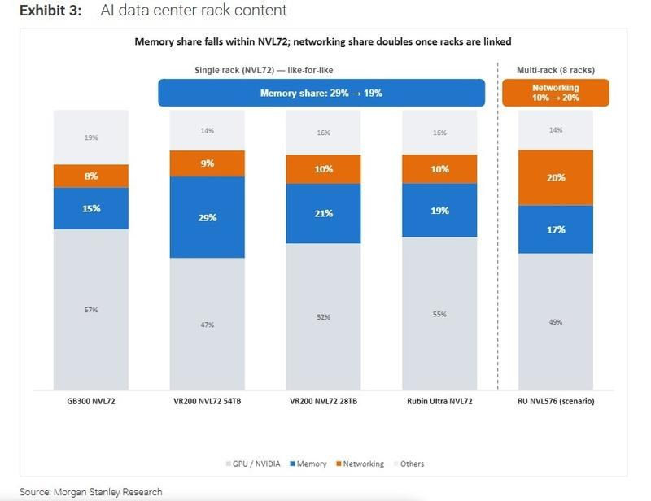
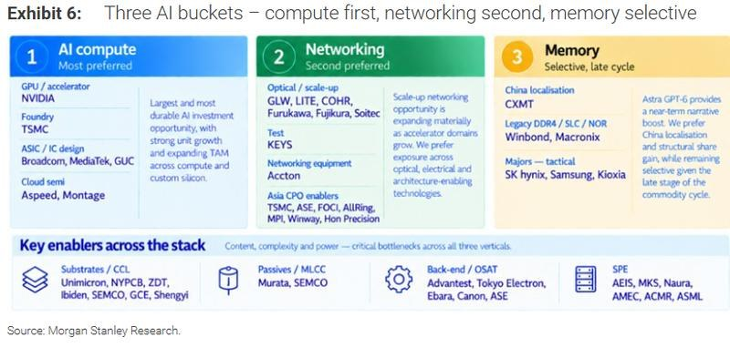

调研纪要 · 2026-10-15 新闻日报
星球 ID: 28855458518111 | 共 196 条帖子 | 精华 49 条
| 查看研究积累
强制同步到研究积累
全部 电子 计算机 机械设备 其他 电力设备 非银金融 宏观策略 传媒 汽车 基础化工 交通运输 医药生物 食品饮料 商贸零售 建筑装饰 石油石化 通信 煤炭 国防军工 轻工制造 房地产 环保 建筑材料 银行 有色金属 公用事业
书签
[烟花]【中信电子】深南电路业绩预告点评：AI PCB/载板共振，业绩延续高速增长，持续推荐
[烟花]【中信电子】深南电路业绩预告点评：AI PCB/载板共振，业绩延续高速增长，持续推荐
[礼物] 业绩表现：10月15日深南电路发布 2026 年前三季度业绩预告，预计实现归母净利润 40.5~41.5 亿元，同比 +74.1%~78.4%，扣非净利润 40.2~41.2 亿元，同比 +84.2%~88.7%；其中 26Q3 预计实现归母净利润 18.0~19.0 亿元，同比 +86%~97%，环比 +29%~36%，扣非净利润 17.8~18.8 亿元，同比 +94%~105%，环比 +28%~35%，公司业绩符合预期，单季归母净利润创历史新高。
[礼物] 我们认为公司业绩高增主要系：需求侧 AI 服务器、高速交换机、光模块、封装基板等市场需求维持高景气；产能端南通/泰国新工厂爬坡，既有工厂技改扩产持续落地，广州封装基板工厂产能稳步释放；经营端公司稼动维持高位，产品结构持续优化，推动公司业绩延续高增。
[礼物]公司充分受益未来PCB高端化、载板化的产业趋势：
1）AI PCB：45亿无锡AI算力项目目前正在产能建设中，支撑后续业绩增长，高阶算力订单饱满，高价值客户矩阵持续拓展
2）mSAP/BT载板：光模块PCB龙头地位稳固，广州BT载板持续扩产，行业缺货提价进一步推升盈利能力
3）ABF载板：已实现22层及以下产品量产，24层及以上产品顺利推进中，多款高端产品实现批量出货，公司ABF载板业务有望迎来全面起量
[礼物]投资观点：公司作为AI PCB+封装基板综合布局平台型龙头，产品结构升级与产能释放共振下，业绩增长动能有望进一步释放，我们持续看好后续增长潜力，维持重点推荐！
[礼物]欢迎联系 中信电子 雷俊成/桑轶
【东吴电新】宁德时代：连续回购持续落地，9月以来累计金额约37亿元
【东吴电新】宁德时代：连续回购持续落地，9月以来累计金额约37亿元
#10月
[太阳]10月15日：回购68.95万股，加权平均回购价279.01元/股，成交金额约1.92亿元。
[太阳]10月8日：回购69.78万股，加权平均回购价286.57元/股，成交金额约2亿元。
#9月
[太阳]9月29日：回购69.71万股，加权平均回购价286.89元/股，成交金额约2亿元。
[太阳]9月24日：回购68.04万股，加权平均回购价293.94元/股，成交金额约2亿元。
[太阳]9月23日：回购66.51万股，加权平均回购价300.71元/股，成交金额约2亿元。
[太阳]9月21日：回购368.75万股，加权平均回购价298.27元/股，成交金额约11亿元。
[太阳]9月18日：回购151.26万股，加权平均回购价301.70元/股，成交金额约4.56亿元。
[太阳]9月16日：回购309.83万股，加权平均回购价305.65元/股，成交金额约9.5亿元。
[太阳]9月11日：首次回购60.43万股，加权平均回购价330.93元/股，成交金额约2亿元。
9月以来公司已累计实施9次回购，合计回购约1233.25万股、金额约37亿元，回购股份均拟用于注销。自9月11日首次启动回购以来，股价下跌时公司持续实施回购，9次回购日股价按上述倒序分别下跌0.58%/1.50%/1.78%/2.49%/1.19%/1.61%/0.77%/3.44%/2.23%。
【国泰海通通信】光库科技：发布上会稿和Q3预告，数通高速增长1015
【国泰海通通信】光库科技：发布上会稿和Q3预告，数通高速增长1015
事件点评：公司近日发布三季度业绩预告，前三季度实现归母净利润2.79-3.02亿元，同比增长142%-162%；扣非实现归母净利润2.56-2.73亿元，同比增长202%-222%。单看Q3，公司归母大致在1.31-1.54亿元；扣非归母大致在1.25-1.42亿元。Q2单季度分别为1.04/0.95亿元，中位数环比大致有36%/40%。同时发布发行证券购买资产并募集资金及关联交易报告上会稿，有望近期上会。我们推荐点评如下：
[玫瑰]业绩整体符合预期。市场整体预期普遍在1.4-1.5亿左右，整体符合预期。我们预测数通（加华微接）环比高速增长，工业激光领域稳定增长，但米兰方向预计前期研发资本化下开始释放，Q3亏损可能影响有3000多万元。若不考虑米兰在Q2和Q3的影响，公司Q2/Q3其他业务利润预计在1.1/1.6-1.8亿，综合增长环比预计在50%，呈现出较好的经营态势。我们预计其他业务在Q4也有望延续出类似的增长态势。
[玫瑰]上会稿发布，标的增长趋势良好。公司同步发布上会稿情况。安捷讯2024-2026H1收入分别为5.08/7.86/7.45亿元，净利润为1.09/1.78/2.05亿元，主营业务毛利率35.87%/36.82%/41.96%，呈现快速抬升的态势。公司主要生产基地在苏州（总部研发）、河南鹤壁（量产基地）、商丘（新投产基地），海外泰国安捷讯也在2025年投产来保证海外客户交付。
[玫瑰]新技术看点较多，27-28年趋势明确。公司具备领先的CPO 高密度FAU生产能力，主要直接和间接服务于主要的CPO方案商，2027年CPO开始规模量产，公司有望受益；安捷讯主要面向国内龙头模块厂商，2027年NPO等领域的高密度FAU需求也有望快速从Q2Q3上量，也将给公司带来较好增长。此外，公司还拥有国内少有的OCS量产工厂，OCS供应远不能满足全球用户的需求。
欢迎交流 余伟民/王彦龙/黎明聪 18819251936
【光智科技】红外业务再加码——InP与锗弹性仍不容忽视20261015
【光智科技】红外业务再加码——InP与锗弹性仍不容忽视20261015
❗️安徽光智中标11亿产线及配套订单，#该项目主要为红外模组/整机产线与软件系统一体化建设；
❗️标志着GZ在红外方向不仅具备探测器—机芯—模组—整机一体化生产能力，#同时还能承接同行业公司的一体化产线扩产需求（后续或还有此类项目），预计2027年红外业务产值40-50亿，且净利率有望向15%提升。
#InP，全市场率先海外6寸正式订单→产能迅速爬坡→#光互联的简单题：InP的高斜率❗️
#锗，40吨-80吨-100吨产能，极其稀缺的资源品产能，光纤➕红外➕卫星➕光伏→#供需错配放大→价格中枢持续提升❗️
#目标市值依旧维持1000亿，详细拆分纪要模型欢迎私信【华福空天&科技】
机构数据10月15日
机构数据10月15日
[福]【股基】
[發]被动权益：净赎回强度-0.07，占比0.26%
多空比约2:3，买卖整体分歧偏空；今天连续第2个交易日净赎回，理财子是主要卖出力量（净赎回0.57%），保险、信托与公募小幅承接。指数主题层面，买入集中于创业板指（17.51%）、中证全指（7.87%）与北证50（3.16%），卖出集中在中证500（26.70%）、有色金属（7.65%）与红利类（中证红利5.90%、东证红利低波5.75%）方向。
[發]主动权益：净赎回强度-0.04，占比1.88%
多空比约1:3，赎回端占优、情绪较为一致；连续第6个交易日净赎回（自10-08起），公募（净赎回1.26%）与信托（0.29%）是主要卖出力量、五类客群全线净卖出，净赎回力度处于近一年81%分位。穿透来看，净流出高度集中于电子（占净流出43.86%）、通信（9.75%）、机械设备（9.18%）与基础化工（7.15%），国防军工（2.22%）、银行（1.76%）与公用事业（0.54%）等防御方向获得净流入。
[福]【含权债基】
[發]固收+：净赎回强度-0.23，占比7.53%
多空比约2:3，整体情绪中性偏空；连续第7个交易日净赎回（自9-30起）、单日净赎回强度较前一日基本持平，今天券商（净赎回5.06%）与理财子（4.04%）是主要卖出方，保险逆势大额净申购（4.44%、力度处近一年98%分位）。类型上，赎回集中于高波固收+（30.8%）与中波固收+（15.4%）；穿透其股票仓位看，电子（19.48%）、银行（11.37%）与电力设备（11.26%）是主要减仓方向，有色金属获小幅净流入。
[發]可转债：净赎回强度-0.25，占比2.91%
多空比约1:16，几乎仅有单边净流出；已是连续第7个交易日净赎回（自9-30起），券商（净赎回1.96%）与理财子（0.53%）是主要卖出力量，全部机构净赎回历史百分位为96%。
[福]【债基】
[玫瑰]纯债：净申购强度+0.18，占比20.10%
多空比约3:1，多头情绪占据主导地位；连续第4个交易日净申购，理财子是绝对主力（净申购18.36%），券商（2.92%）、信托（0.84%）与保险（0.69%）同向买入，银行自营转为减持（3.01%）；全部机构净申购历史百分位85%、力度处于近一年高位。穿透看，机构申购的债基集中在2-3年（占29.3%）与5年以上（23.6%）久期区间、整体加权久期3.2年、较前一交易日（2.4年）明显拉长，其中保险偏好5年以上、信托集中于2-3年。
[發]短债：净赎回强度-0.00，占比0.35%
多空比约1:1，买卖力量相当、分歧较大；由净申购转为净赎回、终结上一交易日的短暂买入，理财子（净赎回1.59%）是主要卖出力量，保险（1.01%）与公募（0.32%）逆势买入，净赎回历史百分位仅11%、力度温和。
[玫瑰]被动债券：净申购强度+0.07，占比2.94%
多空比约3:1，整体情绪积极偏多；连续第3个交易日净申购，理财子是主要买入力量（净申购3.18%），公募（0.16%）与信托（0.02%）小幅买入，保险转为减持（0.29%）。
📢《广发海外电子通信》台积电 (2330 TT Hold) 3Q26 业绩点评，TSM -2%
📢《广发海外电子通信》台积电 (2330 TT Hold) 3Q26 业绩点评，TSM -2%
🔴3Q26 财报毛利率低于预期
💵营收新台币 1494 亿元，环比增长 17.6%，同比增长 50.9%
📊毛利率 66.4%，环比下降 1.3 个百分点，同比提升 6.9 个百分点，彭博预期 66.5%，买方预期 67.5%
🧾每股收益新台币 29.43 元，市场预期新台币 28.38 元
🔴4Q26 指引多空参半
💵营收 523-543 亿美元，环比增长 14%，同比增长 58%，高于彭博预期环比 + 10%，广发预期 + 11%，买方预期 + 12%
📊毛利率 65-67%，彭博预期 66.1%，广发预期 67.2%，买方预期 67.5%
📊营业利润率 56.5-58.5%
🔴资本支出
💰3Q26 资本支出新台币 4430 亿元，2026 年全年资本支出指引维持 600-640 亿美元
📈预计未来三年资本支出显著高于过去三年
🔴近期展望
📈2026 全年美元营收指引增长 44%
📉消费及价格敏感型终端受到零组件涨价、宏观不确定性影响
📊2026 年海外厂对全年毛利率稀释预计 2%
📊随着美国更多晶圆厂爬坡，未来几年毛利率稀释预计扩大至 3-4%
🔴AI 展望
🚀AI 长期需求强劲，需求从聊天机器人向 AI 助手方向演进
💻开源 AI 模型普及有望提升效率、降低 AI 使用门槛
🧩除 AI 加速器外，AI 中央处理器及网络芯片同样是重要需求来源
🔴产能计划
🏭全球目前约 20 座晶圆厂正在建设当中
📍台湾地区未来数年计划建设 13 座先进制程 & 先进封装晶圆厂
🌍海外建设 5-6 座晶圆厂
⚙️2027 年 N2 家族年产能预期翻倍以上
✅亚利桑那晶圆厂 2 完成建造，将于 3Q27 量产，进度早于预期
🇯🇵日本晶圆厂 2 导入 N3 制程，2028 年实现量产
📝已开始准备 A14 产能，2027 年试产符合进度，2028 年正式量产
🔧增加跨节点产能优化，包含 N7、N5 及 N3 节点之间的产能调配支持
🔴其他摘要
📈2024-2029 年 AI 加速器复合年均增长率为 50% 以上区间，存在继续走高的可能性，未见 AI 需求放缓迹象
📊长期依旧预计营收增速大于资本支出增速
🤝Terasfab 合作尚无定案，但晶圆厂必须由台积电运营
🔬2030 年才导入高数值孔径极紫外光刻，不会造成技术劣势
➕A14 客户持续增加，预计 A14 将会成为比 N2 规模更大的制程节点
📐已经实现 5 倍掩膜尺寸量产，正推进 9 倍向 14 倍掩膜尺寸升级
🤝与格芯签署合作协议，支持后道产能
📢 $TSM Wei 在电话会议上说：
📢 $TSM Wei 在电话会议上说：
🔥 AI 需求 “非常、极其强劲”。
✅ 没有任何放缓迹象。
📈 被问及到 2029 年 AI 加速器 CAGR 此前为 50% 中高位时，他表示：“它可能更高”。
⚖️ 需求仍远超供应。客户不断增加订单，所以他们甚至无法判断 2027 年的缺口会扩大还是缩小。
🔍 他们派人现场亲自验证数据中心建设进度。
💰 定价权 “没有上限”。
📑📌台积电 3Q26 财报初步反馈
📑📌台积电 3Q26 财报初步反馈
📬本次台积电投资者反馈重点聚焦于三季度毛利率 66.4% 低于我们买方预期的 67.1%，以及管理层能否达成四季度毛利率指引区间 65%-67% 的上限（我们调研预期为 67%），投资者提出台积电过往业绩通常会超预期兑现。
🔍市场对于半导体行业大范围产能过度建设的担忧热度走高，台积电表示已派遣团队前往德克萨斯州评估一处新增晶圆厂综合选址，同时正在与 Terafab 开展相关洽谈；投资者援引 Coreweave 与 neocloud 信贷成本上行，作为支撑该担忧的依据。
✨市场高度关注的 A14 工艺节点，计划提前至 2027 年开展风险试产、2028 年实现量产，相关预期与二季度会议表述保持一致。市场期待获取更多细节，以此对核心供应商 ASML、Lasertec、Disco、Kinik 形成正面解读。
💱我们持续收到关于科技板块资金流向的各类提问，资金流动属于全局性现象，尤其台湾地区，今日当地创下 94 亿美元外资净流出纪录，仅台积电单家对应的外资流出规模就达到 26 亿美元。
📈尽管台积电毛利率表现不及预期，但基于公司给出的四季度营收环比增长 14% 指引（显著高于我们买方预期 11.2%），将带来增量经营杠杆，我们与市场一致预期的盈利预测仍存在继续上调空间。
🌟长期投资者整体对本次业绩电话会持正面态度，核心逻辑来自增量 AI（含 Agentic 智能体）需求带来的盈利上行潜力，并且 A14 工艺节点的产业活跃度甚至高于 N2 节点。
📉台积电 ADR 当前下跌 2%，走势与台股收盘表现基本同步，溢价率维持在约 11%，因此本次业绩电话会后，股价波动幅度有限。
🖼️台积电 3Q26 实际业绩 vs 摩根大通预测 / 市场一致预期 / 买方调研预期
毛利率：实际 66.4%，摩根大通预期 66.8%，市场一致预期 67.1%，买方调研预期 67.1%
营业利润：实际 8764 亿新台币，摩根大通预期 8434 亿新台币，市场一致预期 8672 亿新台币
营业利润率：实际 58.7%，摩根大通预期 58%，市场一致预期 58.9%
净利润：实际 7631 亿新台币，摩根大通预期 7241 亿新台币，市场一致预期 7494 亿新台币
每股收益：实际 29.43 新台币，摩根大通预期 27.92 新台币，市场一致预期 28.91 新台币
🖼️台积电 4Q26 业绩指引 vs 摩根大通预测 / 市场一致预期 / 买方调研预期
营收环比增速：公司指引 14%，摩根大通预期 11%，市场一致预期 10.6%，买方调研预期 11.2%
毛利率：公司指引 65%-67%，摩根大通预期 66.8%，市场一致预期 66.9%，买方调研预期 67%
营业利润率：公司指引 57.5%，摩根大通预期 58%，市场一致预期 59%
🖼️积电 2026 全年业绩指引 vs 摩根大通预测 / 市场一致预期 / 买方调研预期
美元口径营收同比增速：公司指引 44%，摩根大通预期 41%，市场一致预期 41%
美元口径资本开支：公司指引 620 亿美元，摩根大通预期 640 亿美元，市场一致预期 626 亿美元，买方调研预期 641 亿美元
📑OCP 第二日模拟与功率半导体要点
📑OCP 第二日模拟与功率半导体要点
👥我们出席了加利福尼亚州圣何塞举办的 OCP 大会第二日活动，并且与 ALAB、MPWR、Ferric 半导体开展会谈，下面总结三项核心观点。
⚡第一，随着机柜功率需求向约 600 千瓦提升，800 伏直流侧挂电源架构更有可能在 2027 年下半年开始落地应用，该判断与我们此前预期保持一致。
📦第二，各家公司将在 2026 年第四季度至 2027 年第一季度开展集成稳压器（IVR）方案的样品测试，目前已经有小批量出货的情况。
🤖第三，随着人工智能集群采用更高光模块密度以及机柜级液冷方案，我们预计单系统模拟芯片价值量将会提升，利好我们重点给予买入评级的模拟芯片标的 TXN、ADI 以及 MPWR，可参考我们 OCP 大会首日的要点纪要。
🔌800 伏直流技术将在 2027 年下半年大规模落地：当前机柜功率约 230 千瓦，还未到必须采用 800 伏直流侧挂架构的阶段。随着机柜功率需求向约 600 千瓦提升，800 伏直流侧挂电源架构更有可能在 2027 年下半年开始落地应用，和我们此前预期一致。
🔋氮化镓与碳化硅均被用于功率转换场景，碳化硅更多应用在高压场景，谷歌在下一代架构的应用方面处于领先地位。
📈集成稳压器（IVR）2027 年逐步获得关注，大规模放量在 2027 年下半年之前难以实现。
🧪各家公司将在 2026 年第四季度至 2027 年第一季度开展集成稳压器（IVR）方案的样品测试，目前已经出现小批量出货。
⏱我们认为集成稳压器难以在 2027 年下半年之前实现大规模放量。
🤝由于芯片、基板以及印刷电路板生态之间需要深度联合开发，一旦集成稳压器方案完成设计导入，将会稳固对应供应商的行业地位。
✅我们认为 MPWR 以及完成对 Empower 半导体收购的 ADI 最有能力把握集成稳压器带来的行业机遇。
💡网络光模块与液冷拓展模拟芯片市场空间：可插拔光模块、NPO、CPO、交换机、OCS 都需要额外的电源管理、时序、传感、监测、控制以及信号链相关芯片器件。
❄液冷架构会新增温度、压力、流量、泄漏检测、遥测以及电源管理类集成电路。
📊随着人工智能集群采用更高光模块密度与机柜级液冷方案，我们预计单系统模拟芯片价值量将会提升，利好 TXN、ADI、MPWR。
🔍微芯科技（MCHP）逐步切入下一代人工智能机柜电源架构赛道。
📅10 月 12 日，纳维塔斯发布和英伟达联合开发的 24 千瓦 800 伏转 12 伏电源分配板，该产品是对 2026 英伟达 GTC 大会首次公开的 20 千瓦 800 伏转 6 伏平台的升级。
📅更早的 10 月 5 日，纳维塔斯和微芯科技推出一套 800 伏转 6 伏参考设计，该方案搭载微芯科技 dsPiC33AK 数字控制器与 TA100 安全芯片。
🚀我们认为这将成为微芯科技数据中心业务新的增量增长方向。
🔬Ferric 半导体相关要点
⚡单令牌功耗表现最优：Ferric 表示，相比竞品集成稳压器方案，自家产品单令牌能耗可以降低 8%‑12%。
✅客户主要评估四项核心指标：电流密度、转换效率、瞬态响应以及器件垂直高度。
🏆竞争定位：Ferric 把先进封装能力、电感器设计、数字控制器技术作为自身核心差异化优势，一般不将传统模拟芯片公司视作主要竞争对手。
📦集成稳压器落地进展：Ferric 目前已经实现小批量出货，预计 2027 年开始大范围部署；在基板完全埋入式工艺成熟之前，多种集成方案都将实现量产。
🔧当前背面印刷电路板贴装是最普遍的集成方式。
🤝我们判断 Ferric 已经和多家主流 AI 加速芯片公司开展合作，其中就包括和美满电子（Marvell）的伙伴合作关系。
📢其他行业发布信息
💻英特尔在 OCP 大会重点展示面向推理场景的 GPU 产品。
ℹ英特尔披露了 D 系列 GPU（Crescent Island）更多细节，该产品面向对内存要求较高的人工智能推理工作负载。
🧠单卡最高搭载 480GB LPDDR5X 内存，带宽可达 1.5TB/s，单卡能够支持最高 3000 亿参数模型，八卡系统可以支持超过 1 万亿参数的模型。
🗄英特尔同时展示基于至强处理器的 ORv3 机柜方案，单机柜可扩展至 46000 颗以上 CPU 核心，强调至强处理器可以和 GPU 协同，承担智能体 AI 的调度编排工作。
📑SEMICON West 2026：行业前景更加明朗，维持看好
📑SEMICON West 2026：行业前景更加明朗，维持看好
📅我们于 10 月 13‑14 日参加了在加利福尼亚旧金山举办的 SEMICON West 展会，与应用材料、泛林半导体、泰瑞达、康泰克、昂拓创新、MKS 仪器以及行业内多家其他公司开展交流。
📈综合本次参会收获，我们对 2027、2028 年晶圆设备（WFE）增长的看法边际转好，该判断与我们近期晶圆设备展望保持一致。
📝下面梳理行业核心观点，以及各家公司调研要点。
⚙️晶圆设备（WFE）趋势：尽管各家公司并未给出晶圆设备预期的量化更新，但行业达成共识，受全球 8‑10 座涵盖多类产品的全新晶圆厂投产带动，2027 年会是晶圆设备行业表现十分强劲的一年。
💰我们当前测算，2027 年晶圆设备市场规模同比增长 45% 左右，约 2180 亿美元，增长动力来自 DRAM、先进制程逻辑 / 代工厂以及 NAND 闪存。
🧠先进制程逻辑芯片：随着人工智能数据中心建设持续扩张，先进制程逻辑芯片相关需求持续向上。
🔍测试赛道：芯片复杂程度不断提升，市场需要创新解决方案帮助客户缩短产品上市周期。
⏱最新一代 GPU 与加速芯片的测试时长仍在不断增加，我们认为这将成为未来几年自动测试设备（ATE）增长的核心驱动因素，光网络等新兴市场同样会带来增量空间。
🔬后端检测与量测：受 CoWoS、HBM，以及中长期需求驱动因素进入早期放量阶段等多重因素推动，行业参与者对 2027 年的需求前景保持非常积极的态度。
📋公司会面核心要点
🛠️应用材料调研要点
👥参会人员：战略与营销副总裁 Kevin Moraes；先进封装副总裁 Sree Kesapragada；投资者关系负责人 Mike Sullivan。
❓投资者提问主要围绕该公司投资者交流会内容以及财务目标进行确认。
💴针对营收以及资本密集度，管理层表示半导体行业产品定价属于自身无法掌控的关键变量，但对 “单节点晶圆设备投入强度上行” 这套分析框架具备高度信心，客户目前已经程序化锁定该部分增量投入。
📊针对公司 200 个基点的市占率提升目标，管理层说明该目标计算涉及复杂的产品结构效应，同时中国出口管制豁免条款会带来显著影响。
📈对于公司新提出的 2030 年 54% 毛利率目标，应用材料认为该目标存在向上突破的可能性，但同时指出公司绝大部分成本都属于变动成本。
🔭在光学设备业务方面，应用材料认为可以依托电子束技术领域的专业积累与市场地位，切入这个规模 90 亿美元的相邻市场。
✨针对 AGS 业务，管理层对该业务长期 15% 左右营收增速的前景抱有高度信心，同时表示新设备的服务配套率要高于存量装机设备。
⚙️泛林半导体调研要点
👥参会人员：投资者关系副总裁 Ram Ganesh。
🔁与此前表态保持一致，泛林半导体预计 2027 年会有 8‑10 座全新晶圆工厂项目投产；公司判断产品增长将依次由 DRAM、先进代工厂 / 逻辑芯片、NAND 闪存来驱动。
🎯公司尚未给出实现全新长期 55% 毛利率目标的时间节点。
⌛我们预计该目标需要数年时间达成，目标实现更多取决于产品结构（尤其是 Akara 这类新产品）以及海外生产运营效率，而非单纯依靠同产品提价。
✅管理层对公司在逻辑芯片、DRAM 以及先进封装领域的竞争地位维持乐观；随着硬掩模、表面预处理、硅通孔以及其他材料工艺步骤等各类全新器件结构出现，刻蚀与薄膜沉积的投入强度还会持续提升。
🧪泰瑞达调研要点
👥参会人员：计算测试事业部副总裁兼总经理 Roy Chorev；投资者关系副总裁 Amy McAndrews。
🤝泰瑞达在 SEMICON West 展会上宣布与 FormFactor 达成战略合作并完成对其投资。
🔌泰瑞达依旧坚持探针卡供应商开放生态，但 FormFactor 在硅光领域具备强劲实力，因此双方需要建立更紧密的合作，让泰瑞达可以投入更多工程平台资源。
🚀针对 XPU 业务，泰瑞达长期依旧看好在第三方 GPU 市场获取更多份额；管理层提到，受晶体管数量近乎翻倍影响，Rubin 芯片测试时长几乎达到 Blackwell 芯片的两倍。
💼泰瑞达也在争取英特尔的测试设备订单，英特尔正计划提高对外采购供应商占比（目前使用内部自研方案），该变化会先从其代工厂业务落地，泰瑞达判断这会带来中期业务机遇。
💾在存储业务板块，泰瑞达认为客户降低 HBM 规格带来的影响有限，因为业务需求主要由出货颗数驱动，而非堆叠层数。
🔗针对共封装光学，泰瑞达判断该产品拥有极强的放量机遇，但当前行业尚处在早期发展阶段，制造流程不同环节的测试强度大概率会出现较大变动。
🔎康泰克调研要点
👥参会人员：执行董事长 Lior Aviram；首席执行官 Rafi Amit；总裁兼首席运营官 Ramy Langer；首席财务官 Moshe Eisenberg；营销总监 Eyal Segev。
📢我们参与了康泰克在 SEMICON West 期间举办的投资者交流会，核心要点如下。
💰长期财务目标：配合本次投资者交流会，康泰克提前披露 2026 年第三季度营收为 1.60‑1.61 亿美元，高于此前指引；给出 2026 年第四季度营收指引约 1.80 亿美元；基于当前已获取订单，初步给出 2027 年 8 亿美元的营收展望。
🎯管理层设定三年左右实现 12 亿美元营收的长期目标，毛利率目标 55%‑56%，营业利润率目标 34%‑36%。
📈先进封装仍是核心增长驱动，康泰克表示先进封装业务占近期订单的八成左右；公司预计先进封装晶圆增速约为行业整体增速的两倍。
✨公司绝大部分业务来自高端市场，受人工智能、硅光、更高密度互连、检测与量测要求日趋复杂等因素驱动，预计高端市场到 2031 年复合增速约 24%。
🗺️技术与产品路线图围绕检测以及专用量测业务展开：康泰克路线图核心为可以增厚利润的 Hawk、Eagle 检测产品，两类产品占 2026 年业务结构的 85%，同时包含量测平台。
🤖另外管理层提到，公司正将人工智能融入缺陷识别与分类环节，计划 2027 年推出搭载 AI 能力的软件产品，该能力来自对 Visual Layer 的收购。
🤝并购战略聚焦能力获取与战略扩张：康泰克表示既会开展小型收购，为核心业务补充技术与人才，也会推进大型战略交易拓宽产品供给；同时强调 12 亿美元营收目标以及财务模型并未假设大规模并购贡献业绩。
🔬昂拓创新调研要点
👥参会人员：首席财务官 Brian Roberts；投资者关系副总裁 Sidney Ho。
📈昂拓创新对 2026 年下半年延续至 2027 年的多重需求驱动前景保持高度乐观，伴随增量市场机会释放，预计明年行业增长还会加速。
💿在 HBM 业务上，昂拓创新判断 XPU 厂商下调 HBM 规格对自身业务冲击很小，公司设备需求更多取决于出货颗数，而非堆叠层数。
🧩公司持续将 CoWoS 视为核心需求驱动来源，目前该业务的需求越来越多来自封测服务商，而不再只是台积电；昂拓创新认为 EMIB‑T 会带来重大机遇，预计 2028 年该业务贡献会具备实质性规模。
🏆竞争层面，昂拓创新对自身包括台积电在内的市场份额地位信心充足，认为竞争对手的潜在新品发布不会带来迫在眉睫的冲击。
📊利润率方面，管理层对自身毛利率扩张 350 个基点的目标保持信心，认为仅依靠产品结构优化以及制造运营效率提升就可以完成目标。
💹公司认为营收还有很大向上增长空间，不存在产能约束问题。
⚙️MKS 仪器调研要点
👥参会人员：总裁兼首席执行官 John Lee；投资者关系副总裁 Paretosh Misra。
📈MKS 仪器认为，受人工智能与数据中心需求拉动，行业正处在一轮大周期上行的早‑中期阶段。
💵公司正在为 2028 年晶圆设备总支出最高 3000 亿美元的潜在规模做准备，后续该数值还有继续走高可能。
🚀短期来看，受供应链库存因素影响，公司营收增速有望跑赢下游客户，2026 年第二季度已经实现半导体业务同比增速首次超过下游客户。
🏭MKS 仪器槟城工厂可以支撑约 2500 亿美元规模的晶圆设备市场，还具备额外 20% 的弹性产能；如果前述预测兑现，公司可能需要进一步扩充产能。
✅重要的是，公司认为自身当前并没有制约下游客户的扩产计划。
📉公司尚未进行大规模涨价，认为现有产品组合布局合理；若估值合适，公司会考虑剥离部分特种工业产品线。
摩根士丹利：存储器渠道调研
摩根士丹利：存储器渠道调研
HBM / Nvidia Rubin
HBM / 英伟达 Rubin
→ HBM ASPs expected +121% YoY in 2027. HBM4 pricing at $3–5/Gb, with HBM4e at $5+/Gb.
→ 预计 2027 年 HBM 平均售价同比上涨 121%。HBM4 价格为 3–5 美元/Gb，HBM4e 则为 5 美元以上/Gb。
→ Nvidia Rubin ramp slower than planned. Fewer than 10k VR200 NVL72 racks expected in 2026 vs. an original ~15k target. Rubin expected to become mainstream after 1H27.
→ 英伟达 Rubin 的量产爬坡慢于计划。预计 2026 年 VR200 NVL72 机架出货量不足 1 万台，低于最初 1.5 万台的目标。预计 Rubin 将于 2027 年上半年之后成为主流。
→ HBM4 yields remain constrained. 8-high stacks offer ~5 percentage points higher yields than 12-high and are expected to become mainstream in 2027. Lower HBM capacity per chip could benefit RDIMM/SOCAMM as inference KV-cache shifts to host memory.
→ HBM4 良率仍受限制。8 层堆叠的良率比 12 层堆叠高 5 个百分点，预计将于 2027 年成为主流。每颗芯片的 HBM 容量较低，可能利好 RDIMM/SOCAMM，因为推理 KV 缓存正转向主机内存。
DRAM
动态随机存取存储器
→ 4Q26 contract pricing revised to +10–15% QoQ from +3–8%. PC DRAM +13–18%, server DRAM +10–15%, mobile DRAM +0–5%.
→ 4Q26 合约价格涨幅预期从环比上涨 3–8% 上调至 10–15%。PC DRAM 涨幅为 13–18%，服务器 DRAM 为 10–15%，移动 DRAM 为 0–5%。
→ US hyperscalers reportedly placed additional RDIMM orders for 2027. Korean suppliers' PC DRAM output could fall >20% YoY as capacity shifts toward server DRAM and HBM.
→ 据称，美国超大规模云服务商已追加下单 2027 年 RDIMM。随着产能转向服务器 DRAM 和 HBM，韩国供应商的 PC DRAM 产量同比可能下降逾 20%。
→ DDR5 modules now trade at a ~10% discount to DDR4. DDR4 supply expected to decline ~20% in 2027 as suppliers exit legacy production.
→ DDR5 模组目前的交易价格比 DDR4 低 10%。随着供应商退出旧制程生产，预计 2027 年 DDR4 供应量将下降 20%。
→ DRAM capex projected at $98bn in 2026 (+82% YoY) and $150–160bn in 2027 (+~60%), but meaningful additional bit supply only arrives in 2H27.
→ 预计 DRAM 资本开支将在 2026 年达到 980 亿美元（同比增长 82%），2027 年达到 1,500 亿至 1,600 亿美元（同比增长约 60%），但显著新增的比特供应要到 2027 年下半年才会到来。
NAND / Enterprise SSD
NAND / 企业级 SSD
→ 4Q26 NAND pricing revised to +15–20% QoQ from +0–5%. Enterprise SSD pricing expected +23–28%, significantly outpacing client SSD.
→ 2026 年第四季度 NAND 价格预期从环比上涨 0–5%上调至 15–20%。企业级 SSD 价格预计上涨 23–28%，远超客户端 SSD。
→ Several major US cloud customers reportedly shifting from TLC SSD + HDD to QLC SSD for AI inference KV-cache storage. QLC costs roughly one-third as much as TLC at equivalent capacity.
→ 据报道，数家美国大型云服务客户正将 AI 推理 KV 缓存存储方案从 TLC SSD + HDD 转向 QLC SSD。在容量相同的情况下，QLC 的成本约为 TLC 的三分之一。
→ Consumer NAND inventories are building despite enterprise SSD shortages, with suppliers reportedly bundling excess consumer inventory to secure sales.
→ 尽管企业级 SSD 供应短缺，消费级 NAND 库存仍在增加。据报道，供应商正捆绑销售过剩的消费级库存以确保出货。


2 图
野村：按不同产品类别划分的中国晶圆制造设备（WFE）总潜在市场
野村：按不同产品类别划分的中国晶圆制造设备（WFE）总潜在市场
彭博行业研究：传统云计算与 AI 投资资本回报率（ROIC）
彭博行业研究：传统云计算与 AI 投资资本回报率（ROIC）
预计到 2030 年，SpaceX 的 ROIC 将高达 ~25%。
美国PPI涨幅创2022年以来新高，能源困境加剧
美国PPI涨幅创2022年以来新高，能源困境加剧
纽约市审计长呼吁 Anthropic 暂停 IPO，以保障人工智能安全。
纽约市审计长呼吁 Anthropic 暂停 IPO，以保障人工智能安全。
【财通策略徐近峰&王亦奕团队】韩国股指&个人投资者融资跟踪-1015
【财通策略徐近峰&王亦奕团队】韩国股指&个人投资者融资跟踪-1015
#韩国杠杆平仓风险暴露提升
1️⃣2026年10月15日，KOSPI大跌，相对6月1日基准走势约63.20，较前一交易日68.37下跌；单日涨跌幅约-7.57%。
2️⃣2026年10月15日，KOSPI&KOSDAQ同日熔断，FSC委员长李亿远主持紧急会议，定性市场过度反应，对虚假传闻、操纵股价、非法卖空零容忍，准备相应应急方案。
3️⃣2026年10月14日，强制平仓金额占应收款比重为7.2%，环比上一交易日5.6%增加1.6pct；委托买卖应收款为1.4万亿韩元，环比上一交易日1.2万亿韩元增加0.1万亿韩元；两者年内分位数分别为0.963、0.849，均处于相对较高位置。个人投资者保证金为97万亿韩元，环比上一交易日100万亿韩元减少3万亿韩元，年内分位数为0.111。
【财通策略徐近峰团队】科技交易热度跟踪
【财通策略徐近峰团队】科技交易热度跟踪
1、截至2026年10月15日，一级行业来看：绝对热度排序为传媒（75.7%）＞电子（21.0%）＞计算机（9.9%）＞通信（6.5%）；四个行业热度均回落，传媒日环比下降3.50pcts，降幅最大，电子下降0.15pcts，降幅最小。
相对热度上，传媒价格、量能分位数分别下降3.1pcts、3.9pcts，量价同步降温；电子价格分位数下降5.8pcts、量能分位数上升5.5pcts，两端变化基本抵消，热度小幅回落。
2、二级行业来看：绝对热度TOP5为出版（84.3%）＞影视院线（82.0%）＞电视广播Ⅱ（75.6%）＞数字媒体（71.9%）＞元件Ⅱ（70.1%）；
日环比升幅最大的是半导体（+2.80pcts），其次为计算机设备（+0.80pcts），电子化学品Ⅱ与IT服务Ⅱ均上升0.70pcts。半导体价格分位数下降5.8pcts、量能分位数回升11.4pcts，热度改善由量能驱动。产业侧，ASML昨日披露，AI投资推动客户上调中短期设备需求，现有2027—2028年供给规划难以完全满足需求；台积电今日给出第四季度营收指引523亿—543亿美元，高于第三季度实际营收467.2亿美元。AI需求正向晶圆制造和设备环节传导，先进制程扩产仍是硬件投资的重要方向。
具体数据欢迎联系财通策略徐近峰/张欣诺18845188233
瑞银——美国软件行业：2026年三季度网络安全（网络防火墙与SASE）业绩前瞻
瑞银——美国软件行业：2026年三季度网络安全（网络防火墙与SASE）业绩前瞻
瑞银对飞塔网络（FTNT）与 checkpoint（CHKP）均维持“中性”评级，但两者投资逻辑截然不同。FTNT方面，渠道调研显示防火墙及SASE需求持续强劲，但年内产品与订阅预期已大幅上修，当前股价对应2028年预期自由现金流（FCF）约38倍，估值已充分计入持续增长预期，进一步超预期难度加大。CHKP方面，市场预期已显著下调，年初至今股价下跌约26%（同期BUG指数上涨约60%），尽管防火墙整体需求旺盛，但公司新业务拓展与平台化 adoption 未见拐点，低预期下 setup 相对宽容，但基本面缺乏反转证据。
防火墙市场：量增放缓，价增托底，周期或见顶
三季度防火墙市场整体健康，刷新周期延续，但渠道反馈显示单位出货量增长开始放缓，收入增长主要依赖此前累计30%-40%的提价。瑞银行业模型表明，即便假设典型的三季度季节性，产品收入周期已在2026年二季度见顶。展望四季度及2027年，对比基数走高，增长料将减速。AI采用带来的防火墙需求（合作伙伴对SASE需求的影响看法分歧）及 neocloud/AI工厂机会是关键变量；初步调研显示AI数据中心内防火墙密度并未必然提升，主要机会在于南北向吞吐量。库存方面，部分下一代防火墙设备因芯片成本与制造问题仍受限，分销商库存增速放缓。架构层面，传统防火墙与SASE的长期博弈持续：部分客户因安全控制与分段需求 reconsider 硬件架构，但多数观点认为园区与远程办公场景将向SASE倾斜。
SASE市场：成熟度提升，中型企业成主战场
SASE需求保持增长，但市场日益成熟、竞争加剧。大型企业绿地项目减少，机会向中型企业（员工数2000-5000人）及中小企业下沉。Palo Alto与Zscaler仍被视为领导者，但Netskope（尤其在对抗Zscaler）、Cato、Versa等厂商份额上升。防火墙需求回暖与SASE演进相互交织，混合环境普遍，客户在云交付安全与硬件控制之间权衡。
FTNT（3Q26预计10月28日盘后发布）：基本面稳健，但估值高企
瑞银对FTNT潜在趋势仍持建设性看法：NGFW需求健康，FortiSASE traction良好，OT安全等新兴领域受关注。预计三季度产品收入同比增长29%（达到全年约31%增长指引需四季度增速降至约10%），订阅收入增速进一步加速至约14.2%（四季度约14.5%）。然而，在年内两次上调全年预期、股价年初至今上涨约140%后，持续超预期已部分反映在股价中。目标价由180美元上调至200美元（基于2028年预期FCF的41倍，较网络安全和广义网络安全同业存在溢价，但与其增速和利润率匹配）。当前估值要求2027年20%以上增长，风险回报趋于均衡，维持“中性”。
CHKP（3Q26预计11月2日盘前发布）：执行乏力，缺乏拐点
CHKP年初至今跑输同业，尽管防火墙刷新周期强劲，但公司参与度有限。预计三季度产品收入同比下降约19%，四季度在低基数下增长约15%；订阅收入三季度中个位数增长，四季度需加速至低双位数。渠道调研显示，增长仍主要来自续约和现有部署，新业务获取与平台扩展（尤其是SASE）持续面临挑战——SASE增速远落后于PANW（约30%）和FTNT（约20%）。Harmony Email是少数亮点，但不足以改变整体增长轨迹。管理层将部分账单增长从三季度移至四季度，提供了一定季度间灵活性，但缺乏SASE traction正持续侵蚀mindshare。目标价由135美元上调至145美元（基于2028年预期FCF的9倍，较同业适度折价，反映其低增长、高利润率及回购特征）。维持“中性”，需观察GTM改革能否转化为管道转化改善。
估值方法论与主要风险
FTNT目标价基于EV/FCF相对估值框架，关键风险包括企业级市场渗透能力、激进再投资导致的利润率稀释、电信垂直领域敞口，以及传统数据中心向云迁移削弱定制硬件优势。CHKP目标价采用50/50混合P/E与EV/FCF法，风险包括宏观经济疲软抑制IT支出、与FTNT/PANW及网络厂商竞争、间接渠道占比近100%限制能见度并增加信用风险，以及庞大现金储备下的并购稀释可能。
【华泰建筑建材&中小】3Q26业绩前瞻261015:
【华泰建筑建材&中小】3Q26业绩前瞻261015:
我们预计：
科技链条：电子布提价及产品结构升级带动盈利增长，洁净室项目推进有望支撑收入、利润增长；电源材料高端需求景气，但成本扰动影响盈利兑现；
周期建筑：3Q地方政府资金、投资面表现偏弱，多数大央企收入、利润同比承压，地方国企、国际工程及专业工程表现分化。
周期建材：水泥、浮法及光伏玻璃需求偏弱叠加能源成本上行，主业盈利承压，海外业务及投资收益提供部分对冲；消费建材虽有提价，但传导落地仍有时滞，利润率环比或多有压力。
展望4Q26，我们预计科技链预期延续向好，电子布提价、洁净室在手项目推进有望延续；电源材料高端产品产能释放，叠加成本压力缓解配合，催化盈利持续提升；传统周期链条筑底仍需时间，若资金到位及项目实施加快，建企收入或边际修复，回款及减值仍可能形成盈利制约；水泥、玻璃修复仍待需求修复与供给收缩配合，消费建材需看提价落地及存量装修需求转化，成本与减值仍需关注。
欢迎联系：方晏荷/黄颖/樊星辰/石峰源/孔舒
【台积电：预计Q4需求持续强劲 AI智能体的CPU需求远超目前供应能力】
【台积电：预计Q4需求持续强劲 AI智能体的CPU需求远超目前供应能力】
台积电10月15日下午发布2026年第三季度业绩并召开分析师会议，就业绩指引、人工智能需求、资本支出、工艺/产能等方面情况进行了介绍。核心内容如下：
（一）关于业绩指引
①公司预计第四季度销售额523亿美元至543亿美元，市场预估503.5亿美元；公司预计第四季度毛利率为65-67%（第三季度为66.4%）。
②公司预计2026年营收以美元计算将增长约44%，此前预测为略高于40%。
③盈利能力没有上限，但大幅提升不会一蹴而就。
（二）关于人工智能需求
①对人工智能大趋势有坚定信心，AI需求持续增长，预计Q4需求持续强劲。
②AI智能体的CPU需求正在增长，需求仍远超现在的供应能力。
（三）关于资本支出
①2026年资本支出预期为600亿-640亿美元。
②将在2027年的商业规划中保持谨慎，现在披露今年之后的资本支出数额还为时过早。
（四）关于工艺/产能
①先进制程需求十分旺盛，将在台南新建一座3纳米制程晶圆厂。
②正与马斯克探讨能否利用TeraFab的闲置产能,任何工厂合作都必须由台积电主导。
③在亚利桑那州已经完成了第二座晶圆厂的建设，量产将于2027年第3季开始，比先前的预定时间稍早。
④正考虑在亚利桑那州以外的地区扩大美国产能，正在对得克萨斯州进行选址评估。
⑤日本第二座晶圆厂采用3纳米制程，预计于2028年开始量产。
⑥A14芯片将于2028年启动量产。
【HYDZ HL】上修华海清科27年订单展望，重点看好
【HYDZ HL】上修华海清科27年订单展望，重点看好
根据我们产业链调研、行业及公司交流，我们预计2027年华海清科订单有望达到200e，市场普遍预期150e，高增原因
1. 三家存储公司加速扩产，华海清科作为CMP领域绝对龙头，会吃满本次扩产Beta，我们预计相关CMP订单有望达到120e
2. 先进逻辑及先进封装放量，预计拉动40e+ CMP订单
3. 存储公司HBM扩产+CoWoS扩产带动高端减薄抛光设备放量，预计订单18e-20e
4. 离子注入设备启动大规模放量，预计订单18-20e
5. 其他新产品等5-10e
我们预计27年公司利润 30e+，27年订单对应利润可达58-60e
目前市值对应27 PE ＜40.0x，28 PE ＜20.0x，考虑到27/28年订单增速100%/50%+，估值非常合理，且现在股价位置优秀，基本完成筑底，重点推荐！
【zx航空航天】复旦微电三季报预告速评
【zx航空航天】复旦微电三季报预告速评
--------
1、26Q3单季度预计实现收入12.2~14.2亿元，同比+3.3%~20.2%，环比+2.7%~19.4%；实现扣非归母净利2.9~4.4亿元，同比+138%~262%，环比+7.5%~63.4%。Q3收入及扣非归母大超预期。
2、在高可靠方向景气波动背景下，公司业绩保持高增，换届后产品谱系拓展、领域扩充的成果显著。后续RF-FPGA、FPAI等新产品，以及商业航天、半导体设备、高端测试等高端民品方向均具备广阔空间，成长曲线清晰。
3、公司前期已通过设立平台、签订协议等系列措施强化与复旦大学长期的产学研转化关系，上海国盛进入后有望进一步强化供应链、产业协同等方面的支持。
4、公司年初至今已调整-40%+，25年大股东复芯凡高协转上海国盛集团的转股价为48.2元，当前基本面持续超预期，但股价仍位于转股价以下。按前期点评盈利预测（27年12.5亿利润），当前A股估值约30x，H股估值约14x，
--------
坚定看好复旦微电A+H投资机会，近况欢迎沟通[玫瑰]
【高能环境】26年三季报点评：26Q3业绩承压，主要由于高价库存+金银价格下跌
【高能环境】26年三季报点评：26Q3业绩承压，主要由于高价库存+金银价格下跌
‼️26Q3业绩承压，主要由于高价库存+金银价格下跌
公司发布26年三季报，前三季度营收152.39亿元（同比+50.0%）、归母净利润12.03亿元（同比+86.2%）、扣非归母净利润11.49亿元（同比+91.6%），前三季度毛利率18.27%（同比+0.42pct），加权平均ROE 11.70%（同比+4.80pct）。
其中26Q3营收49.20亿元（同比+42.2%，环比-7.6%，此前连续6个季度营收环比正增长的势头阶段性中断），归母净利润1.81亿元（同比+25.9%，环比-56.8%，Q1/Q2分别为6.03/4.19亿元），环比下降主要系：1）Q3金属价格自高位环比回落，同时库存价格较高，26Q3单季毛利率12.94%（环比-4.6pct，同比-4.2pct）；2）工程业务规模进一步收缩。
✅现金流显著改善：26Q3经营性现金流净额4.35亿元（同比+2036.9%），主要系公司加强回款管理、同时控制采购节奏；截止26Q3末存货78.09亿元（较年初+30.2%，较26H1末的78.62亿元微降），原料备货依然充足。
✅拟更名"高能时代"，期待后续半导体材料布局
公司拟将证券简称由"高能环境"变更为"高能时代"，资源化核心主业定位全面确立。此外公司已成立子公司#北京高能时代半导体材料有限公司，期待后续在半导体材料相关金属上的布局。
💡着眼矿业+海外业务，完善长期成长曲线
1）矿业：公司正开展芭蕉湾/青山洞/母溪/大坪四座自有金矿的地质勘查作业，计划#26年内完成全部矿区详查，并力争27年启动#探矿权转采矿权相关流程；
2）海外业务：公司联合体取得#印尼1161吨/日西冷都市圈、1700吨/日棉兰都市圈两座大型垃圾焚烧厂有条件授标函，1300吨/日#越南广宁省统一公社固体废弃物处理中心项目已于8月中旬公告落地，海外运营版图稳步扩张。
【大族数控】2026年前三季度业绩预告点评：业绩持续高增，AIPCB需求驱动订单增长
【大族数控】2026年前三季度业绩预告点评：业绩持续高增，AIPCB需求驱动订单增长
事件：公司发布2026年前三季度业绩预告
2026年10月15日，公司披露2026年前三季度业绩预告。2026Q1-3公司实现营业收入78.4亿元，同比+100.9%；实现归母净利润15.4亿元，同比+214.0%；实现扣非归母净利润15.4亿元，同比+222.5%。根据业绩预告及公司半年报实际财务数据推算，2026Q3公司实现营业收入28.6亿元，同比+87.8%；实现归母净利润5.9亿元，同比+157.1%；实现扣非归母净利润5.8亿元，同比+157.5%。
高端AIPCB需求显著增长，全线产品订单大幅成长
新一代机架服务器算力及交换单元高多层HDI板、N+N结构高多层板，800G及1.6T高速光模块mSAP类载板等高端AIPCB需求增长显著。在需求增长和技术提升的双重推动下，下游PCB企业投资持续高涨，公司抓住下游客户扩产升级的市场机遇，全线产品订单大幅成长，推动收入及利润高速增长。
AIPCB技术持续迭代，全球化布局打开成长空间
1）公司聚焦AI算力场景，持续强化钻孔、曝光、成型、检测等核心工序产品矩阵，并前瞻布局先进封装、玻璃基板等新兴方向。公司核心客户覆盖2025年Prismark全球百强企业80%以上及CPCA中国电子电路行业主要PCB制造企业100%，行业龙头地位稳固。2）全球化布局加速推进，公司拟投资不超过1.8亿美元在马来西亚建设PCB专用设备生产、研发及配套服务项目，规划建成后年产高端PCB专用设备400台/套，有望进一步提升海外生产及本地化服务能力。
风险提示：AI算力建设及PCB资本开支不及预期；行业竞争加剧导致盈利能力下滑；海外业务拓展及汇率波动风险。
【东吴机械】周尔双/陶泽
[烟花]大族激光Q3业绩预告点评：业绩亮眼、订单高增，关注PCB设备及3D打印机遇
[烟花]大族激光Q3业绩预告点评：业绩亮眼、订单高增，关注PCB设备及3D打印机遇
[礼物]业绩情况：公司预计2026年前三季度实现归母净利润21.2~22.2亿元，同比+146%~157%；扣非归母净利润22.5~23.5亿元，同比+296%~313%。据此测算，26Q3预计实现归母净利润8.32~9.32亿元，同比+122%~148%；扣非归母净利润8.41~9.41亿元，同比+174%~206%，延续Q2较高盈利水平。
[礼物]订单高增：截至2025年末公司在手未交付订单约89亿元，2026年前三季度新签订单约243亿元、同比增长约90%。其中，1）PCB设备受益AI服务器、高速交换机需求及客户扩产，高精度背钻、高阶HDI及mSAP钻孔等高附加值产品产销两旺；2）消费电子设备受益海外头部客户新品创新，订单延续增长。
[礼物]后续看点：1）海外大客户3D打印批量订单10月底即将确定，公司凭借产能、性价比优势有望深度受益。2）PCB景气度仍然持续，公司凭借超快激光钻等产品有望提升国产替代进度。我们持续看好公司未来发展，预计2026年将实现收入297亿，归母净利润29.7亿！
[礼物]【开源化工】桐昆股份Q3业绩预告速评——1015
[礼物]【开源化工】桐昆股份Q3业绩预告速评——1015
🎈#事件：
公司发布业绩预告，预计2026年前三季度实现归母净利润67-71亿元，实现扣非归母净利润64.5-68.5亿元，实现归属于上市公司股东扣除对联营企业和合营企业的投资收益部分的净利润39-43亿元。
🎈#业绩拆分及测算：
按照业绩预告中值计算，预计Q3单季度公司归母净利润26.8亿元，其中主业约15.6亿元、投资收益约11.2亿元，Q3公司总额及单项利润均较Q2环比增长（2026Q2公司归母净利润为23.2亿元，其中主业15.3亿元、投资收益7.9亿元）。
#分板块来看，主业利润15.6亿元，其中预计MEG贡献2亿+，剩下为PTA+长丝（二者内部自用，还涉及库存损益）。
#吨盈利方面，预计Q3公司长丝销量环比Q2增长10%左右，合计长丝销量约337万吨，对应长丝吨净利约463元/吨（包含PTA与MEG环节的盈亏、下同），较Q2小幅下降39元/吨（2026Q1、Q2公司长丝吨净利分别约350、502元）。
🎈#估值已至底部区间，重视底部布局机会
#PE方面，公司2026年前三季度归母净利润约69亿元，2026年全年约85-95亿元，对应当前PE仅约5倍。#PB方面，根据2026年中报，公司净资产约430亿，同时按照Q3净利润约26.8亿元，截至10月15日收盘，公司PB仅约1倍。
26年1月至今，三家长丝大厂用了接近1年的时间，充分证明了长丝行业协同的持续性与有效性，期间各家企业单季度利润也均创出历史新高。往后看，短期高油价压制下游需求，长丝下游产业链各个环节的库存被进一步压缩，一旦明年油跌下跌，需求回暖，叠加长丝行业协同的持续进行，届时长丝盈利或将更加值得期待。
开源化工 金益腾/蒋跨跃
沪电股份10.15日股东大会
沪电股份10.15日股东大会
会议开始，陈董事长感谢大家能来到昆山，一共六个人来参加股东大会，会议有李明贵董秘主持
李董秘：
宣讲了议案后说预计股票市场不好，25年中期分红后 扩建太多 总加起来有200多亿 是相当大的资金用量的题目，会有这么大的扩建是基于经营需要 也是客户抱怨 要扩建，宣布这么大投资 所以中期分红就没有了 最近分红总数是不差的，不输给同业，但行情不好，证监会让在做个分红规划，公司只要有盈余，都用现金分配，不会分红股票。这个也是老董事长非常重视的。除非是扩建太快，比如一下500亿扩建（这里是假设），没钱了，才会考虑，才会用股票分红。如果收益很好 会考虑中期分红，分红是结合了三季报的基础制定的，2026年的现金分红，在2027年的四月份 现金分红不低于22亿 相当于25 24 23年分红的一倍以上的增值 为什么是22亿呢？结合1-3季度的业绩 公告是 54-57 取中位数。在这个基础上推算全年净利润70亿左右（保守一点）外面预测今年利润会落在80多，如果做的比较好 还要中期分红 在26年的基础上增加5个亿 28年也在27年的基础上增加五个亿，已经报给证监会了。多次提到机构 与机构联系密切，机构基本给李董秘反馈：都说业绩超预期（李董秘多次提到机构，与机构联系密切），到了三点了，李董秘开玩笑说今天收红了，董事长很高兴，董事长说终于涨了 ，今天还穿了个蓝色的衣服就是为他了涨。
陈梅方董事长：对专业团队表示感谢，也感谢地方政府，帮扩建产能，提到了她的两个儿子：长子吴传彬主要负责销售，次子吴传林主要负责厂房建设。说长子经常见不到，是因为业务繁忙，全世界的人都在找他。外面有很多传说 说公司有很多宫廷剧，辟谣一下。ai是最夯的事情，请总经理吴传彬给大家介绍公司情况。
吴传彬：token需求还是非常真实，云端客户回复最大的限制是电力，然后芯片，光模块，pcb。现在建完都是可以马上卖出去 ，公司的需求是真实的，未来需求也是非常正面的，未来两三年的扩产计划，都是按部就班的在执行。客户期望远远大过产能，B3厂，24年底开始建，今年年底开始运作 泰国时间会长一点，b3是有史以来最大的厂区，所以时间比较慢，而且搭配污水处理厂，国家沪松江水坝的建设也拖慢了节奏，产能90%以上已经被客户预定走了，从堆gpu hbm到开始增加互联的部分 不只是在同一个机柜上面有增加，机柜和机柜之间连接的的需求也在增加。未来18-24个月，按客户希望追上1.6t的增长，在计算上有进展，但没很大，主要产能在交换机上面。
然后进入投资者提问环节
1.景旺的switch板，量已经上来了，是我们产能不够英伟达把订单给他了？目前国内pcb厂全部在扩产，过了两三年后会不会形成非常激烈的竞争？
吴传彬： 很高兴看到他们比较好，不太清楚他们订单的来源清单，也不是所有的同业财务数据都很好看，pcb从来不是独占的行业，后面还会有新的同业加入，一起为客户服务，产能确实会有波动的情况，以往每个周期4年左右，不会投入过多产能，但ai不一样，我们不会投入过多产能。但也会投入一些产能，90%产能都被定了，扩产的产能，包括刚刚公布的，还未建的，都被订走了，有客户有意向订单，我们才会投入。沪电建厂的时候 都知道客户需求了，不会先建了厂在找客户。
2.一个私募提问：我本来预计利润是22-23亿？结果出来大超预期什么原因？利润率是不是也有提升？能超过25%吗？
林传彬：高端产品有增加，个厂的产能瓶颈有在增加，良率也在提升，今年泰国贡献不少产能，一个月超过两亿，利润率之前是在20%左右，现在增加了一些，最好不要到25%，面得客户说我们太赚钱了。
李董秘补充：成本传导都跟客户说了，涨价的都传导了，低毛利的推掉了，转成ai相关产品。
财务总补充：有五个生产基地，国内四个外国一个，规模效益也起来了
3.提问第四季度第三厂房能够贡献利润吗？第四季度如果业绩特别好是什么原因导致的呢？
李董秘：第四季度，第三厂房还无法贡献利润，黄石也不行，明年一季度才开始贡献，一季度是关键，如果明年在今年基础上还有很明显的提升的话说明后面新产能开始贡献了。一季度如果就有很明显增长的话，二季度，三季度四季度会更明显，因为产能还是要爬坡的，今年四季度的增长主要还是高端产品增加，良率提升的原因。
4.汽车电子这块有个涨价的传导吗？
答：从年初开始就开始涨了，景旺电子最大的贡献就是来自于涨价 。
5.问了fcc影响，光模块能被地缘政治影响，我们公司会不会也受到美国的影响？
吴传彬答： fcc对光模块产业有很大冲击 泰国这边客户光模块需求也很大为了避免这种地缘政治的转移压力，2022年来泰国建厂 也有这个原因 泰国能做400g 30层板子 团队非常优秀 也很现实的是泰国的产品还是以量大为主 技术上开发上也还是有距离和国内。如果pcb需求持续往上涨 泰国份额会逐步增加 但比例估计跟国内比不会增加。美国同业23年前通过政治游说就开始说了 但提出来 更加说明我们产业链的优势。泰国毛利比国内低5-10个点
6.表示不知道自己在客户那边的份额是怎么样的。
7.55亿沪利微电，产能什么时候能贡献？
答：有废水问题，要到明年7月
8.扩产在设备的采购有遇到问题吗？碰到进口的比较麻烦 镭射三菱的 日本那边比较麻烦，国产的相对容易。
以上，今天我都怀疑，因为会议延后了一段时间，尾盘那个拉升都不知道是不是现场有人边听手边放在b键上面。管理层自己说出来今年有80多亿的利润…整个管理层非常亲切，而且多次提及对股票的影响，非常重视公司的股价管理，与机构联系的十分密切。陈董事长于他的两个儿子关系非常好，时不时就提到他这两个儿子非常优秀。长子吴传彬在会议上多次回答投资者提问，数据一清二楚。另外和现场其他参会的股东聊天，建议各位还是要考虑综合配置，这个位置都觉得跌的莫名其妙的包括一个持有了十年的私募也说一脸懵逼。基本认为这里就是最底部了
【国海海外】极兔速递2026Q3经营更新
【国海海外】极兔速递2026Q3经营更新
⭐#业务规模稳步提升
Q3总包裹量95.8亿件，日均1.04亿件（+24.8%），其中：①#东南亚： 包裹量28.9亿件，日均3140万件（+44.5%）；②#中国： 包裹量64.3亿件，日均6990万件（+15.3%）；③#其他市场： 包裹量2.7亿件，日均290万件（+159.5%）。
⭐#持续加码基础设施建设
①#网点数量： 截至Q3末东南亚10900个（+100），中国6100个（-400），其他市场3300个（+1300）；
②#转运中心： 东南亚131个（+10），中国81个（持平），其他市场80个（+36）；
③#干线车辆： 东南亚5900辆（+100）， 中国7700辆（+500），其他市场580辆（+280）；
④#自动化分拣线： 东南亚81套（+17），中国346套（+8），其他市场30套（+19）；
⑤#网络合作伙伴数量： 东南亚1200个（-200），中国5000个（-200），主因网络结构优化。
【重要提示】以上信息为公开资料整理，不涉及投资建议及研究观点，仅供参考，本公司不保证其准确性、完整性与时效性；市场有风险，投资需谨慎！
【资料来源】公司公告
[玫瑰]国海海外 陈梦竹/张娟娟/丁婧欣
台积电：客户需求强劲，2027年开支待确认 | 财通海外郝艳辉
台积电：客户需求强劲，2027年开支待确认 | 财通海外郝艳辉
🌟Q3收入利润beat、全年美元营收增速上调至约44%，但市场反应平淡。市场最关注毛利率走向、2027年资本开支。
📍需求：AI加速器增速指引上修
• AI加速器（窄口径，不含CPU）2024~2029年CAGR原指引50%中高段，本次明确"可能更高"，"未看到任何放缓迹象"
• Q3 HPC占晶圆收入68%、环比+22%，通用AI CPU和网络芯片需求被单独说明，"需求远高于供应"多次重复
• 2nm收入占比已达8%，N2家族2027产能翻倍以上。A14客户活动已超过N2，公司预期会是比N2更大的节点
📍资本开支：2026维持600~640亿，2027数字未给出
• Q3资本开支138亿美元，全年指引维持600~640亿（vs 2025年409亿，中值同比约+52%），并未下修
• 2027定性："2026~2028显著高于过去三年""无意把任何市场留给别人"，具体数字待团队赴美核实数据中心电力供应等再确定；全球近25座厂同步在建（台湾13座、海外5~6座），执行强度大。资本纪律维持"营收增速高于capex增速"
📍毛利率：海外厂良率仍在提升，涨价是对冲关键
• Q3毛利率66.4%、环比-1.3pct，Q4指引中值66%继续小幅下行；海外厂稀释2026约2pct、2027起扩至3~4pct
• 2027年1月先进制程拟涨价3%~6%（供应链口径，会上管理层只给"战略定价"定性，未确认幅度），叠加3nm折旧滚降和N2良率改善
• 先进封装是开支里最确定的增量：5倍光罩尺寸CoWoS独家量产且良率优异，9倍在推进、14倍在研；后段缺到向格芯采购硅中介层
📌后续关注：①明年1月法说会2027正式capex数字；②美国电力评估结论与德州厂进展；③先进制程涨价落地幅度
台积电乐观展望未能消除人们对人工智能产能建设的担忧
台积电乐观展望未能消除人们对人工智能产能建设的担忧
英伟达五家客户中有五家是万亿美元级的超大规模云服务商，而且它们都在开发自己的 NVIDIA GPU 替代方案。
英伟达五家客户中有五家是万亿美元级的超大规模云服务商，而且它们都在开发自己的 NVIDIA GPU 替代方案。
对此，他出资并提供担保，扶持起一整个新型云服务公司生态系统，其中最具代表性的就是 CoreWeave。
CoreWeave 从 NVIDIA 购买 GPU，然后将算力出租给其他公司，其中也包括这些超大规模云服务商。
从本质上说，英伟达帮助在自己与超大规模云服务商客户之间搭建了一个中间层，目标是实现收入来源多元化。
TrendForce 预计，全球九大领先云服务提供商（CSP）的资本支出（CapEx）将在 2026 年同比激增 106%，达到 9,570 亿美元。预计 20...
TrendForce 预计，全球九大领先云服务提供商（CSP）的资本支出（CapEx）将在 2026 年同比激增 106%，达到 9,570 亿美元。预计 2027 年这一数字将突破 1.5 万亿美元，同比进一步增长 60%。
2027 年服务器市场总营收将首次突破 1 万亿美元，而 AI 服务器营收预计将同比激增逾 90%，接近 9,200 亿美元。
这一轮 A 股与资金环境的相关性最高。
这一轮 A 股与资金环境的相关性最高。
今天公布的 9 月 M1 和 M2 增速如预期般继续下滑。
下个月 M1 应该会有所企稳，但 M2 增速可能还会继续下降。
今日纯债基金净申购，净申购强度18.53%；固收+净赎回，净赎回强度-22.31%；可转债基金净赎回，净赎回强度-60.42%；权益基金净赎回，被动净赎回，净赎...
今日纯债基金净申购，净申购强度18.53%；固收+净赎回，净赎回强度-22.31%；可转债基金净赎回，净赎回强度-60.42%；权益基金净赎回，被动净赎回，净赎回强度-6.18%，主动净赎回，净赎回强度-8.29%
📑高盛中国综述
📑高盛中国综述
📊上证综指下跌 1.59%，科创 50 下跌 1.50%。
📊上证 50 下跌 0.42%，创业板指下跌 2.92%。
📊沪深 300 下跌 1.23%，中证 500 下跌 3.02%。
💰总成交额 1.65 万亿元人民币，环比上升 15.38%。
🌏全区域避险情绪升温，AI 相关标的受创最重，中国市场也不例外。
📉上证综指盘中一度下跌 2.43%，但午后时段出现一定反弹。
📈券商板块再度大涨，成为当日表现最好的板块。
📊在 ETF 层面，科创 50ETF（见下方图表）在最后一小时成交量大幅飙升，该指数的跌幅由 3.91% 收窄至 1.5%。
⚠️即便指数跌幅有所收窄，市场仍有 5100 只个股收跌，加息担忧以及 AI 融资相关问题仍是市场最核心的关注点。
🍶白酒板块则成为承接轮动资金的防御性避风港。
✅贵州茅台（600519.SH）上涨 2.1%。
💊除此之外，药明康德（603259.SH）下跌 0.77% 这类 CRO 标的走势相对抗跌。
📈GS Bio Go Global 上涨 0.18%。
📈沪电股份（002463.SZ）上涨 1.03%，该公司此前发布了表现强劲的三季度业绩预告。
💸资金流向：我们的交易倾向为卖出，买卖比例为 1.2 倍。
📌买入白酒和 PCB 板块，卖出 CPO、半导体以及半导体设备板块。
📑高盛韩国收盘综述 — 风险规避
📑高盛韩国收盘综述 — 风险规避
📊韩国综合指数 KOSPI：下跌 7.57%，报 5554.2；成交额 200.0 亿美元；外资净卖出 27.48 亿美元
📊科斯达克 KOSDAQ：下跌 7.65%，报 760.8；成交额 49 亿美元；外资净买入 1.63 亿美元
📖市场回顾
📉KOSPI 连续第 7 个交易日走弱收跌，创下自 2024 年 9 月以来最长连跌记录。
🌍韩国股市跟随隔夜美股走弱，美国 CPI 数据高于市场预期，推升美联储加息概率，叠加市场对 AI 融资问题的担忧，共同压制市场情绪。
⚠️开盘后不久，猛烈抛售触发 KOSPI 与 KOSDAQ 的卖方熔断机制，随后两大指数跌幅扩大至 8%，触发一级熔断，为 2026 年 7 月 29 日以来首次。
📈绝大多数板块普遍下挫，三星电子 (005930) 下跌 9.5%，SK 海力士 (000660) 下跌 11.1%，领跌大盘。
📉GSXAKDEF 下跌 4.8%、GSXAKSIB 下跌 5.5%、KOSPELEC 下跌 10.1%、KRXAUTO 下跌 4.2%、KRXHLTH 下跌 1.2%、GSXAKHOC 下跌 8.9%、GSXAKPOW 下跌 9.5%、GSXAKREV 下跌 7.2%、KRXSTEEL 下跌 6.0%、KRXINS 下跌 1.5%、KRXSEC 下跌 6.1% 同步下行。
🛡️食品饮料这类防御板块逆势走强，三养食品 (003230) 上涨 0.7%、KT&G (033780) 上涨 4.0%、农心 (004370) 上涨 2.3%。
💸外资连续第 8 个交易日净卖出，科技板块贡献 86% 卖出金额；过去 8 个交易日科技板块净卖出 116 亿美元，KOSPI 整体净卖出 134 亿美元。
✅本土机构与散户今日合计净买入，买盘集中于科技板块（+3.71 亿美元 /+15 亿美元）。
📌尽管本周抛售幅度巨大，但我们的交易台并未观察到存储板块出现集中去杠杆或者恐慌式投降抛售。
📌今日交易台整体偏向卖方，但对比 7 月那轮下跌，本次资金流出在存储板块的集中度更低。
📌在存储、电网、控股公司出现小幅逢低买盘之后，收盘时我们卖方的交易意愿比例达到 1.2 倍。
📊KOSPI 成交额较 20 日均值高出 43.6%。
💱韩元升值 19 个基点，汇率至 1339.8 韩元兑 1 美元。
📰主要头条
🔻半导体板块（下跌）：SK 海力士 (000660) 下跌 11.1%，三星电子 (005930) 下跌 9.5%。在美国 CPI 超预期以及 AI 融资担忧的背景下，两只标的承受巨大抛压，海力士较高点回撤 57%，三星电子较高点回撤 40%。台积电在午后发布财报，但不足以带动市场出现有力度反弹。
📌今日外资延续对海力士连续 15 个交易日净卖出、对三星电子连续 12 个交易日净卖出；当日海力士外资净卖出 8.28 亿美元，三星电子外资净卖出 11 亿美元。
📌本土机构和散户逢低买入两只个股：海力士本土机构净买入 0.5 亿美元、散户净买入 3.44 亿美元；三星电子本土机构净买入 3.77 亿美元、散户净买入 6.71 亿美元。其他企业资金在海力士回购资金带动下继续净买入（4.34 亿美元）。
🔺S-1 (012750) 上涨 13.9%：公司昨日收盘后披露三季度营业利润超预期，并公布股东回报计划，股价大幅上涨。
📌公司宣布将注销当前持有的全部 418 万股库存股，约占总流通股本 11%；并将斥资 4500 亿韩元（约 3.367 亿美元）发起要约收购，额外购入 454 万股用于后续注销。
📌资金流向方面，本土机构是唯一净买入方，推动股价上行（+470 万美元）；外资与散户为净卖出（外资 - 270 万美元、散户 - 200 万美元）。
【中泰交运｜航运】油运板块调整，景气度高位不改
【中泰交运｜航运】油运板块调整，景气度高位不改
📉今日油运板块大幅调整，招商轮船、招商南油、中远海能触及跌停。
💥导火索：特朗普政府正考虑放宽对影子船队的制裁，以缓解全球油轮运费创纪录上涨的压力。叠加前期涨幅大、美国CPI超预期等因素，资金集中兑现。
🎯投资观点：油运景气度仍在高位。①政策落地影响或有限。根据路透社，当前政策仍在讨论阶段，尚无正式决定。同时，船舶保险公司仍将受到欧盟和英国法规约束，可能会限制放松的实际效果。②运价仍处于历史高位，利好四季度业绩释放。③当前美伊局势仍然紧张。④STS模式下供给偏紧，多船接力持续消耗有效运力，运价仍有支撑。
🌹投资建议：建议关注招商轮船、中远海能、招商南油。
⚠️风险提示：影子船队制裁大范围放松、地缘快速缓和、需求不及预期、运价大幅回落等。
☎️欢迎联系：中泰交运 杜冲/李鼎莹 /邵美玲
印尼煤炭大会信息汇总
印尼煤炭大会信息汇总
【核心观点总结】印尼政策后续可能会慢慢趋于稳定，但大概率不会完全消停，因为印尼煤炭行业面临的是结构性风险，迫切需要转型。
1️⃣首先，买方集中度太高，中国印度占出口60%，而中印两国的需求均开始出现转向和分化，且在能源转型背景下，对调峰需求的提高导致对高卡煤的偏好度更高，但印尼煤资源禀赋以低卡煤为主。
2️⃣其次，印尼煤企的平均吨煤利润比中国煤企低很多，这限制了矿企提供折扣和锁定买家的能力，也是印尼方希望以价换量的原因之一。
3️⃣再者，印尼的政策成本较高，DMO 压低内销价、RKAB 限制产量、出口收入强制结汇削弱现金流、特许权费占比高，这部分成本导致煤企压力较大。
所以从长期来看，印尼可能有产业多元化或者往下游延伸拓展的诉求，在此完成前，其政策仍可能会出现持续扰动，“以价补量”思维仍有体现，但27年正常人稳定性相比今年或许也会有所提高。
【印尼煤出口量明年展望】即便产量可能有所恢复，但出口量仍存不确定性，大概率小幅回升或持平
1）厄尔尼诺2027年将持续，对印尼内陆运河水位和开采的影响仍将持续。
2）RKAB的审批能见度依然不高，且出口治理细则待明确
3）从买方国需求结构来看，今年各个地区都出现了高卡煤需求提高，低卡煤需求下滑的迹象，一方面史调峰需求提高导致，另一方面是对于日韩地区而言，高卡煤更能直接响应LNG替代，如果明年中东战争仍未结束，高卡煤紧缺性或将延续。
【中泰非银】券商：双重底部的布局窗口已现，赔率优势明显
【中泰非银】券商：双重底部的布局窗口已现，赔率优势明显
1.估值：历史级低位，安全垫足够厚。 板块当前PB 1.1倍，处于近十年5%分位，距离十年估值底部（0.94倍PB）仅一步之遥。对于强β属性的券商而言，估值分位本身就是最硬的逻辑——低位提供的是赔率，无需预判拐点的具体试点。
2.政策：逆周期信号密集落地。 周末监管召开市场人士座谈会，新华社转载基金运营新规明确要求逆周期布局，权益类产品的考核与配置导向正在从"顺周期赎买"转向"底部承接"。历史上没有基本面主线接力的阶段，行情向来由政策引领，关注下周金融街论坛的催化效应。
3.资金：国际评级先行定价。 标普、穆迪相继上调头部券商评级。缩量磨底的尾声是放量启动。 底部特征已经依次具备：估值分位、政策表态、评级上调、成交缩量至极致。
4.标的：建议关注中信、广发、国泰海通、华泰。
【国泰海通｜海外科技】台积电Q3：
【国泰海通｜海外科技】台积电Q3：
-毛利率 66.4% 符合卖方预期，略低于乐观的买方预期67%左右
-Capex 138亿美金，出现季度间波动，关注业绩会上的表述
【尚太科技】DSZ交流更新261015
【尚太科技】DSZ交流更新261015
■三季度大客户顺价完成，单位盈利环比向上。我们预计到位盈利可达2700，出货量约11万吨。
■未来增长保持信心，27年出货量预计70万吨+，同增50%+。量：新产能投放，27年预计每个季度均能实现50%+的同比增长。利：受益于新增石墨化产能逐步投放，成本持续下降，预估26H2开始，单位盈利均可逐季提升，吨净利有望突破3000。
■长远布局，创新技术抢跑未来降本方向：行业内率先布局无烟煤替代石油焦，预计27Q1率先量产无烟煤替代石油焦产品，减少远期石油焦价格对成本扰动，凸显研发降本能力！
■我们预计26年归母10亿+，27年23亿，对应估值仅8X，性价比凸显，当前强烈推荐！
🚀【广发建筑 耿鹏智团队】＃山东路桥 交流反馈+观点重申、继续强推！[拳头][拳头][拳头]
🚀【广发建筑 耿鹏智团队】＃山东路桥 交流反馈+观点重申、继续强推！[拳头][拳头][拳头]
大股东增持节奏预期加速：一致行动人9月底开始增持，大股东（高速集团）近期在买，两家还在办理贷款，投资控股目前增持多一点，整体都比较少。等贷款落地之后速度会加快（目前还没增持到1%）。
公司26Q3及全年归母净利润下滑幅度收窄！25Q3引战股份摊薄，26H1受该因素影响下滑多，26Q3、Q4边际向好，26年收入预期持平/业绩预期大个位数下滑。
订单高位维持：全年新签千亿，全年保持稳定（25年1100亿），上半年同比+1.2%（城市类订单增长比较多）。目前路桥类订单占比40%，城市类50%，养护等其他订单占比10%。
山东省高速投资“十五五”基本盘高位维持，推算“十五五”高速集团对高速公路投资400-600亿元，近两年公司占集团的业务比重接近90%（以前70%）。
现金流全年目标回正，上半年净流出30亿元，山东省目前化债效果一般。山东高速集团项目会好一点，城投和地方政府回款比较差。新项目回款边际好。
分红预期：阶梯型分红概率大、如首年40%（设想）、后续叠加，目标解决破净问题（转债转股顺带），后续山东省国资委对国资市值管理进行考核。
投资建议：预计26-28年归母净利润20.49/20.51/20.54亿元，同比-8.0%/+0.1%/+0.2%，假设按30%、40%分红率测算，#当前股息率分别6.2%、8.2%，考虑到转股价7.4元/股，#股价空间充足叠加诉求强、继续强推#山东路桥❗[福]🔥
欢迎沟通交流
耿鹏智/尉凯旋
【宇通客车】3Q26业绩&电话会
【宇通客车】3Q26业绩&电话会
业绩拆分：
宇通客车3Q业绩发布，好于我们预期。3Q批发同比下降，但毛利率逆势同环比提升，支持业绩同比企稳。若剔除去年3Q非经营性因素影响（公允价值变动收益等因素），3Q净利润同比增长10%+。
[红包]当前估值约10x，55亿分红对应股息率8.8%，我们认为4Q较乐观的销量和业绩增长预期有望支持股价反弹。
核心要点：
1）维持全年销量指引，4Q出口交付集中在12月；
2）3Q毛利率同环比提升，主因高质量的订单占比提升；长期推进高端化战略，订单质量、盈利质量持续向好。
3）延续长期以来的良好分红习惯，维持相对较好的现金分红水平。
4）出口退税整体影响有限：传导+降本
5）IAA法案：持续跟踪，开展前期内部研究与方案储备，落地后采取动作。
更多数据拆分，欢迎联系我们
❗️重视新恒汇，国内蚀刻引线框架龙头，三季度业绩反转。另外公司参股ABF子公司，预期27年收入高增长！低位筹码干净，建议重视，欢迎随时交流！
❗️重视新恒汇，国内蚀刻引线框架龙头，三季度业绩反转。另外公司参股ABF子公司，预期27年收入高增长！低位筹码干净，建议重视，欢迎随时交流！
1015新恒汇持续推荐
1015新恒汇持续推荐
#业绩改善+高赔率α品种，打造封装材料平台化公司
■q3可以看到主业引线框架顺价的业绩拐点，且跟随扩产进入季度加速通道。
■淄博芯材有极大预期差，msap已经批量出货至头部光模块公司，CSP/BGA全品类实现核心客户打样及批量量产，＃设备均日本进口具有材料药水垂直一体化能力，能力强劲，另有玻璃载板等先进材料布局。
【中信证券电池与能源管理】尚太科技深度跟踪报告，走出盈利底部，后续业绩向上
【中信证券电池与能源管理】尚太科技深度跟踪报告，走出盈利底部，后续业绩向上
#公司2026Q2业绩符合预期、走出盈利底部
公司2026Q2实现营收23.1亿元，同比+31.5%，环比+5.45%，归母净利润2.19亿元，同比-8.80%，环比+21.1%，符合市场预期。2026Q1单吨扣非归母净利润约1997元，为历史低点，2026Q2单吨扣非归母净利润约2176元，已走出盈利底部
#后续多轮驱动盈利上行、值得期待
-行业涨价：预计26Q3落地，但我们判断涨价肯定不止一轮，对吨净利影响我们判断在几百元~千元级
-石墨化委外：随着26Q4四期20万吨+27Q2五期20万吨一体化投产，27年委外占比将从此前的30%大幅降至10%，对27年吨净利正向影响我们测算超千元级
-6C快充：预计26Q4开始上量，27年占比明显提升，对27年整体吨净利影响我们测算在小几百元级
-海外产能：预计27年初开始放量，对27年整体吨净利影响我们测算在小几百元级
#投资建议：
26/27年出货展望45/70万吨，吨净利看2.5k/3.5k（26H1仅2k出头），对应26/27业绩11e/24e，当前估值16x/7x，当前估值被短期盈利和行业叙事压制，我们判断后续公司业绩会持续超预期，行业需求预期也将逐步修正，性价比和确定性都很高，重点推荐！
[咖啡]欢迎交流，中信证券电池与能源管理团队~
【中信电子】绿联科技首次覆盖：全球泛拓展品类龙头，NAS开启第二成长曲线
【中信电子】绿联科技首次覆盖：全球泛拓展品类龙头，NAS开启第二成长曲线
公司概览：公司以UGREEN品牌提供充电、办公、影音及存储产品，2026H1公司业务收入占比分别为45.9%、25.8%、15.1%和13.2%。2026年上半年公司实现营业收入58.14亿元、归母净利润4.31亿元，同比分别增长50.8%和56.9%。
泛拓展类产品市场稳步增长，公司全球出货量第一。全球泛拓展类科技消费电子市场规模由2021年的401亿美元增至2025年的634亿美元，2030年有望达到1,128亿美元。2025年，绿联科技按出货量位列全球第一、按收入位列全球第二，全球收入市占率为1.5%；在中国内地市场按收入位列第一，市占率为2.6%。
核心护城河：以用户需求驱动研发和产品迭代，品牌、渠道与制造协同构成公司的跨品类扩张能力。从渠道来看，线上端公司覆盖亚马逊等主流平台，同时积极布局独立站，2026H1公司独立站营收占比进一步提升1.8%，实现收入约1.00亿元，同比增长196.5%，而截至2026H1公司已拥有17个独立站。
消费级NAS市场高速扩容，公司积极布局构筑新增动能。 全球消费级NAS市场规模预计将由2025年的7.7亿美元增至2030年的36.4亿美元。公司布局多盘位、多性能层级产品，并推进AI NAS等高端研发，2026年上半年公司消费级NAS收入达6.40亿元，同比增长115.9%。我们看好公司NAS业务逐步构建公司新增动能。
我们预计公司2026-2028年收入为130.17/168.97 /202.49亿元，归母净利润为9.75/12.98/16.05亿元。给予公司2026年25倍PE，目标市值244.80亿元，首次覆盖给予“买入”评级。
欢迎联系 中信电子 胡叶倩雯/叶达
新乡化纤信息更新：布局黄金坑正当时，年内粘胶长丝产能将骤降，价格或将加速上涨
新乡化纤信息更新：布局黄金坑正当时，年内粘胶长丝产能将骤降，价格或将加速上涨
[發]#粘胶长丝：行业产能呈缩减态势，2026年出口需求激增，有望迎供需错配行情
根据公司公告，公司将自2026年10月12日起对公司北区生物质纤维素长丝生产线进行关停，涉及产能3.12万吨。公司新疆新建的2万吨产能要到2027年H1才可投放。根据丝丽雅集团公众号，2026年为公司加快推进搬迁转型的关键之年，预计丝丽雅2+万吨粘胶长丝产能将在2026年底前关停，新疆玛纳斯新建2万吨产能预计到2027Q2才可投产。随着近期粘胶长丝产能关停，粘胶长丝产品已然紧缺，价格有望迎来上涨行情。
[發]#氨纶： 当前盈利企业较少，未来新增产能有限，看好氨纶景气上行
以当前原料和价格水平测算，目前行业盈利的企业主要为公司、龙一、外企，其他产能或处于亏损状态。2027年，氨纶行业新增产能有限，主要为重庆华峰新增5万吨、公司新增5万吨产能，若需求维持年均复合10%的增速，完全可覆盖消化新增产能。对公司而言具有一定的成长性，2027年公司氨纶产能将达到25万吨，公司氨纶业务市值弹性较大，届时有望大幅受益。
#昨天外发华新建材第3篇深度，出海龙头，继续重点推荐
#昨天外发华新建材第3篇深度，出海龙头，继续重点推荐
[玫瑰]视野跳出国内，#向全球领先的跨国建材集团迈进。收入/利润绝对额华新相较全球龙头霍尔希姆/海德堡仍有较大差距，但三者 ROE 已处于同一水平，且华新的 EBITDA率、EBIT 率还更高。
#尼日利亚水泥行业的繁荣是需求和格局共振的结果。行业逐年稳中有升的盈利能力使我们相信三家企业遵循的是竞合关系。扩产是对需求的乐观预期而非份额的盲目追求。
#“他“退“我”进、此消彼长。欧洲企业的退与中资企业的进在同一时空下演绎，背后是企业发展进程、技术替代、政策背景、供需关系等复杂因素交织的结果。
#南美市场是华新全球化布局的重要版图。处置优质资产改善集团现金流保住核心钢铁、矿产主业是CSN 出售水泥业务的直接原因。
#菲律宾项目是“抄底”思维。好的资产只有在行业周期底部位置才能便宜买到。项目全面的设备/工艺落后为华新充分发挥技改能力留足了空间。
[玫瑰]预计 2026-2028 年公司归母净利润 38.0、59.9、80.0 亿元，对应A股估值11/7/5X。
【大元泵业】
【大元泵业】
大元DC 800V直驱37kw液冷泵亮相美国圣何塞OCP英伟达供应链展区（如图），高压DC屏蔽泵可直连800VDC母线，无需二次转换，降低高能耗故障与布线难度。
同时公司55kw屏蔽泵业配套双鸿核心设备展出。
[玫瑰][玫瑰]可见：
1. 大元在本次ocp会议不止配套一家核心客户参展;
2.大元在新一代产品处于领先地位，有利于公司份额提升和价值量通胀。
【金马游乐】再获DD，物理AI之文旅场景放量更进一步1015
【金马游乐】再获DD，物理AI之文旅场景放量更进一步1015
1️⃣根据中华网10月14日消息，#天太2026—2027年度人形机器人订单规模进一步提升至20000+台，供需侧共同锚定前瞻场景定义技术路线，提前布局家庭康养、商业服务、文旅文娱、物业民生、新零售等具身智能落地赛道。
2️⃣此前，公司与天太人形机器人已形成千台订单并签定合作意向书，收入已达到千万级，#天太此次订单落地标志着天太机器人与金马游乐场景布局更近一步（2w台，大致DD量20e左右），未来双方围绕文旅生态，#在物理AI—文旅场景继续深耕明星公仔售卖叠加咖啡、导游、巡检等场景。
物理AI加码乐园与工业场景，大模型竞争开启“场景入口”新纪元【东北计算机】
物理AI加码乐园与工业场景，大模型竞争开启“场景入口”新纪元【东北计算机】
[太阳]7月31日迪士尼公布加速器第12期名单，首次同时押注两家物理AI基础模型公司Physical Intelligence（PI）与FieldAI。PI做操作智能，教机器人做事；FieldAI做信念世界模型，让机器人在无地图、无GPS的动态环境里自主决策。搭配此前与英伟达、DeepMind联合发布的仿真引擎Newton，以及已进园的BDX、Olaf，迪士尼把主题乐园当成物理AI验证场。我们认为#物理AI开始从实验室切进高密度真人场景大模型从对话入口转向场景入口。
[礼物]核心逻辑：#从仿真演示延伸至场景闭环、真实场景数据成为最稀缺资产。
此前市场的物理AI逻辑主要集中于本体和通用大模型；而迪士尼此次押注意味着竞争正向场景端延伸，形成“仿真训练—任务执行—不确定环境导航”的闭环。#机器人进乐园、进工厂的本质是争夺高壁垒的真实场景数据——比算力更稀缺、更具商业化价值，竞争维度在于模型与真实物理场景的贴合度。
🔥风险提示：具身智能进展不及预期；
相关公司：（未覆盖不作为投资推荐）
金马游乐（未覆盖）、能科科技（未覆盖）、奥比中光
☎️欢迎联系：东北计算机团队
国际货币基金组织敦促中国推出更大规模的财政刺激措施。
国际货币基金组织敦促中国推出更大规模的财政刺激措施。
📑港股午间市场动态
📑港股午间市场动态
📊指数表现
恒生指数：下跌 1.47%，报 23955.58 点
上证综指：下跌 1.98%，报 3692.65 点
🌏市场综述
整个亚太区域市场今日普遍承压，港股与 A 股同样走弱。隔夜 CPI 相关消息加重了本周初已有的市场担忧，进一步压制区域市场表现。
港股、A 股几乎所有板块普跌，仅有白酒板块逆势收红。
板块跌幅：中国光通信板块下跌 4.78%，中国煤炭板块下跌 4.44%，中国 AI 产业链下跌 4%，中国半导体板块下跌 3.82%，中国存储芯片板块下跌 3.66%。
虽然防御板块同样有所下跌，但相对跑赢大盘；中国银行股、高股息标的仅下跌 1.5%。
除隔夜宏观数据与区域市场抛售之外，市场持续担忧国内内需偏弱。
隔夜披露 9 月社会融资规模增量 3.55 万亿元人民币，高于市场预期的 3.34 万亿元，增量主要来自政府债券发行增加。但居民与企业信贷需求依旧疲软，市场持续关注北京方面刺激信贷增长的政策动作，居民端仍在主动减少借贷。
💱资金流
市场下行，成交量明显放大，区域内成交量较过去 20 日均值上升 43%。区域内卖盘强度是买盘的 1.5 倍；除澳大利亚外，区域内所有市场均呈现净卖出。
区域市场出现高度一致的净卖出并不常见，反映今日避险情绪广泛蔓延。
今日成交放量主要集中在日本与中国台湾（两地资金持仓周期更长），而非韩国；本周初韩国市场曾短暂出现 “倒车” 反弹行情，或已经释放了不少外资机构（FII）的卖盘。
正如上周五报告提到，过去两个月韩国市场出现约 57 亿美元的大额净卖出，中国台湾市场录得 21 亿美元的资金净流入。这类资金倾斜与仓位调整，正在我们重点覆盖的活跃市场上演。
⚠️抛盘特征
抛售尚未引发恐慌，但整个交易区域的卖出动能仍在持续。通常情况下，抛售集中在开盘首小时，随后压力逐步缓解；但今天截至目前，整个交易时段持续有卖盘涌现，不断有新的卖出委托进场。
📈分行业资金观点
信息技术（卖盘强度为买盘 1.5 倍）、工业（1.2 倍）、原材料（1.3 倍）抛压较大；
可选消费（买盘强度为卖盘 1.1 倍）、必需消费品（1.1 倍）以买盘为主；医疗保健板块资金基本持平。
📑高盛中国午评 GS CHINA MIDDAY
📑高盛中国午评 GS CHINA MIDDAY
📊大盘指数表现
上证指数 下跌 1.98%，科创 50 下跌 3.02%
上证 50 下跌 1.30%，创业板指 下跌 3.42%
沪深 300 下跌 2.00%，中证 500 下跌 2.98%
总成交额 0.99 万亿元，较前一交易日增加 13.13%
🌏隔夜美股科技股大跌之后，亚洲市场今日走势进一步走弱。
🤖亚洲市场 AI 板块抛售加剧，市场重新聚焦加息担忧以及 AI 领域融资难度上升的问题。
📉A 股开盘即下跌 1.5%，从技术面来看市场依旧处于偏弱状态。
📉上证指数跌破前低 3741 点，午盘收跌接近 2%，报 3692 点。
🔬半导体板块走弱再次拖累创业板指与科创 50，两个指数在上午时段跌幅均超过 3%。
💧国内流动性状况偏弱叠加外部基准市场表现不佳，A 股持续承受下行压力。
🛡️资金流入白酒这类短期防御板块。
🥃贵州茅台（600519.SH）上涨 1.56%。
🧪药明康德（603259.SH）这类 CRO 标的早盘一度翻红，但午盘翻绿下跌 0.77%。
🧵伟星新材（002463.SZ）受益于三季度预披露的亮眼业绩，上涨 0.89%，走势相对更有韧性。
📉整体来看，超过 5000 只个股午盘收跌，后续若市场继续走弱，需要重点观察北向资金是否会提供实质支撑。
💱资金流向观点：卖方抛压强度是买方承接力度的 1.2 倍。
💰交易方向上，买入白酒、汽车板块，卖出共封装光学、半导体以及半导体设备板块。
瑞银——味之素（Ajinomoto，2802.T）——Forge工厂调研：有望成长为类似ABF的业务
瑞银——味之素（Ajinomoto，2802.T）——Forge工厂调研：有望成长为类似ABF的业务
瑞银实地调研了味之素全资持有的基因治疗CDMO子公司Forge Biologics（Forge），整体印象积极。瑞银认为，Forge凭借压倒性的生产效率与专有技术平台，具备长期实现强劲销售增长与高盈利能力的潜力，有望成为味之素的"下一个ABF"（味之素积累膜，核心盈利引擎）。Forge自2020年成立后于2023年被味之素收购，过去数年营收增速远超同业，已从基因治疗CDMO市场的Tier 3玩家跃升至Tier 1梯队。瑞银维持味之素中性（Neutral）评级，12个月目标价5,800日元（基于FY3/28E 37倍历史峰值市盈率）。
• Forge的Tier 1跃升之路
Forge于2023年营收约3,400万美元，2025年已增至约1亿美元，2026年营收目标约1.7亿美元。目前服务超过60家药物开发商，部分管线产品预计2027年进入商业化阶段，公司指引2030年营收达约3亿—4亿美元。收购之初Forge在基因治疗CDMO市场位列Tier 3，但凭借过去数年远超同业的营收增速，市场份额已提升至Tier 1水平。
• 核心竞争优势：压倒性生产效率与技术应用边界拓展
Forge的突出优势在于极高生产效率——其专有技术与制造平台结合味之素的氨基酸科学（AminoScience），使腺相关病毒载体（AAV）制造产率达到行业平均水平的6—22倍。基因治疗传统上聚焦罕见病，但Forge的专有技术可实现高分子量有效载荷的递送，应用范围有望拓展至常见病领域。若适应症边界成功拓宽，Forge将成为基因治疗CDMO市场的领军者。味素素集团的背书同时在融资能力与全球原材料采购方面赋予显著优势，客户下单信心增强亦推动订单持续增长。
• 盈利路径：若成功复制，将类似ABF的高回报业务
Forge目标2026年实现EBITDA层面盈亏平衡，瑞银估算其2026年营业利润（OP）亏损约2,000万—3,000万美元。管理层对整体CDMO业务（含小分子与寡核苷酸）设定了2030年营业利润率至少20%的目标；倒推测算，仅Forge单一业务2030年OP利润率即可接近30%。管理层进一步表示，从2030年起随着商业化生产占比提升，将享受规模经济效应，最终目标利润率高于2030年水平。现有制造设施已预留商业化生产空间，可通过安装新产线扩充产能；由于设施可能从2030年起达到满负荷运转，后续大概率需要通过新建工厂、收购或其他方式进行进一步扩产。该业务资产密集度不高，资产周转率较高。
• 关键风险：快速扩张带来的人才与制造压力
主要风险包括新技术涌现及业务快速扩张带来的招聘与制造设施瓶颈。但味之素作为大型企业集团可在运营层面提供支持，最大程度降低此类风险。
• 味之素整体估值与评级框架
目标价5,800日元基于FY3/28E 37倍市盈率（采用历史峰值倍数）。瑞银在估值中仅纳入了Forge在2030年约50亿日元的OP贡献，若实际增长与管理层指引一致，存在显著上行空间。
上行风险：①生成式AI驱动ABF增长早于预期贡献；②中分子与基因治疗CDMO增长加速。
下行风险：①ABF销售动能放缓；②基因治疗CDMO并购后整合（PMI）失败。
• 公司概况
味之素是日本最大的调味品企业，核心产品线基于氨基酸技术，业务横跨调味品、甜味剂、制药、动物饲料及电子材料。20世纪70年代进入东南亚与巴西市场，在东南亚拥有高市占率与强势品牌。
• 投资结论
瑞银认为，Forge作为味之素在基因治疗CDMO领域的战略性布局，已通过产能扩张与技术进步完成了从Tier 3到Tier 1的跃升。其6—22倍的AAV产率优势与向常见病拓展的技术潜力，使其具备成长为"下一个ABF"级别高回报业务的基础条件。尽管短期Forge仍处亏损阶段且整体估值偏贵（目标价对应37倍PE），但2030年后的规模化盈利弹性与味之素集团的资本/运营支撑构成长期价值重评逻辑。投资者应持续跟踪Forge订单转化节奏、商业化生产爬坡进度及整体CDMO板块的协同效应兑现。
野村——亚洲半导体与科技——长鑫科技（CXMT）近期4F2技术进展的影响
野村——亚洲半导体与科技——长鑫科技（CXMT）近期4F2技术进展的影响
一、事件概述：长鑫披露4F2架构DDR5 RDIMM路线图
10月10日，在第四届集成芯片与芯粒大会上，长鑫科技（CXMT，688825 CH，买入）总裁曹堪宇披露了下一代DRAM单元架构（4F2）的进展，预计年底前推出采用4F2架构并结合晶圆级混合键合（wafer-level hybrid bonding）的DDR5 RDIMM产品。该技术核心在于垂直环绕栅极（VSG）晶体管——沟道垂直排布，栅极环绕沟道，可改善栅控能力，缓解漏电与短沟道效应，同时缩减单元平面面积。在1T1C结构中，F为最小特征尺寸，从行业标准的6F2迁移至4F2架构可使单元面积缩减约33%，单位面积容纳的单元数量提升约50%。此外，该技术将阵列与外围CMOS解耦至不同键合晶圆上，再通过晶圆对晶圆（WoW）混合键合集成。
二、实际产能增量测算：理论值50%，实际约40%，量产推迟至2027-28年
尽管理论上4F2可提升约50%的单元密度，但考虑到以下现实约束，野村估算实际单片晶圆单元增量约40%，且今年底前大概率仅为送样或试验性产品，量产需等到2027-2028年：
1. 将CMOS移至另一晶圆叠加6F2→4F2迁移，单元晶圆的单片单元数可增加约150%；
2. 但需额外一片晶圆及专用产线用于CMOS外围电路，导致净产能收缩（单元晶圆产能减少，CMOS产能因无需最先进制程而增加；综合估算净产能收缩约30%）；
3. 单元重新设计导致良率下降（两片晶圆键合综合良率约80%）；
4. 缺乏先进光刻系统，微缩能力受限。
三、对存储竞争格局的影响：技术代差仍至少维持三年
三星（005930 KS，买入）与SK海力士（000660 KS，买入）已做出战略性选择，不优先推进6F2→4F2迁移，而是聚焦基于EUV的制程路线，后者具备更高效率、更低成本及更优良率。4F2架构要求DRAM单元结构根本性重构，晶体管由水平转为垂直取向，需高深宽比柱状结构及精密间隙填充，将当前光刻与刻蚀能力推向极限。鉴于长鑫在生产节点上的滞后，物理与技术挑战使其短期内难以缩小与韩系厂商的差距。
• 韩系厂商路线图：1c nm（2025）→1d nm（2027）→4F2 v1（2028）→4F2 v2（2030）→3D DRAM（2032）。
• 长鑫预计路线图（按初始量产时间）：G4 1z nm（2024）→G4.5 1z-1a nm（2025）→G5 1a nm（2026）→G5 1a nm 4F2（2027-28）→G6（2028-29）。
两者对比可见，长鑫与全球领先者之间仍存在至少三年的技术代差。
四、对中国产能扩张与半导体设备的启示：本土设备商直接受益
4F2/混合键合流程在国产设备商已获份额的环节进一步提升每片晶圆加工强度，包括：
1. 更多介电层、阻挡层及键合介电质（PECVD/ALD）；
2. 更高深宽比刻蚀；
3. 键合前原子级平坦化（CMP）；
4. 额外的铜/钽/钴金属化。
同时，外围CMOS与单元阵列解耦至不同晶圆，需额外产线（一片变两片）。野村认为最直接受益标的为：
◦ 拓荆科技（Piotech，688072 CH，买入）：受益于PECVD及Dione 300晶圆对晶圆混合键合设备需求，该设备为阵列/CMOS解耦所必需；
◦ 中微公司（AMEC，688012 CH，买入）：受益于高深宽比刻蚀（国内60:1已成标准，90:1接近市场水平），并通过收购杭州中贵（未上市）将产品线拓展至CMP。
五、重点标的估值与目标价（野村口径）
• 长鑫存储（688825 CH）：目标价116元人民币，基于20倍2028年预期EPS（5.8元）。因市场份额提升及中国市场对估值溢价的支撑，给予其两倍于美光（历史5年约10倍PE）的估值倍数。基准指数为沪深300。
• 拓荆科技（688072 CH）：目标价913元人民币，基于20倍前瞻EV/Sales及2027年营收预测。
• 中微公司（688012 CH）：目标价480元人民币，基于20倍EV/Sales及2027年营收预测，反映其在刻蚀领域的优势、高于市场的销售增速及份额持续提升。
• SK海力士（000660 KS）：目标价470万韩元，基于6.0倍目标PB与12个月前瞻每股净资产（836,330韩元）。
• 三星电子（005930 KS）：目标价67万韩元，基于4.3倍目标PB与12个月前瞻每股净资产。
六、主要下行风险
• 长鑫：终端需求恶化、国内同业（如长江存储）竞争加剧、CPU等IC及组件供应不足、中美地缘政治紧张升级。
• 设备商：中国晶圆厂产能扩张不及预期、市场份额提升放缓、海外客户替代、竞争加剧、美日荷设备出口管制放松。
• 存储巨头：美国半导体产品潜在关税、电力短缺导致数据中心建设延迟、高利率环境下AI资本开支放缓。
野村——全球PCB/基板行业——AT&S管理层电话会核心纪要
野村——全球PCB/基板行业——AT&S管理层电话会核心纪要
一、整体指引：营收高增，产能扩张获客户全额资金背书
AT&S（奥地利科技与系统技术，ATS AV，未评级）为少数西方先进PCB及IC基板制造商，主要产能位于奥地利、中国及马来西亚。管理层预计FY26/27E（财年截至次年3月）营收同比增长45%–55%（固定汇率计），FY25/26基数18亿欧元，EBITDA利润率指引32%–37%。期内净资本开支预计10–12亿欧元，净负债/EBITDA控制在3倍以下。ABF基板产能扩张已获长期客户承诺全额覆盖，所有相关支出均由客户出资。
二、业务板块利润率与营收结构演变
• PCB业务：当前EBITDA利润率约15%，部分受客户集中度及季节性拖累。管理层指出，光模块对改良型半加成法（mSAP）的需求启动，有望为未来EBITDA利润率提供上行支撑。
• ABF基板业务：当前EBITDA利润率约40%，但因受长期协议（LTA）约束，上行空间相对受限。
• 客户出资模式：资本开支资金通过两条路径注入：1）预付款，计入AT&S负债端；2）现有产能预留费及增量产能里程碑付款，直接确认为收入且无对应成本。
• 营收结构：FY25/26年ABF基板与PCB各占50%；FY26/27E预计ABF基板占比升至60%、PCB降至40%；FY27/28E ABF基板占比或进一步倾斜至约70%。
三、产能扩张规划：重庆与马来西亚Kulim双线并进
• 重庆工厂：扩产主要为美国某头部CPU客户的嵌入式硅基板（embedded silicon substrates）进行瓶颈突破，中期亦为应对中国客户的本土化制造需求做准备。新产能将于FY26/27及FY27/28期间逐步爬坡。
• Kulim基地：
◦ Kulim 1：专供美国CPU/GPU客户，目前运行两条产线，第三条线正处爬坡，第四条线已于6月宣布，计划FY27/28投产。
◦ Kulim 2：规划FY28/29投产，最多可容纳五条产线。其中三条拟用于美国头部CPU客户的嵌入式硅-硅通孔（TSV）基板，一条用于Marvell（MRVL US，未评级），第五条线仍在寻求客户承诺。
◦ Core工厂：配套建设核心材料自产工厂，专供嵌入式技术所需芯板。
• 远期空间：Kulim 2旁预留土地可用于未来ABF基板或mSAP扩产，并已锁定三座额外工厂用地。
四、基板技术壁垒：大尺寸与高精度挑战
• AT&S凭借特殊嵌入式工艺专长及快速爬坡能力，在美国CPU/GPU客户的高端产品供应中占据领先地位。该客户基板生产难点在于大尺寸基板及严苛规格下的全流程生产协调。
• 相比之下，美国另一头部CPU厂商的嵌入式硅-TSV基板制造难度呈数量级提升，难点集中于最后数层增层（build-up layers）及嵌入式精度控制。
• 管理层认为，嵌入式硅-TSV基板量产良率需达60%–70%方具备经济可行性。尽管尚未进入大批量制造，但AT&S在CoWoS基板及PCB嵌入式技术上的积累可形成一定先发优势。
• 嵌入式硅-TSV基板虽为现有嵌入式硅基板的延伸（仅增加数道新工序），但因供电网络差异（TSV基板为双面供电）及额外高端设备投入，产能不具备经济意义上的可互换性。
五、投资启示：重申ABF基板上行周期，看好欣兴电子
野村重申对欣兴电子（Unimicron，3037 TT）的买入（Buy）评级。公司正受益于供应瓶颈下的定价改善及技术进步（EMIB-T技术风险可控、大光罩尺寸2.5D），后者在AI驱动的上行周期中至关重要——更高的基板技术含量将进一步拉开一线厂商与追随者的差距，与AT&S管理层观点形成印证。基于25倍2028年预期EPS（56.00元新台币），目标价设定为1,400元新台币。
瑞银——中国香港策略：离岸信托新规专家电话会核心纪要——新规厘清税务处理框架，但短期财富效应与人才流入承压
瑞银——中国香港策略：离岸信托新规专家电话会核心纪要——新规厘清税务处理框架，但短期财富效应与人才流入承压
一、新规核心变化：全生命周期征税框架确立，范围覆盖广泛
自内地税务机关发布第21号文规范离岸信托以来，市场对追溯征税及潜在影响的担忧持续升温。瑞银举办专家电话会（回放链接附后），核心纪要如下：第21号文首次为离岸信托的税务处理提供了明确框架，将征税节点覆盖信托设立、存续及终止的全生命周期。新规适用范围极广，同时涵盖中国税务居民与非居民，资产规模从中小体量至超高净值家族信托均被纳入。专家判断，中国正逐步向发达经济体靠拢，构建全球征税体系。配合香港预计2029年实施CRS 2.0（覆盖2028课税年度），税务相关的不确定性将持续压制财富效应。
二、对香港人才引进与住宅市场构成负面冲击
专家明确，内地居民取得的海外租金收入及资本利得须缴纳20%税款，在海外工作的薪资亦须自行申报。瑞银认为，这将对香港人才引进计划及住宅地产市场形成实质性利空。此前中国策略团队已提示，新规对主要股东采用离岸信托架构的境外上市非国企构成短期扰动，受影响股东可能被迫减持部分持股以筹措税款。同时，一次性追溯征税将压制超高端消费，而更高的股息税率可能削弱部分控股股东未来提升分红的意愿。
三、征税范围与追溯机制：2023年1月1日为关键节点
新规框架下，2023年1月1日及之后转入离岸信托的资产转移行为可能被认定为应税事件，中国税务居民需就转入资产中未实现的增值部分缴纳20%个人所得税。信托存续期间产生的收入与利得亦可能按20%税率征税。规则同时延伸至非居民个人将境内资产转入离岸信托的情形，以及由中国税务居民通过离岸信托架构实际控制资产的安排。纳税人须在2026年10月22日截止的90天窗口期内，就历史税务处理进行合规修正，并可能需补缴税款。
四、Q&A核心要点
• 税务居民认定：不仅看停留天数，更综合户籍、家庭纽带、经济利益及实际居所。纯香港居民若无中国税务居民身份，税负显著较轻。
• 亏损抵扣限制：交易盈亏可互抵，但投资亏损不得用于抵扣股息、利息及其他分配收入，各类别独立计税。
• 股息避税无效：将股息转为薪资等其他形式无法规避税负，反而可能触发更高税率。
• 留存利润亦可能征税：即便收入留存信托内不分配，新规下仍可能产生纳税义务，简单不分红不能避税。
• CRS 2.0影响：信息交换将更全面，拥有多重税务居民身份的个人未来需申报所有相关司法管辖区，漏洞大幅收窄。
• 移居香港仍具吸引力但门槛提高：单纯取得居留身份不足以免税，需将生活、家庭及经济利益实质性迁移。若主要经济利益仍留在中国，税务机关仍可认定存在强连接。
• A股等中国关联投资：直接持有中国资产或A股上市公司，将增加被认定为中国来源经济利益的风险，导致持续税务暴露。
• 滞纳金与支付困难：错过截止期限的选项有限，逾期将面临持续滞纳金直至负债结清。
五、策略影响与风险提示
• 短期：财富效应承压，高端消费及香港豪宅市场情绪受抑；非国企大股东减持压力或令相关个股流动性承压。
• 中长期：全球征税框架+CRS 2.0推动税务透明化，合规成本上升，但有利于市场长期规范。香港作为低税率枢纽的吸引力仍存，但需配合实质性经济活动。
• 主要风险：后续可能出台更详细的反避税、受控外国企业（CFC）规则及税务清关程序；执行力度与追溯范围超预期。
摩根大通——中欧贸易：争取时间，管控分歧
摩根大通——中欧贸易：争取时间，管控分歧
2026年10月8日至9日，欧盟贸易专员谢夫乔维奇与中国商务部长王文涛在北京达成的协议是一揽子稳定方案，而非战略重置。该协议降低了短期扰动风险，并为争端管理建立了更具结构化的流程，但并未解决中欧贸易失衡这一根本矛盾。失衡根源在于中国快速产业升级与内需吸纳不足、欧洲竞争力缺口，以及日益增长的安全与韧性关切。未来路径将是反复摩擦、选择性交易与渐进式本土化，而非全面和解或彻底破裂。
贸易失衡现状
欧盟对华商品贸易逆差目前已达日均约10亿欧元，且逆差结构已从以低成本消费品为主，转向集中于欧洲工业核心领域——包括汽车、电池、机械及电气设备。这一转变显著抬升了争端的经济代价与政治敏感度。
协议核心条款与商业影响
• 混合动力车安排：双方就混合动力及插电式混合动力汽车达成WTO合规谅解。欧盟称该安排可使中国相关车型对欧出口减少逾半，但联合声明未明确配额、时间表及法律工具。透明、可监控且设有时限的机制将保留谈判入市通道；若实施刚性限制，则可能加速中国车企在欧洲的本土化进程。
• 关税减让：双方将探索对涵盖近40亿欧元欧盟对华出口的选定商品实施更低或零最惠国关税，欧盟估算年关税减免至少2.25亿欧元，覆盖汽车零部件、橄榄油及鞋类。
• 稀土绿色通道：中国将通过“绿色通道”便利稀土及永磁体对欧出口许可证发放。若审批时效与拒批风险下降，该通道对供应链连续性的意义将远超关税减让。
• 中国出口退税调整：2026年10月12日，中国财政部及国家税务总局宣布，自2027年4月1日起，新能源汽车（含纯电动及插电式混合动力乘用车）出口增值税退税从13%降至9%。此举适度削减了对EV出口的财政支持，与欧盟对政府补贴竞争的关切方向一致，虽未明确关联本次谈判，但其时机强化了整体降级信号。
其他关键议程
• 欧盟对华纯电动汽车反补贴案的价格承诺与审查程序继续推进。
• 医疗器械、动物检疫限制、计算机预订系统、化妆品及药品领域谈判持续。
• 就欧盟《
外国补贴条例 ↗ 》开启技术对话，并加强出口管制合作。
• 中国将推动欧盟加快处理符合条件的动物产品及医疗器械准入；欧盟将就中方优先关注的军民两用物项与成员国协调。
• 更可预期的许可审批、管制清单变更的提前通知及更清晰的移除程序，可能成为本次一揽子协议中最具持久价值的成果。
对欧洲企业的意义
短期直接收益在于运营能见度提升，而非市场的大幅开放。关税减免与监管进展将支撑部分对欧出口，关键矿产许可流程的理顺将降低生产中断风险。但多元化采购、库存缓冲及中国专项合规仍不可或缺——绿色通道仅便利许可，不保证供应。
对中国企业的意义
混合动力车谅解及持续的EV程序保留了谈判进入欧盟的通道，但在贸易防御、外国补贴、公共采购及经济安全审查下的 scrutiny（审查）将持续。本土生产、采用欧洲供应商、融资透明度及可量化的本地价值创造将日益成为市场准入的决定性因素。
后续时间表与催化剂
• 2026年10月15日至16日欧洲理事会：首个政治检查点，领导人将评估协议并保留强化贸易防御、采购及韧性措施的选项。
• 2027年1月部长级中欧视频会议：检验混合动力安排是否构成可行法律形式、关税减让是否落实至具体产品线及实施日期、稀土绿色通道是否兑现加速审批。
• 2027年3月第三届贸易与投资磋商会议：评估行业谈判是否产生实质性市场准入、EV价格承诺谈判是否取得进展。欧盟将当前成果定义为“第一步”与“概念验证”，进一步降级取决于执行。
未来3至6个月基准情景
管控式降级与选择性施压并存。欧盟行动可能继续针对政治与产业敏感产品，而非扩大为全面限制；中国可能维持校准后的调查或特定行业反制。双方相互脆弱性将约束报复范围，但无法消除反复争端。
投资策略启示
协议标志着中欧贸易从“无序对抗”转向“有管理的摩擦”，短期尾部风险下降，但结构性张力未消。建议投资者：
• 超配在欧洲具备本土化产能的中国车企及供应链企业，以规避潜在贸易壁垒；
• 关注稀土及关键矿物许可便利化带来的欧洲新能源与高端制造链机会；
• 警惕2027年一季度各审查节点若执行不力，可能引发的欧盟扩大贸易防御或中方反制风险。
中长期看，双边贸易规模仍将庞大，但构成与治理模式将深刻转变——更多商业活动将由许可、承诺、补贴审查及本地价值要求所塑造。
【高盛 Sales note】台湾市场今日或出现较大规模获利了结：抛售有多少源于对 AI 的疑虑，又有多少源于收益率上升？
【高盛 Sales note】台湾市场今日或出现较大规模获利了结：抛售有多少源于对 AI 的疑虑，又有多少源于收益率上升？
今天一早，我们的销售交易员观察到，投资者在中国台湾市场获利了结的意愿十分强烈，其程度可能超过韩国及中国香港 / 内地市场。中国香港及内地市场今天的卖压实际上仍较为可控，因为全球投资者在这些市场的持仓并不像在台湾和韩国那么重。
过去 48 小时，全球投资者对 AI 行情的疑虑可能正在加深 —— 尽管这也可能只是暂时现象。疑虑升温在多大程度上与 10 年期和 30 年期美债收益率跳升有关？我也无法确定。
我们的美国销售交易员在描述隔夜市场的邮件标题中使用了 “惨烈”（Ugly）一词。美国核心 CPI 高于预期，重新推升了市场对美联储近期加息的押注，美股因此遭遇 7 月底以来最剧烈的回调。受信贷融资担忧、新云厂商走弱，以及中国存储技术突破相关消息影响，AI 板块情绪出现了台阶式恶化。马斯克与凯茜・伍德分别谈到中国存储芯片正在迎头赶上，以及该行业具有很强的深度周期属性。
上述因素促使 “机构投资者激进降低风险敞口”。在传统长线资金和对冲基金集中抛售科技股的背景下，美国交易台的卖盘较买盘高出 7%。亚洲区域股指期货目前普遍下跌。
韩国方面，KOSPI 预计将连续第七个交易日收跌，或创下 2024 年 9 月以来最长连跌纪录。
中国台湾方面，外资昨日再度净卖出 6.8 亿美元，将连续净流出的纪录延长至第六个交易日。台积电再次成为外资净卖出金额最大的个股，其后是联发科和 NY Tech。买盘主要集中在石化板块，显示投资者正在转向防御性配置。
中国方面，作为马斯克和凯茜・伍德相关言论的潜在 “受益者”，新上市的存储芯片股长鑫科技（688825）过去两个交易日反而下跌了 5%。中际旭创、天孚通信等光模块公司也在持续下跌。
正如我几天前所指出的，我认为中国光模块股近期下跌，与四名美国参议员提出的法案，或美国联邦通信委员会就美国政府实体使用中国光模块零部件所发出的警示，关系相对有限；更主要的原因，还是当前全球市场对 AI 相关行情的疑虑正在加深。
【ZX航空航天】航展定档12月，重视军工超跌机会
【ZX航空航天】航展定档12月，重视军工超跌机会
-----
1、中信军工从2021年高点至今下跌25%。2026年下跌27%，全行业跌幅第一，已回调至2021年水位。机构持仓降至历史最低2.3%左右。
2、全球扩军下，同期海外军工大涨，莱茵金属上涨11倍（22年+124%、23年+54%、24年+114%、25年+154%）；美股ITA（iShares 美国航空航天与国防 ETF）同期暴涨+116%。
3、航展定档12月7-13日珠海，规模创新高。
4、历届航展前3月军工均跑出超额收益，2016年至今4届航展，中信军工指数较沪深300最大超额收益分别为15%/37%/ 13%/19%（分别在前32/24/6/1个交易日）。
5、世界百年未有之大变局下，国际军贸高景气，中国军工迎来新机遇。
1） 军机及大飞机：中航沈飞、洪都航空、航发科技等；
2）防空：国睿科技、航天南湖、锐科激光等；
3）弹药：国科军工、航天彩虹、航天电子、中无人机、中兵红箭等；
4） 上游配套：i）通信数据链：推荐七一二、海格通信、六九一二；ii）惯性导航：芯动联科、北方导航、长盈通。
【国泰海通美护】双十一前瞻：周期收敛、买赠升级，关注大促催化
【国泰海通美护】双十一前瞻：周期收敛、买赠升级，关注大促催化
[玫瑰]大促即将开始，板块当前估值及持仓均处低位，关注双十一催化。推荐：1）基本面强劲的高成长标的：个护保健品龙头、毛戈平、朗姿、林清轩、登康口腔；2）具备改善预期的龙头珀莱雅、巨子、家化、贝泰妮、上美等。
[玫瑰]平台：周期缩短、规则简化。从活动周期看，26年双十一多平台节点较25年有所后置：京东10月12日全品类现货开卖（25年为10月9日），抖音10月15日启动（25年为10月9日），天猫10月15日开启预售、全周期10月15日-11月13日约30天（25年为10月14日-11月14日共32天），并将两波现货合并为单波、20号晚8点开启现货售卖。从活动规则看，各平台延续立减策略，淘宝天猫维持官方立减，小红书取消满减改为全场直降85折起，京东主打官方直降并保留跨店满减（每满200减30、2025年为300减50）。
[玫瑰]品牌超头合作上，头部品牌上播数量普遍提升，国货多款新品上播宣发。截至10月9日预告，TOP3欧莱雅、珀莱雅、兰蔻分别上播22、17、14个，较去年变动-1、+1、+2个。高端外资中，兰蔻、赫莲娜、海蓝之谜分别增加2个，资生堂增加1个；国货品牌中可复美、毛戈平上播数量分别增加3、2个，珀莱雅、薇诺娜、丸美各增加1个，林清轩上播大单品山茶花精华油；自然堂、韩束则分别减少2个。从新增上播产品看，多为当年新品，呈现大单品迭代升级（可复美胶原棒系列延伸面膜、珀莱雅源力系列多用膏）与新线拓展（毛戈平金曜灌肤面膜、花花联名）两条主线。
[玫瑰]价格机制上，核心单品挺价、赠品简化与规格升级并行，行业价格竞争压力仍存。从超头上播产品机制看，2026年国货头部大单品标价总体稳定，如珀莱雅红宝石精华、早C晚A套装，毛戈平鱼子酱面膜，可复美胶原贴、胶原棒等核心单品价格与赠品均与去年一致，部分单品小幅降价，调整以赠品结构为主。赠品端呈现“简化+规格升级”趋势：种类上精简为送同款，规格上由小样升级为中样、替换装乃至正装，我们认为正装赠品价值感显著高于小样，变相加深单位让利，行业价格竞争仍有压力。外资品牌内部分化：资生堂红腰子上调标价、LAMER精粹水赠品减少，赫莲娜绿宝瓶标价下降，兰蔻小黑瓶、雅诗兰黛粉水、HR黑绷带等则增加赠品。
风险提示：需求疲弱、行业景气度下行；品牌端竞争加剧。
【金禄电子】强势涨停，务必重视
【金禄电子】强势涨停，务必重视
-------------------------
[爆竹]公司昨天公告三季报业绩预告，归母1.80亿元～1.96亿元，同比+192.88% ~ +218.92%，业绩超预期。
[爆竹]公司作为PCB顺价逻辑标的之一，量价齐升。公司披露前三季度承接订单总额同比+112%，订单平均单价同比+55%。并且如果更具体看，Q3订单平均价格环比增长51%，从10月份新接订单价格看，价格进一步提升。
-------------------------
务必重视。详情欢迎电联。
普洛药业：订单增速超预期，奠定明后年业绩确定性
普洛药业：订单增速超预期，奠定明后年业绩确定性
#【观点】26H2 CDMO有望提速，订单奠定明后年确定性。
#近期更多调研更新欢迎联系[庆祝]
#CDMO：复杂分子上量，商业化有望加速
[玫瑰]在手订单增长快速，截至26H1后续三年内将交付的商业化在手订单金额超73亿元。看好验证批次项目、二期项目陆续转入商业化，带动增速逐年提升。
[玫瑰] 26H1营收14.1亿元（YOY+14.2%），26全年预计20%以上增长，下半年有望加速（倒推H2 YOY 27%+）
[玫瑰] DS项目175个（YOY+31%），其中30个已进入商业化阶段；
[玫瑰] 复杂分子承接能力大幅提升：ADC项目52个、多肽项目71个；与776家创新药企 签订保密协议（新增126家）
#API：主动优化结构，盈利能力显著提升
#新方向： 生物类似药黄金窗口开启（药明生物、多宁生物战略合作）
风险提示：原材料价格波动风险、汇率波动风险、订单交付波动性风险等
油运跟踪点评：制裁放松存在门槛，周期趋势仍然向好
油运跟踪点评：制裁放松存在门槛，周期趋势仍然向好
[玫瑰]美国考虑放宽对“影子船队”船舶的制裁，我们认为制裁放松仍然面临门槛，一方面使用非合规船舶需要向OFAC提出申请，获批后方可使用，审批时长、通过条件仍然未知，稳定优先背景下，船东使用意愿存疑未来仍需观察。
[玫瑰]非合规船舶回到合规市场使用仍需面临多项指标，一方面脱离太久合规市场，需要重新进行船级社认证，保险获取仍然面临欧盟约束，且受制裁VLCC 70%以上为20岁以上船舶，环保排放条件也较难满足，能够承运货品区域预计有限。我们认为此举仍为美国中期选举前另一极限举措，实际落地存在较大不确定性。
[玫瑰]欧盟在10月通过第22轮对俄制裁表决，仍然加大对俄制裁力度，或压制船东对制裁船舶使用意愿。另一方面根据Clarksons，2026年10月9日当周，ECO VLCC一年期期租继续上升至27万美元/天，有效运力损失螺旋上升和货盘放量共振继续对运输端挤压，周期趋势仍然向好。
[抱拳]我们预计制裁放松仍为美国中期选举前另一极限举措，实际落地存在较大不确定性，周期趋势保持向好，继续推荐招商轮船、中远海能（H+A）、招商南油。
目前已经有6城落地828细则，一图看懂各城细则特点，一线城市整体较严，二线城市整体相对更具灵活性
目前已经有6城落地828细则，一图看懂各城细则特点，一线城市整体较严，二线城市整体相对更具灵活性
字节跳动洽谈采购联发科人工智能芯片用于数据中心
字节跳动洽谈采购联发科人工智能芯片用于数据中心
Anthropic 与 OpenAI ARR 月度测算表
Anthropic 与 OpenAI ARR 月度测算表
[红包]【浙商消费】从美国三大零售商Holiday玩具选品榜单洞察美国玩具消费趋势
[红包]【浙商消费】从美国三大零售商Holiday玩具选品榜单洞察美国玩具消费趋势
✨近期亚马逊/沃尔玛/Target陆续发布2026年度Holiday玩具选品榜单（备战圣诞季），#我们从中捕捉到六大趋势：
1️⃣Kidult潮流趋势
以成人收藏/怀旧IP/展示属性/成人消费倾向作为Kidult玩具筛选标准，沃尔玛26年榜单中Kidult相关SKU占比提升至20%+（24年不足15%），Target提升至约30%（24年约20%）。
2️⃣卡牌&收藏消费
亚马逊26年进一步强化#卡牌游戏、收藏玩具与迷你收藏品主题，包含宝可梦TCG 30周年纪念盒、迪士尼洛卡纳TCG、CATAN卡牌游戏等产品。
3️⃣疗愈&解压玩具
沃尔玛26年榜单#解压相关产品占比提升至10%+（24年约5%），Target新增解压惊喜主题，亚马逊强化感官体验玩具主题（史莱姆/磁力片/果冻积木等）。
4️⃣积木消费场景外延
亚马逊26年榜单出现LEGO蘑菇套装（80美元），积木逐步#向成人收藏/装饰场景迁移。
5️⃣IP授权玩具
#沃尔玛26年榜单IP授权类SKU占比40%+（24年约30%），亚马逊&Target榜单中迪士尼/漫威/宝可梦/汪汪队等IP持续占据重要位置。
6️⃣小额快乐消费
#零售商持续强化低价礼赠市场，Target26年榜单起售价降至4.99美金，沃尔玛增加大量低价高传播产品，如ZURU Fuggler钥匙扣（6美元）、Adventure Force遥控车（10美元）。
🌹欢迎联系：史凡可18811064824/马莉/曹馨茗15620152051/陈钊
【隔膜】继续推荐-261015
【隔膜】继续推荐-261015
#【星源材质】： 邦瓷电子科技持续上修订单，压电陶瓷景气度加速上行。
#【恩捷股份】： 排产饱满，供给紧张，Q3业绩超预期
#【佛塑科技】： 5μ隔膜龙头，客户结构优化，单位盈利持续改善
供需最紧环节，业绩持续兑现，看好！
🔥🔥🔥【中金机械】TIM材料调研反馈20261015
🔥🔥🔥【中金机械】TIM材料调研反馈20261015
💎1）Rubin机柜采用：①GPU的TIM2是石墨烯垫片（鸿福诚是二供），TIM1是铟基焊料（Indium\贺利氏等外资为主，鸿福诚突破）；②CPU采用TIM1.5石墨烯垫片结构（Indium为主，鸿福诚突破）；③光模块采用导热凝胶+VC板结构（汉高为主，中石突破）；④板级间导热凝胶填充（美盈森与汉高合作供大份额）；⑤硅胶/凝胶散热垫片（汉高、霍尼韦尔）。
💎2）Rubin单机柜价值量：导热凝胶单机柜3万元左右+石墨烯TIM2约1万元（150*72）+铟基焊料TIM1约1.3万元+TIM1.5约1万元（300*36）+凝胶散热垫片1-2万元=7.8万元/机柜。谷歌等机柜类似，根据GPU数量变动。10-15万机柜计算，市场空间约70-100亿元左右（全部散热材料）。
💎3）Ultra变化：①液态金属或尝试用在TIM2；②GPU或尝试TIM1.5；③交换机散热加强。
💎4）格局变化：鸿富诚确实突破最快，在石墨烯垫片约10-20亿市场中有望拿到有利份额；美盈森依靠和汉高合作，拿到模切分装等工序，订单和份额进展快。
🌸【鸿富诚】TIM1和TIM1.5在NV进展顺利，新增谷歌客户。
🌸【美盈森】导热凝胶与汉高合作进入NV，目前份额独供，三季报有体现，单机柜价值量最低3万元。主业明年净利润3亿元，导热凝胶明年利润贡献有望超过主业。
🌸【科创新源】攻坚石墨烯，近几个月送样台湾北美客户健侧纬创等，TIM1.5-TIM2都有。TEC陶瓷基板的金属化进展顺利，年内有望落地北美客户报价。
🌸【飞荣达】华为冷板模组及机柜级别订单持续上修，导热凝胶TIM通过NV测试，石墨烯垫片160W的送样NV。主业今年6亿元净利润，明年7亿元+。
☎️感谢支持，欢迎交流~
2026年10月15日晨会 电子/宏观
2026年10月15日晨会 电子/宏观
【各行业核心观点汇总】
【电子解承堯】#沪电股份 三季度业绩明显超预期
1）业绩表现：2026Q3单季度归母净利润预计25.27亿元—27.77亿元，同比+144%—168%、环比+50%—65%，明显高于市场此前20亿—22亿元的预期。
2）超预期来源：AI需求上量与产品结构优化是主要原因。公司在1.6T交换机PCB中的份额较高，1.6T产品单价较800G提升1倍以上，毛利率高5—10个百分点。
3）后续增长：短期看，四季度青淞厂、沪利微电新增产能预计集中释放，英伟达、谷歌、亚马逊相关产品进一步放量，产值和利润率仍有提升空间。中期看，2027年昆山其他扩产项目以及黄石、泰国、常州金坛产能将陆续释放，进一步支撑公司增长。
4）盈利与估值：2026年、2027年归母净利润预测有望分别上修至90亿元、150亿元。按当前约2,213亿元市值测算，对应2027年PE约15倍，建议关注#沪电股份。
【宏观韦祎】美国9月CPI与市场策略
1）通胀结构：美国9月CPI整体偏强，核心CPI高于市场预期。与8月主要由少数项目扰动不同，9月商品和服务价格上涨更为广泛，通胀压力呈现扩散迹象。
2）加息预期：数据公布后，美联储10月加息概率由约20%一度升至近50%；随后多位美联储官员表态偏鸽，认为仍可能需要加息，但不急于10月行动，加息概率回落至约30%。
3）通胀判断：9月CPI与零售数据反映美国需求仍具韧性，AI相关需求及关税传导进一步增加涨价压力。油价是后续通胀的重要变量：若中东局势反复、油价维持高位，2027年3月后能源价格的有利基数效应将减弱，通胀回落速度可能放缓。
4）市场策略：美联储将于10月27—28日议息，11月3日美国中期选举紧随其后。若伊朗在选举前升级冲突，10年期美债收益率存在进一步上行风险。中期选举前风险偏好仍可能受压制，右侧交易可等待选举结果公布后再考虑。
【Morning Meeting Brief】传媒、计算机、公用事业板块早会观点
【Morning Meeting Brief】传媒、计算机、公用事业板块早会观点
【传媒】
传媒板块迎来多模态与AI商业化驱动的机构性行情，建议利用盘中分歧积极布局。核心聚焦两大主线：1. AI影视商业化加速，长剧与互动影游商业模式优于纯短剧，重点推荐平台龙头芒果超媒、掌阅科技及中文在线；2. 字节世界模型发布在即，关注兼具游戏出海、互动影游及物理AI具身智能预期的宝通科技。短期情绪扰动带来的回调均为较佳上车时点。
【计算机】
AI EDA迎来重大产业变革，Synopsys携手OpenAI发布GPT-Synopsys，标志着AI agent深度渗透芯片设计工作流，有望将全球EDA市场空间推向400亿至600亿美元以上。重点推荐华大九天，公司短期业绩保持高增（Q3有望超30%，Q4旺季看40%+），大客户结构持续优化；中期核心看点在于数字EDA与全流程工具平台的补链突破，国产替代与估值空间全面打开。
【公用事业】
水电板块迎来基本面与资金面共振。量价方面，超强厄尔尼诺事件形成有望大幅增厚明年汛期来水弹性，叠加江苏等受端大省电价中长协上调预期，明年水电迎来量价双升。结合红利资产关注度升温，配置性价比凸显。重点推荐：1. 长江电力，业绩稳健且高分红支撑股息率；2. 川投能源，受益雅砻江和大渡河装机成长，分红提升且估值性价比优势明显。
华策影视：AI动画剧集«消失的五百年》亮相戛纳 | 国海传媒
华策影视：AI动画剧集«消失的五百年》亮相戛纳 | 国海传媒
#10月13日、华策联合Utopai在戛纳发布全AI生成3D动画剧集《
西游记之消失的五百年 ↗ 》预告片。该剧故事设定在取经团队踏上取经路之前；总编剧里则林曾创作《
雄狮少年 ↗ 》《
风犬少年的天空 ↗ 》等口碑作品。预计27年正式上线，后续将探索院线版本开发空间。
#储备AI内容《
资治通鉴 ↗ 》（AI微短剧，品质佳，入选2025北京大视听网络视听精品项目）、《
帝姬令 ↗ 》（AI中剧）等，部分有望近期上线/定档；储备AI综艺/偶像等。
#通过投资补齐ai内容生产能力，投资水母智能（持股5%，聚焦ai漫剧短剧）和智灵新境（持股10%，ai剧本）两家AI公司。
🔥AI视频板块，重申AI中长内容-技术拐点/产品拐点/产业拐点 分析框架，基于平台/IP/AIGC组织化生产/产品节奏，重申首推AI长内容 三剑客（#上海电影/芒果超媒/博纳影业） 以及 华策影视/奥飞娱乐等。同时建议关注 AI剧出海平台 相关标的。
[太阳]【申万轻工】乐舒适：建议采纳受限制股份单位计划强化员工激励，看好中长期成长性
[太阳]【申万轻工】乐舒适：建议采纳受限制股份单位计划强化员工激励，看好中长期成长性
[强]#董事会已决议建议采纳受限制股份单位计划，根据规则激励可通过增发新股或购回股份作为库存股转让等形式授予，公司已于26.5.8股东周年大会取得股份回购授权。公司持续丰富员工股权激励形式，吸引并留住核心人才，焕发组织活力
[强][强]25.11#上市以来连续2次业绩超预期，非洲市场壁垒深厚，中期拉美市场拓展空间大，叠加未来资产注入，看好公司长期成长性，26H1分红率提升至65%，#26年仅13倍PE，回调买入
[玫瑰]#深耕非洲成长性市场。非洲卫品市场规模未来五年CAGR约8%，且格子化特征显著，公司凭借本地化工厂+全球化供应链，构筑高性价比产品优势，渠道深度下沉，在非洲卫品市场位列第一，26H1非洲收入同比+27%，保持强劲增长
[玫瑰]#中期拉美市场拓展空间大。公司以秘鲁切入南美市场，26H1秘鲁工厂已投产，26H1拉美收入同比+123%，收入占比提升至5.8%，本地化生产+渠道优势打开拉美市场空间，未来三年拉美收入占比有望提升至15%
☎申万宏源轻工
【兴森科技】Q3业绩超预期，看好后续价格传导&大客户导入！
【兴森科技】Q3业绩超预期，看好后续价格传导&大客户导入！
[礼物]事件：公司发布26Q3业绩预告：
➠26Q1-3：归母4.0~4.3亿（yoy+204%~227%），中值4.2亿（yoy+216%）。
➠26Q3：归母2.9~3.2亿，中值3.0亿（yoy+196%，qoq+231%）。
[庆祝]PCB业务显著修复，CSP封装基板量价齐升
➠Q3 PCB价格传导+产品结构调整带动盈利能力显著提升；光模块mSAP在手订单饱满，利润显著释放；半导体领域CSP封装基板量价齐升，贡献可观利润。
➠展望Q4，PCB价格传导有望进一步提速，叠加传统旺季拉货，业绩有望加速释放！
[庆祝]mSAP/埋容板空间巨大，ABF/BT有望显著改善！
➠mSAP：27年1.6T放量预计带动光模块mSAP需求爆发，后续NPO相关产品层数&阶数大幅提升，CoWoP/Switch Tray亦有望引入mSAP工艺，产能需求持续高增！当前公司光模块mSAP已突破一线客户，良率&出货维持在高水平，后续扩产进一步打开增长空间。
➠埋容HDI：垂直供电带动埋容PCB需求，公司芯片供电埋容HDI产品参数领先，27年有望实现海外客户突破。
➠ABF载板：ABF载板技术&良率准备充分，27年有望实现大客户突破，显著改善经营状况。
➠BT载板：公司BT载板在手订单饱满，海外厂商转产带动供需格局持续优化，扩产+涨价预计持续带动利润改善。
风险提示：项目导入进展不及预期，涨价不及预期等
【沪电股份】Q3业绩超预期，显著受益AI需求爆发
【沪电股份】Q3业绩超预期，显著受益AI需求爆发
[礼物]事件：公司发布26Q3业绩预告：
➠26Q1-3：归母54.50~57.00亿元，中值55.75亿元（yoy+105.1%）；扣非53.60~55.50亿元，中值54.55亿元（yoy+103.8%）。
➠26Q3：归母25.27~27.77亿元，中值26.52亿元（yoy+156.2%,qoq+57.7%）；扣非25.65~27.55亿元，中值26.60亿元（yoy+157.6%,qoq+63.0%）。
➠汽车业务成本传导顺畅，数通业务深度受益AI服务器&高速交换机需求增长与结构优化，叠加泰国工厂产能爬坡带动扭亏，带动Q3业绩同环比大增。
[庆祝]AI客户覆盖全面，前瞻投入技术能力领先
公司为AIPCB龙头，AI客户覆盖最全，高多层等技术能力领先，此外公司前瞻布局CoWoP、HDI载板、光电集成等前沿技术，有望持续保持领先优势，在LPU、正交背板等新品开发等也均处于领先地位！
[庆祝]在手订单饱满，持续扩产打开弹性空间
公司在手订单饱满，产能供不应求，未来PCB料号增多同时高阶产品对产能消耗显著提升，公司持续通过产线改造升级瓶颈及关键制程持续扩产产能，此前投资43亿的AIPCB扩产已于25年6月下旬开工建设，预计26年下半年将开始试产，黄石36亿元投资扩产也在持续推进。26年1月公司公告投资3亿美金开展“高密度光电集成线路板项目”，26年2/3/4月公告在昆山投资33/55/68亿新建高端产能，未来产线建设爬坡有望持续抬升公司业绩天花板！
风险提示：新建产能不及预期，行业竞争加剧
【申万轻工】中烟香港：业绩底部修复，新领导上任发展有望再上台阶，推荐买入
【申万轻工】中烟香港：业绩底部修复，新领导上任发展有望再上台阶，推荐买入
[玫瑰]业绩底部修复可期。26H1业绩主要受烟叶进口（美国烟叶进口停滞）及卷烟出口（境内免税发运延后）拖累；新政实施后卷烟出口H2逐步修复，且27年毛利率有望提升；贸易关系变化，关注后续美国烟叶进口恢复情况
[玫瑰]新董事会主席就任有望迎来催化。李斌总26.9.30上任董事会主席，在中国烟草行业深耕34 年，并曾担任两家中烟工业公司（河南中烟、湖北中烟）的主要负责人，具有丰富的烟草企业管理、多品类产品研发、市场运营及国际拓展经验。尤其湖北中烟MOK为国内HNB出口的主导力量，自研针式陶瓷加热路线；新领导深谙产品洞悉全产业链，有望推动公司卷烟及新烟业务发展再上台阶
[拳头]业绩底部修复，卷烟及新烟成长性业务空间可期，新领导就任，十五五背景下外延预期走强，26、27年PE分别为18、14倍，推荐买入
🍁🍁🍁中国科传：把论文写在祖国的大地上国内科技期刊拐点，ai应用数据卡位核心收入迎来爆发
🍁🍁🍁中国科传：把论文写在祖国的大地上国内科技期刊拐点，ai应用数据卡位核心收入迎来爆发
🍁中国科传是实控人为中国科学院，是作为国内最大的科研期刊龙头，旗下具备《
中国科学 ↗ 》《
科学通报 ↗ 》《
国家科学评论 ↗ 》等顶级学术刊+SciEngine 期刊平台，拥有海量院士科研成果版权、学术专著资源。
🍁#科技期刊体现国家科技竞争力与文化软实力。发期刊和下载期刊是要付费的（每页400-800元，医学期刊更高），以前主要费用来自于科研基金补贴，海外科技期刊发布规模超过90%，以后基金不会补贴在海外发论文，转而支持论文发布在国内期刊上，预计公司国内期刊收入迎来爆发，如果行业按照期刊海外/国内 1：1发表，那公司期刊业务体量可能超过20亿（2025年中国科传期刊业务收入规模约2.6亿，同比增长超过18%）。
🍁#AI应用海量调用促进知识版权付费，中国核心的科研科普版权都在公司手上，目前以字节为代表的企业已经开始付费，伴随ai小视频爆发，据了解单三季度的ai数据订单迎来爆发，已经接近2亿，卖版权没有什么成本，几乎都是利润。目前ai流媒体调用的数据只占公司数据的冰山一角，就已经不少收入，后续空间很大，理论上大模型公司也要用，另外ai问诊、制药也需要底层数据，数据版权也在公司。目前ai行业卡点已经从硬件过度到应用，大模型如果要开拓应用，离不开底层数据，这个是高壁垒高毛利不怕卷低渗透率的核心资产。
🍁预计公司业绩即将迎来拐点，光ai数据变化一年可能就有大几亿利润，主业也迎来行业春风，估值不贵，看好。
【中泰商社】汉朔科技：全球 AI 零售龙头加速崛起-电子价签高增夯实基本盘，智慧门店打开长期空间
【中泰商社】汉朔科技：全球 AI 零售龙头加速崛起-电子价签高增夯实基本盘，智慧门店打开长期空间
公司是电子价签全球龙头公司，我们认为，公司正经历两个重要时期：
第一，主业电子价签高增期，因北美市场渗透率快速提升和欧洲市场换新需求。
第二，从电子价签厂商向AI智慧门店全场景解决方案提供商转型期。作为细分领域龙头公司，叠加 AI 快速落地的时代背景，汉朔科技迎来投资最佳窗口期。
预计 26–28 年归母净利 6.58/8.51/11.36 亿元，yoy+46%/+29%/+33%，PE 25/19/14x，首次覆盖，给予“买入”评级。
欢迎交流 中泰商社 郑澄怀/张骥
威尔药业：莱美药业上游最大价值量，卡纳琳核心辅料泊洛沙姆国产主要生产商！
威尔药业：莱美药业上游最大价值量，卡纳琳核心辅料泊洛沙姆国产主要生产商！
————————————
1、#纳米炭上游核心辅料，泊洛沙姆成本占比最大。莱美药业独家品种卡纳琳（纳米炭混悬注射液）为国内独家淋巴示踪剂，泊洛沙姆188为核心辅料；据专利典型配方，每1000ml含泊洛沙姆188约20g，#单位价值最高、成本占比居首，上游弹性大。
2、#泊洛沙姆国产主要生产商，稀缺性突出。公司为国产泊洛沙姆药用辅料主要厂商，CDE泊洛沙姆备案13项中进口9项由巴斯夫主导、国产仅4项；#公司产品含泊洛沙姆188，并布局注射用药用辅料，国产替代逻辑强。
3、#注射级辅料放量，第二成长曲线显现。公司2万吨/年注射用药用辅料项目含泊洛沙姆188产能1500吨/年；2026半年报泊洛沙姆、司盘系列进展显著，成收入增长重要动力。#注射级辅料+原料药双布局。
【招商机械】艾迪精密：工程机械液压件成长标的，进入弹性兑现期
【招商机械】艾迪精密：工程机械液压件成长标的，进入弹性兑现期
[太阳]β+α驱动主业强劲增长：26H1主营业务液压件（马达+泵阀）、液压属具（破碎锤为主）分别占营收比重70%、23%，分别同比+60%、+26%，
[庆祝]核心看点：
#短期业绩： Q1-2业绩增速47-48%，单Q3预期业绩高两位数增长，板块内表现突出，无汇兑忧虑；
#正在回购： 计划回购1-2亿用于股权激励，只完成3000万，均价18.78元；
#长期估值： 26-27年业绩预期6、8.5亿，至29年盈利改善兑现，预期15亿+，3年CAGR＞35%；对应27年PE20X，29年PE仅10X；
#阿尔法逻辑： 马达突破外资品牌、泵阀合作川崎1+1＞2，艾迪作为龙二，份额提升有望持续释放弹性。
[烟花]关键边际变化：
1）建立内部管理上的狼性文化，尤其销售端，搭建新的团队目标海外后市场；
2）建立新的投资、投关团队，办公室设在上海，投关交流常态化、体系化。
[烟花]长期成长空间的预期差：
公司制订了2029年100亿营收目标（25年营收32亿），其中核心主业挖机液压件目标60亿（25年液压件20.8亿），我们认为公司具备超预期潜力：
1）核心主业挖机液压件3年CAGR＞35%，实现70-80亿体量，马达依靠大挖突破+外资放量，泵阀依靠川崎合作，份额提升。
2）不考虑公司减速机、刀具、丝杠的新兴业务布局，远期主业下游应用多元化拓宽【破碎锤】+【挖机马达/泵阀】+【非挖液压件】有望实现超150亿收入体量。
[礼物]详情欢迎交流！
☎️招商机械 郭倩倩/高杨洋
🧧和胜股份：OCP发布Vera Rubin液冷新规范，液冷产业加速升级
🧧和胜股份：OCP发布Vera Rubin液冷新规范，液冷产业加速升级
🚀#液冷进入机架级标准化升级阶段，5000A母排+250kW单柜成为Vera Rubin新规格。英伟达在OCP 2026开放Vera Rubin机柜及计算托盘设计，MGX 1.2新增机架级盲插液冷、5000A液冷母排、800VDC供电等规范，单柜功率最高提升至250kW。液冷从冷板进一步向机架级供液+大电流母排+盲插接口升级，下一代AI机柜散热与供电同步进入高功率、高密度阶段。
🚀#和胜Rubin液冷母排9月正式量产，当月出货约1000套，10月需求预计2000-3000套，年底单客户单月产能预计可达5000套；液冷冷板单月出货大几千片，不含Manifold单柜价值量约2万+元。已进入英伟达合格供应商资源池，冷板间接交付奇鋐，并向AVC、Cooler Master送样。
🚀Rubin Ultra液冷相关产品已进入A样并收到明确送样指令；同步开发下一代铜金刚石复合均热/冷板材料，实验室导热系数达800-900W/(m·K)，约为纯铜2倍。#27年液冷收入目标8-10亿元、新业务净利率约20%。
韩国的一篇财经专栏现已警告，在新产能投产后，2029年可能出现内存过剩。
韩国的一篇财经专栏现已警告，在新产能投产后，2029年可能出现内存过剩。
他们认为，韩国只有2-3年的时间来发展新的增长产业，然后周期可能会逆转。
[福]NVIDIA RTXSpark笔记本电脑将于2026年10月16日正式全球上市，AIPC真的来了！
[福]NVIDIA RTXSpark笔记本电脑将于2026年10月16日正式全球上市，AIPC真的来了！
NVIDIA RTXSpark笔记本将于10月16日首发，英伟达联合微软重塑Windows PC，AI PC产业迎来里程碑节点。本次三大核心看点：
1.搭载Blackwell架构RTX超级芯片，1PFlop端侧AI算力，最高支持128GB统一内存，本地可跑百亿参数大模型
2.轻薄本形态设计，兼顾长续航，支持4K AI视频生成、12K视频剪辑、大型3D场景本地渲染，AI创作能力大幅跃升
3.英伟达+微软深度协同，原生Windows支持本地AI智能体，配套OpenShell安全框架，保障端侧AI安全运行
#英伟达RTXSpark重磅落地，AI PC迎来规模化商用拐点。建议关注：
✅雷神科技：国内游戏本龙头，布局AI游戏本、AIPC新品，适配RTX系列显卡机型，受益RTXSpark带动高端AI游戏本需求扩容。
✅格林精密：智能终端精密结构件厂商，具备AIPC笔记本中框、外壳、散热集成结构件全套方案。
🔥【中盐化工】高纯盐酸单日暴涨40%，#化工涨价弹性开始出现
🔥【中盐化工】高纯盐酸单日暴涨40%，#化工涨价弹性开始出现
今天盐酸高纯酸报价直接涨到280元/吨，单日+40%，成为化工涨价榜最强品种之一。中盐化工主营氯碱、纯碱、金属钠、盐酸等产品，并具备高纯盐酸生产能力，属于这轮涨价里映射最直接的A股标的之一。
市场过去更多按纯碱、氯碱周期定价，现在高纯盐酸价格突然加速，若后续报价继续上行并形成持续性，中盐化工有望迎来“产品涨价+低位化工”双重弹性。
【盘前1015】PH解盘
【盘前1015】PH解盘
1、美股昨晚也绷不住了，A股聪明资金又赢了，提前避险了CPI和Anthropic三季度营收风险，昨天亚太市场情绪都比较差，中东局势不明朗，ASML财报前美股半导体设备集体负反馈，也传递悲观情绪。晚间披露9月CPI数据，全面超市场预期，核心CPI也高于前值，创下4月以来最快涨幅，强化了市场对美联储需要继续加息的押注。这次通胀数据冲击比较大，主要还是打破了最近市场对加息节奏的判断，需要重新评估10月加息的可能，而且通胀来源比较广，确实很难看。今晚还有PPI数据和9月零售销售数据，如果再超预期，还要调整，目前看股指期货情绪不好。不过债券市场看对加息更敏感的2Y美债收益率触前高附近后回落，美联储仍可能按兵不动，等12月再加一次。
2、日韩开盘自杀了，A股昨天反包阴线，虽然没有破前低，但是确实够弱，早上公布的国内物价、进出口数据其实还可以，但没有打出水花，午后跟着韩国也回落，但核心原因还是因为没有买盘，陷入流动性枯竭的结果。全市场量能已经萎缩到1.43万亿，目前看机构赎回还在继续，资金面负反馈问题还没有得到解决，阴跌不如一步到位。目前双创指数破位后缺乏支撑位，对比2015年的创业板走势，和当下确实有点像，都要等机构资金出清，才能有可观的反弹，目前这个位置，可能需要到0.618分位，大概2580左右才行。今天开盘估计就下一个台阶，等着稳市场资金来救下，能不能深V？
3、沪指跌破3800点了，昨天尾盘下跌降速，但没有太多承接力量，结构上石油石化，煤炭和传媒领涨，除了纯血红利，就是投机，石油ETF鹏华#159697 做防守，公用事业ETF鹏华#560190 和绿色电力ETF鹏华#159067 最近已经一直拉了，价值ETF鹏华#159037 也算简单选项。短剧肯定不是算利润的题材，还是炒作现象趋势，传媒ETF鹏华#159805 也算科技里面修复的力量吧。另外，国防ETF鹏华#512670 里面龙头走了一点持续性，回踩后可以关注下。
4、今天都要看指数探底后怎么弄，要不就更好一把到位，对很多资金来说也就不需要做选择题，确实已经是很悲观了，黎明前黑暗最难熬，没有特别好的办法，短线这里是不适合割肉卖出的，一旦反弹估计挫败感十分。这个位置也算底部区间，还是做一些宽基吸筹，慢慢来，科创50增强ETF鹏华#588460，创业板50ETF鹏华#159681，科创100ETF鹏华#588220，科创综指ETF鹏华#589680。
（仅供内部参考，不做投资建议，基金投资需谨慎）
1、今晚美股第一次呈现出大跌的状态。主要是cpi数据超预期+Coreweave的债券恐慌。后者对科技股的影响更大。
1、今晚美股第一次呈现出大跌的状态。主要是cpi数据超预期+Coreweave的债券恐慌。后者对科技股的影响更大。
2、cpi超出0.1%，尤其是核心cpi超出预期0.1%。呈现出，无论是cpi的环比，还是cpi的预期，都呈向上的态势。市场增加了一次加息的预期。这是美股今天集体回调的原因。但道琼斯下降的并不多，0.5%是一个正常的反馈。即使真的多加息一次，也没有特别大的影响。无非是两次变成三次而已。
3、CW这家企业，是英伟达一手扶持一起来的云服务初创企业，而且，去年一上市就是就是明星企业。上市之后就连续暴涨。虽然CW市值不算大，也不那么核心。但是本次债券市场的暴跌，极大的影响了市场的信心。目前债券面值跌到了80以下。这是标准的违约信号。虽然最后华尔街可能会出手，避免最极端的情况发生。但事情到了这一步，本身已经不体面了。
4、而且，这比预期的时间更早。即使是认为ai资本开始难以为继的投资者，大部分都认为是明年q1会出问题，而不是10月就会出问题。再加上最近两个月一连串的ai大模型相关的降温事件，冲击就不可避免。所以，这个事情一定需要高度重视。我们不会有任何抄底的想法，因为这可能会构成一个转折，或者引发多米诺骨效应。
5、所以，对于科技股来说，坏消息接着坏消息。本身cpi数据超预期的上行就已经构成利空了，现在又加上CW可能的债务违约。本身科创和创业板的技术性抄底，就已经结束了。这两次抄底都是负反馈。所以抄底的资金很可能就要止损卖出了。加上这两个利空，很容易造成踩踏。
6、现在，我们要考虑的是比较极端的情况。就是科技的踩踏，带动整个市场的下行，从而造成比3月份还要猛烈且残酷的普跌。非常有可能会有一波，和3月23日比肩的一波暴跌。我们预计会单日回撤1%-2%。当热，这也是一次很好的机会。如果要加仓的话，可能保险是一个比较好的选择。
【HY 交运 ZFZ】#美国放松部分油轮制裁点评 @所有人
【HY 交运 ZFZ】#美国放松部分油轮制裁点评 @所有人
💥关于这次美国放松部分受制裁油轮限制的事件，#本质就是中期选举冲刺阶段的一张政治牌 ——美国希望推动这批受制裁的老旧船舶进入霍尔木兹等高风险区域承担运输，托举原油和成品油出口量，以此压制油价、缓解国内通胀对选情的冲击，属于临时应急的选举导向操作。
但#实际对市场运力和运价的缓解作用非常有限，核心有三：
1️⃣ #落地有门槛： 不是自动解除制裁，需要船东主动提交豁免申请，经 OFAC 审核后解除，实际落地情况有待观察；
2️⃣ #合规风险高： 上周美国刚对伊朗加码新一轮制裁，政策反复性极强，市场普遍担心中期选举后政策立刻回摆；再加上海事保险、船员服务等配套环节仍受欧美法规约束，制裁解除的船很难被合规市场快速接受；
3️⃣ #难冲击运价体系： 即便部分船舶最终投入运营，也更多是承接高风险区域的增量货量，不会和当前中东湾外的合规运力抢订单，反而可能会因为货量增加进一步强化运力紧张的格局。
🚢短期情绪波动不改产业基本面，高运价的核心支撑依然牢固。#高运价的强持续性仍是后续股价上行的核心锚点，建议借本次情绪波动，坚决承接低价筹码。#跟着麦哲论、航运不彷徨
【中信公用事业】核电专题：电价周期拐点来临，核电重拾弹性
【中信公用事业】核电专题：电价周期拐点来临，核电重拾弹性
沿海供需改善，我们预计核电即将走出2024~2026年的电价下行周期，预计2027年中国核电/中国广核销售电价同比上涨5%/4%；
上调业绩，核电在建机组投产周期启动，量价齐升助力核电公司业绩进入新一轮释放周期，预计中国核电/中国广核2027年归母净利润为98/133亿元，同比上涨33%/ 25%；
我们对2027~2028年两家核电公司归母净利润的预测超出Wind市场一致预期5%~13%，当前市场尚未完全计入电价上涨对核电公司的业绩催化，后续该影响市场将逐步计入并调整盈利预期；
随着业绩修复，核电行业盈利向上与估值底部已较为清晰，综合考虑电价修复弹性、装机成长空间与估值安全边际等因素，板块配置性价比突出，推荐中国广核（A/H）、中国核电等。
欢迎交流（李想/邱基淳）
市场波动大，聚焦超强阿尔法——业绩和订单持续超预期的：
市场波动大，聚焦超强阿尔法——业绩和订单持续超预期的：
1、【松发股份】船舶中阿尔法最强的之一。恒力重工：2026 年当年新签 VLCC 全球份额超 80%；全部 VLCC 手持订单占全球约 1/3，全球单体船厂第一[福][福][福]
我们预计【松发股份】单三季度净利润超30亿元，业绩大幅增长。明后年业绩持续大幅增长！
2、【华通线缆】攻防兼备！三季报业绩大超市场预期。未来有望“老登”变“小登”！十月金股，重大推荐！[福][福][福]
低估值标的，新兴业务有望突破，不仅仅是非洲电解铝，未来业绩和估值有望双提升！不缺催化剂！
【涨价链PCB】Q3盈利加速释放，涨价持续性看至明年上半年
【涨价链PCB】Q3盈利加速释放，涨价持续性看至明年上半年
#涨价链PCB进入业绩加速兑现期，Q3利润环比高增强化板块逻辑。近期已披露预告的企业呈现利润环比高速增长，产品调价、产能利用率提升与订单结构优化共同释放盈利弹性。我们认为，传统PCB本轮景气正在由成本传导走向量价与利润共振，Q3是业绩拐点的集中验证，Q4及明年上半年仍有持续兑现空间。
#继续看好涨价持续性，当前逻辑至少可看到2027年上半年。PCB接单至交付存在周期，当月出货均价体现的是前期不同批次订单的组合。根据近期调研，8—10月连续调价后，新接订单价格仍高于当期出货均价，高价订单逐步交付将继续推动Q4均价上行。同时，上游电子布、覆铜板仍有进一步涨价空间，为板厂后续顺价提供支撑。#新增订单提价与存量订单兑现接续，即使调价频率阶段性放缓，出货均价和利润仍有望继续向上。
#供给约束正在转化为优质板厂的议价权，行业利润有望向稳定交付的企业集中。高端产能向AI倾斜，部分传统产品供给受到挤压；材料供应偏紧又进一步放大上市板厂在采购、资金和交付方面的优势。拿得到材料、交得出产品的企业，更有条件筛选客户、优化订单，将有限产能配置给高价值业务。本轮盈利改善既来自产品顺价，也来自客户结构升级、产能利用率和制造效率提升；后续若材料涨幅趋缓、板厂售价保持韧性，利润空间有望进一步打开。
#汽车与电源PCB是重点方向，尤其重视AI电源板的涨价弹性。汽车客户重视品质和供应链稳定性，具备客户基础与稳定供货能力的板厂更有机会实现顺价。电源PCB则同时受益于AI电源需求增长和传统FR-4产能约束：相关板材及部分制造产能与普通FR-4产品共用，下游AI客户更重视可靠性与交付，对PCB环节价格的敏感度相对较低。在订单增长、供给偏紧与顺价能力共同作用下，我们看好电源PCB较强的涨价弹性与兑现确定性。
#继续推荐中小PCB方向： 核心看好汽车占比高【奥士康】，电源链+涨价【威尔高、四会富仕】，AI+涨价【景旺电子、方正科技】，涨价持续超预期的【崇达技术、超声电子、金禄电子、博敏电子、中京电子、满坤科技、伊顿电子、澳弘电子】等。
风险提示：产品调价、订单交付不及预期，原材料成本上涨超预期。
欢迎联系 浙商电子田发祥17317150564
[红包]【财通交运】极兔速递电话会重点信息
[红包]【财通交运】极兔速递电话会重点信息
[庆祝]一、#Q3件量及增长：
26Q3公司整体/东南亚/中国/其他市场（主要为拉美）业务量分别为95.8/28.9/64.3/2.7亿件，yoy +24.8%/+44.5%/+15.3%/+159.5%。
[咖啡]二、#公司增长驱动力解读：
1.东南亚：1）行业层面，东南亚电商渗透率仍在持续提升；2）客户端，电商平台客户持续在当地加大投入，带动单量增长；3）公司层面，大力推动网点自动化升级改造，成本和价格优势以及坚实的网络能力进一步拉开与对手的差距。
2.其他市场：1）客户端，电商平台客户加大当地投入，降低包邮门槛、提高补贴促销力度、提升商品丰富度，推动当地电商行业渗透率快速提升；2）公司层面，持续深化与中国跨境电商以及当地本土电商合作，在拉美不断拓展新国家。
3.中国：1）网络能力持续提升；2）持续进行客户调优，深耕多元客户资源，围绕服装、美妆、3C等价值品类客户以及特色农产品、水果等细分市场重点提升服务能力；3）对网点、加盟商提供点对点、定制化赋能，覆盖技术、市场、运营、管理甚至资金层面。
[咖啡]三、#新市场拓展规划：
1、2026年上半年开拓了南美哥伦比亚市场；目前正在筹备德国、英国的网络，法国也在规划范围内，当地市场需求旺盛，公司南美、东南亚的核心大客户在欧洲均有布局，公司将配合客户布局搭建网络。
2、新市场拓展采用轻资产、高效率的模式：第一阶段招揽末端派送商编织全国覆盖网络，第二阶段再将末端派送商转化为加盟商；目前德国、英国、哥伦比亚等新进入国家均处于第一阶段。
[咖啡]四、#中国快递反内卷展望：
2026年后半年反内卷大方向相对稳固，广东、义乌、河南、河北、陕西等地均召开相关会议，对稳价提价进行公告和指导，对整个行业的UE、利润形成一定托底。
[咖啡]五、#TT在东南亚的物流投入：
本质上TT是想搭建物流管理平台，而非物流运营平台，模式类似国内知名物流平台，具体履约交由3PL执行，TT目的是让物流更高效、优化管理，并非亲自开展履约业务。
[咖啡]六、#股东回报：
截至2026年9月30日，公司上市以来累计已回购2.7亿股，累计回购金额达22.0亿港元；2026年6月，公司公告获批新一轮回购，回购额度提升至不超过20亿港币，截至2026年9月30日，新回购计划实际执行金额7.7亿港元。
【天风汽车】德龙激光交流要点 - 1014
【天风汽车】德龙激光交流要点 - 1014
1、超快激光：
给胜宏两台试用设备用于M9 复合材料加工（中间层掺陶瓷复合板，单台数百万，客户指定进口激光器），尚未下正式订单；26Q4 有望有订单突破。M9目前加工速度较慢，行业友商暂无压倒性优势，竞争核心为方案配合速度。
另有三四家客户试用，M6-M8 均有客户测试。纯陶瓷基板设备已售博敏。
2、半导体订单 + 存储隐切：
今年为止新增订单十亿出头，26 年已有上亿订单1-2个；后续增长来自先进封装、碳化硅、苹果芯片等。
存储隐形切割：目前长存独家供应，单台1000万 +，毛利率 60%+；长鑫验证中；DISCO交期从9个月拉长至12个月+、维修超 2 周，国产替代倒逼。
3、TGV 玻璃基板：
以工艺验证和材料加工服务为主，与玻璃材料商共建联合实验室，仅负责激光打孔环节；核心瓶颈是下游客户方案未定型，管理层判断短期 1-2 年放量偏慢，中长期看好。
欢迎交流：孙潇雅 / 庄恬心
再call杭氧股份：氩气节后7连涨！乐观看待业绩弹性及涨价的持续性
再call杭氧股份：氩气节后7连涨！乐观看待业绩弹性及涨价的持续性
#氩气价格再创阶段性新高、供需因素同步拉动。国庆节后，#氩气价格实现7连涨、最新报价较节后首日上涨近60%！供给端，由于钢铁需求持续疲软、油价高企致炼厂开工率较低，国内空分负荷率不高，供给持续维持低位。需求端，高端制造业、半导体需求景气向上，氩气交投活跃，代理商、终端客户积极备货，预示价格未来有望进一步上涨。
#涨价可全部转化为利润、业绩弹性可观。氧氮氩这类空分气体原料是空气，成本大头是电费，总生产成本相对稳定，#涨价部分多数可转化为利润、通常涨价带来的利润弹性非常可观！ 以26Q3为例，#全国均价同比增长1080元，同比增长184%，利润增厚已高于去年同期的收入规模。杭氧空分在运规模已跻身国内一梯队，近年液体销量持续增长，量价齐升利润弹性凸显！
#设备&运营订单均超预期、公司后续业绩有保障。得益于新增气体运营项目大幅提升、公司在大型空分行业地位优势，2026年公司新签订单表现亮眼，上半年#新签设备订单52亿（24、25年全年40亿量级）、新签气体项目约39万方（包含海外26万方），远高于25年全年订单。订单储备充足，公司后续基本盘有保障。
[红包]投资建议：公司主业好于预期，核聚变、量子计算等领域持续推进，切入电子大宗带来业绩和估值的双重提升，26/27利润分别13/15亿，对应PE 19/16倍，建议重点关
【招商汽车】福耀玻璃：份额&ASP持续提升，稳健分红，行稳致远
【招商汽车】福耀玻璃：份额&ASP持续提升，稳健分红，行稳致远
#昨天更新了福耀玻璃深度报告、重点推荐逻辑： 【价值性：4%左右股息率、自由现金流强劲；成长性：ASP 6-10%增速+市占率4-6%增速，合计优于行业10个点以上增速，2026年整车内销下滑幅度较大主要系去年透支较多，预计2027年同比下滑幅度收窄，届时福耀业绩增速有望回升】
#兼具确定性与成长性。
#确定性： 竞争格局持续优化，虹吸效应加大
公司主要竞争对手旭硝子、板硝子、圣戈班均为综合性工业集团，汽车玻璃仅为其业务之一。2025年旭硝子汽车玻璃事业收入5,203亿日元，集团营业利润率仅约6.2%、ROE 4.7%；板硝子汽车玻璃事业收入营业利润率仅约1%，2026年3月北美汽车玻璃业务计提34亿日元商誉减值，并已引入外部资本重组、现已退市；圣戈班启动轻资产战略，汽车玻璃不再作为核心业务。全球汽玻四巨头中仅福耀玻璃经营优异，2025年公司毛利率37.27%、净利率20.35%，虹吸效应进一步增强。
成本端延续友好。2026年上半年国内重碱主流终端均价1,250元/吨、同比下跌14.2%，轻碱主流出厂均价1,208元/吨、同比下跌13.9%，纯碱价格处于近十年低位；上半年全国纯碱产能4,408万吨，较2025年底增加8.1%，供给宽松格局短期难以扭转。同时公司高附加值产品占比与ASP持续提升，量价与成本两端共同支撑盈利能力。
#成长性： 加大资本开支，ASP、市占率有望持续提升
公司于2023年12月、2024年1月先后公告在福清、合肥投资建设汽车玻璃生产基地，合计投资约90亿元，部分产能已于2025年末进入调试状态；2024年底美国二期项目建成投产。公司2025年资本开支61.64亿元、2026H1为22.98亿元，产能储备充足。随着新产能持续爬坡，公司全球市占率有望进一步提升。
2025年公司汽车玻璃ASP为247.6元/平方米，较2024年229.1元/平方米提升约8.1%。后续随着新能源汽车占比提升，汽车玻璃智能化、高端化、功能化趋势加强，公司ASP有望持续上行。
#投资建议： 公司高附加值产品占比不断提升，盈利能力持续优化，成本端受益于纯碱价格低位运行，管道天然气价格平稳，LNG价格小幅上涨但使用较少；全球市占率稳步提升，行业龙头地位凸显。预计2026、2027、2028年公司实现归母净利润87.20、101.95、112.50亿元，分别对应16.2、13.8、12.5倍PE，对应明年15倍以下估值，历史上福耀玻璃低于15倍估值就是比较好的买点，强烈推荐！
【申万汽车】信息发展 —— 是终章，亦是序曲
【申万汽车】信息发展 —— 是终章，亦是序曲
五年，两次签约。协议解除，是上一段"引央国企"叙事的终章。
但同样，也是序曲。转让方称"初衷不变"，且首次把"未来合作方"与"现有央国企"一同表达——门还开着，人可能换。
持续看好中国中车：动车新一轮维保周期开启，估值有望修复-1015
持续看好中国中车：动车新一轮维保周期开启，估值有望修复-1015
#基本面边际向上：新造车稳中有升，高级修+替换周期开启。公司利润70%以上主要来自轨交业务，轨交业务中高铁利润贡献超过一半，因此核心增长看高铁，高铁收入分为新造车和高级修，高级修在高铁业务中占比37%；分开看：1)新造车主要与新建线路和存量加密相关，未来10年每年新建线路里程在2000公里左右，按照配车密度年均200组需求，存量加密主要来自客流增加，根据专家预测未来客流量保持年均3%左右增长，加密需求20-50组，因此新造车基本盘预计稳定在200-250组之间，27年通车高峰可能超300组；2)高级修：14-16年新车投放高峰期(三年合计1600组)预计在27-30年进入五级修阶段，且26年五级修低基数(233组)；3)2027年“和谐号”列车进入替换周期(20年设计寿命)，无论延寿还是替换对中车都是额外增量。
#估值安全边际足：目前估值处在历史5-10%分位数，参考22-24年，公司pe估值达到过20倍，在外部环境复杂多变的情况下，避险资金可能推升公司估值进一步修复，目前26年pe仅13倍，股价位置具备非常强的安全边际。
#股息率保护：A股股息率约4%，港股股息率约5%，未来3年确定性的增长，未来10年稳定的需求，长期分红率可能还会增加，新产业和轨交出海预期低但有超预期可能性。
#卫星化学：26Q1利润同比预增，高油价下成本护城河再获验证
#卫星化学：26Q1利润同比预增，高油价下成本护城河再获验证
#事件：公司披露2026前三季度业绩，归母净利区间87.0~97.0亿元，同比+131.7%~+158.3%；扣非净利区间86.6~96.6亿元，同比+104.5%~+128.0%。2026Q3归母净利区间24.7~34.7亿元，同比+144.6%~+243.5%，环比-39.8%~-15.5%；扣非净利区间26.1~36.1亿元，同比+94.6%~+169.1%，环比-36.3%~-11.9%。
#充分利用轻烃为原料的产业链一体化优势。公司打通“乙烷、丙烷资源-出口码头-VLEC船队-接收设施-C2/C3深加工”全链条，地缘冲突+原油高价背景下，美国乙烷供应稳定，价格未随原油大幅上涨，公司充分获取化工品涨价带来的盈利增量。
#主要产品价差同比改善，环比分化明显。26Q3乙烯/乙二醇/丙烯/丙烯酸季度均价分别为8044/5693/8720/7429元/吨，同比+10%/+28%/+26%/+4%，环比-0%/+19%/+3%/-17%；乙烷裂解制乙烯/乙二醇/PDH/丙烯酸季度价差分别为3306/-54/1460/1205元/吨，同比+48%/+92%/+90%/-44%，环比-31%/+97%/+217%/-59%。
风险提示：化工需求不及预期、装置投产推迟
[爱心]
[烟花]荣盛石化26Q3业绩环比延续高增
[烟花]荣盛石化26Q3业绩环比延续高增
#Q3业绩超预期。 公司26Q1-3实现归母净利78-82亿元，同比+778~823%，扣非77~81亿元，同比+620~658%；Q3单季度实现归母净利27-31亿元，环比+17~35%。公司业绩增长强劲，全年利润将超百亿。
#成品油出口价差走阔。 全球成品油供应缺口放大，裂差创历史新高：美国最新汽油裂差42美金/桶、柴油113美金/桶，欧洲汽油28美金/桶、柴油84美金/桶，新加坡汽油42美金/桶、柴油65美金/桶；国内出口一吨柴油利润2000元左右。子公司浙石化拥有超300万吨的成品油出口配额，直接享受海外高价差红利。
#硫磺、PX、PTA等主要产品盈利环比大幅改善。 除成品油外，公司硫磺、PX、PTA等产品价格价差均大幅改善；截至10月14日，硫磺港口价格6850元/吨，同比+125%，PX市场均价10247元/吨，同比+58%，价差325美金/吨，同比+45%；PTA价格7300元/吨，同比+66%，价差540元/吨，同比+352%。
[爆竹]风险提示：油价大幅波动，下游需求不及预期
🔥【GX军工】锐科激光：三季度业绩大超预期，“反无+3C+AI”多点开花
🔥【GX军工】锐科激光：三季度业绩大超预期，“反无+3C+AI”多点开花
💎事件：
14日公司发布三季度业绩快报，前三季度公司#营业收入29.34亿元、同比+17.11%；#归母净利润2.57亿元、同比+108.93%；#扣非归母净利润2.15亿元、同比+221.99%；其中Q3单季归母净利润0.98亿元、同比+96.34%，业绩增幅显著。
💎点评：
❗️1.#公司一次性亮出五大赛道。发布激光+“智造、AI半导体、空天通信、医疗、安防”五大方向自研新品，形成“1+4”的矩阵布局。#公司从"卖产品"升级为"卖方案"。
❗️2.#光纤激光器市占率连续多年第一，技术突破实现全球最高工业级输出功率的300kW光纤激光器，技术壁垒高筑。
❗️3.#3D打印设备核心供应商，切入AI液冷。 激光器为打印核心元器件、价值量占比约30%且属耗材，公司深度配套。同时破解高反铜材加工难题，赋能AI服务器液冷板3D打印。
❗️4.#超快激光器为TGV通孔核心光源。 公司的飞秒、皮秒激光器完成TGV玻璃通孔、SiC晶圆、高阶PCB冷加工。
❗️5.#特种光纤高毛利外销成第二增长极。 子公司睿芯光纤开展二期扩产，达产后产能3万公里/年，外销比例提升叠加高毛利，将成为公司利润新增长点。
☎️公司背靠航天科工国家队，基本盘扎实饱满，第二曲线壁垒高筑市场广阔，建议重点关注❗️
英伟达CEO黄仁勋称会对开发不安全AI软件的客户断供芯片
英伟达CEO黄仁勋称会对开发不安全AI软件的客户断供芯片
20261014复盘
20261014复盘
宏观：
1. 美国核心物价涨幅高于预期。交易员加大对10月美联储加息押注，并预计到2027年底还将加息三次。
2. 卖方：9月金融数据延续弱势，信贷投放同比继续少增，社融余额同比继续下行，金融数据反映私人部门融资需求不足，经济复苏仍需更多政策支持。
3. 德国将敦促欧盟尽快对从中国进口的其他行业商品设置配额，包括化学品、机械工程，可能还有药品。
短剧：
腾讯上线绿泡泡短剧，社交属性重构分发逻辑，腾讯提供的是入口和流量，或利好上游制作方。
人工智能：
1. 游戏行业的“GPT时刻”又进一步，英伟达发布DLSS 5新模型 渲染速度半年提高10倍。
2. 卖方：北美OCP现场，随处可见的飞龙的电子水泵已全线上机各大CDU厂商。
3. 卖方：OCP重磅更新，VRU576亮相，新增ZQD标准，液冷价值量再提升。
4. 卖方：OCP大会没有超预期利好，但AI底层的升级已经停不下来了。机柜变宽，背板、光引擎甚至液冷管路，全得重新设计。光芯片和组件缺货严重。连以前有缺陷的老旧方案，客户都舍不得扔。NV 自己场外挂 NVLink PTFE board，列了 7 家供应商。
半导体：
1. 国产EUV光源系统样机亮相，国产化率达90%。
2. 卖方：除了拓荆外，华创26Q3的订单环比一步提升，前三季度的新接订单量同比+60%以上，推测体量接近570亿级别。
3. ASML上调2026全年营收指引至440亿-450亿欧元，称客户芯片短缺至少持续至2028年；但现有2027年EUV产能指引约85台，低于买方预期的90-95台引发市场短线扰动。
固态电池：
行业首条通过现有产线技改升级、用于生产符合固态电池国家标准分类产品的吉瓦时级固态电池产线投产。
市场相关：
1. 保险专家：减仓幅度有限，主因在负债端结息压力。无大规模跨风格调仓，考核与配置规则清晰。四季度不减仓，明年比例无大调整。偏好红利的深层逻辑是资产荒下的被动选择。
2. 2015年和2022年都是急跌之后，立马跟着一波暴力反弹。可反弹完，市场又陷入了漫长的阴跌磨底。
策略观察：
1. 今日成交14265亿，缩量2625亿。反包阴线，虽然今天还没下去一个台阶，但真的够弱，提前避险cpi以及anthropic三季度营收的A股再次领先，晚上美股截止发稿也没收回来，明天要是下一个台阶，又得靠大哥来救了。
2. 板块方面，石油石化、煤炭和传媒领涨，两个防守+一个题材，现在有持续性的只有纯题材。短剧肯定不是算利润的题材，只是炒作一个现象趋势，短剧精品化后，抓住的不只是爽剧受众，能获得更多人们的注意力，这个方向是没错的，长剧很尴尬，也许ai后能做得更精致，成本更低，但是现在消费缩成这样，没多少人愿意花钱去看，这么多好看的短剧都看不完。
3. 题材方面，今天轮动回短剧，冰雪题材位置够低，所以今天也连板。农业期货崩回去了，小弟散了，龙头还坚挺着，预期是在这震荡区间来回等下一波。军工龙头也走了一些持续性，回踩后关注下。其他几个题材也都等着明天指数探底回升再修复吧。美股今天收不回，白天夜盘再一跌，明天我们又是深V
【GMF市场追踪】对10y利率的快速点评
【GMF市场追踪】对10y利率的快速点评
1、CPI超预期数据公布后2y和10y分别冲高至4.95%和5.32%然后双双快速回落，曲线较CPI公布前趋平，即长端带动回落。
2、目前看主要驱动因素是美科技股大幅回调（Anthropic Q3 ARR不及预期）下的避险情绪驱动，
3、次要因素是我们此前说的技术性因素（包括MBS convexity selling和美债隐含波动率MOVE上升）消退后的买盘入场，特别是从技术上看，5.3%这个点位被打回来3次也构成了一定支撑。
4、此外昨晚CPI公布前后联储委员的发言比预想要略鸽，包括Daly和Bowman都继续强调不急于连续加息。
5、我们上周强调5.3%的美债已经具备配置价值。短期内市场情绪和flow可能驱动10y利率进一步下探，如果经济数据不佳，不排除10y利率回落至5%以内。
🔥Anthropic Q3收入略低预期，连续两个季度实现调整后盈利（1015）@华泰计算机
🔥Anthropic Q3收入略低预期，连续两个季度实现调整后盈利（1015）@华泰计算机
😭ARR略低预期。 据FT报道，Anthropic 2026Q3收入168亿美元，环比增长约46%。结合7月底超过650亿美元的ARR，#按照最近一个月收入×12、假设月度平滑增长，#测算9月底ARR约694亿美元 ；#若按照每日收入年化 、假设每日平滑增长，#则约715亿美元 。无论怎么算吧，#整体低于此前TickerTrends追踪的768亿美元。
😭收入增长边际放缓。 Q1—Q3收入分别约47亿、115亿、168亿美元，Q3环比增速从Q2的约145%下降至46%。
😭反蒸馏或影响表观收入。 Anthropic近日发布反蒸馏报告，#披露已封禁数万个蒸馏相关账户 ，#主动放弃相当规模的收入及数万亿Token付费流量 。考虑部分中国模型相关蒸馏付费需求被阻断，#若还原这部分潜在收入，实际需求可能更接近此前预期。
😄盈利能力持续改善。 Q3连续第二个季度实现调整后盈利，调整后经营利润率约11%，现金流转正；每投入1美元算力成本，可产生约1.7美元收入。
😄O/A收入并非AI产业收入的全部。 最近有些领导给了很大的启发：NVIDIA、云厂商正积极支持开源模型，企业也在推进自建模型、私有化部署及应用落地，#O/A收入不是AI的全部，但是由于这个指标比较好跟踪，而且又是最头部的公司，所以影响是比较大的，但是也不能简单推断整个AI产业需求同步放缓。
☎️From 华泰计算机 郭雅丽/范昳蕊/袁泽世/岳铂雄/王浩天/徐诚伟
[礼物]关于Anthropic的ARR点评几点
[礼物]关于Anthropic的ARR点评几点
1、预期来看，针对9月底的数字，Yipit之前预期740e、Tickertrend预期768e、资本圈的一些预期在780-800e。
2、7月底以来，Meta和微软削减用量、OAI市场份额扩大，以及更严格的反蒸馏措施等潜在不利因素对公司ARR带来压力。
3、第三季度Anthropic已实现盈利。
4、Anthropic占现在头部云商（微软Azure、AWS、GCP）RPO或者backlog合计数字的15%左右（根据截止26Q2数字算），大约2500e。
5、后续重点关注头部CSP云商的Q3财报，看backlog、利润率和现金流。
【东北计算机】20261014【SK海力士部分HBM4后道设备订单据称推迟至明年】
【东北计算机】20261014【SK海力士部分HBM4后道设备订单据称推迟至明年】
——————————————
1、SK海力士部分原定今年下半年交付的HBM4后道设备订单据称出现顺延迹象、推迟至明年，今年相关设备主体发单已基本完毕、追加投资动向不明显；业内称部分投资或转向价格走高的通用DRAM，但已向主要客户提供16层堆叠样品，暂不足以断定量产受阻（来源：财联社）
2、美股三大指数集体收跌，半导体设备与材料、存储股走低；应用材料跌超6%，科休半导体、科磊跌超3%，美光、SK海力士美股跌超3%，微软创自2025年10月以来新高（来源：财联社）
3、华为麒麟9050系列芯片已成功量产，随三折叠Mate XT2与Mate90 Pro Max旗舰机型落地；麒麟9050 Pro CPU多核性能提升23%、GPU渲染性能提升40%、NPU性能提升140%，2023年以来基于麒麟芯片的终端产品累计发货已过亿（来源：财联社）
4、2026湾区半导体产业生态博览会（湾芯展）今日起至16日在深圳开幕，展览面积近8万平方米（+30%）、参展企业1000余家（+66%），定向邀约43家核心Fab制造企业（来源：行业消息）
5、长鑫存储4F²架构进展持续发酵，韩股三星、SK海力士前一日大跌后今日情绪仍偏弱；市场关注长鑫年底推出融合4F²与混合键合的DDR5 RDIMM对全球DRAM竞争格局的影响（来源：财联社/科创板日报）
6、SK海力士开发总管社长安贤在半导体大展上表示，到2030年AI基础设施性能规模将较今年扩大约20倍（来源：财联社）
7、芯动联科预告2026年前三季度净利润2.16–2.64亿元、同比增56.43%–91.19%，营收3.6–4.4亿元、同比增32.62%–62.09%；在手订单充足、客户送样持续增加（来源：科创板日报）
8、德福科技预告2026年前三季度归母净利4.4–4.8亿元、同比增560.72%–620.78%；高附加值产品出货占比提升、产品结构优化、产销规模扩大及产能利用率提升（来源：公司公告）
9、沪电股份预告2026年前三季度归母净利54.5–57亿元、同比增100.54%–109.74%；受益高速交换机、AI服务器、高性能计算及智能汽车结构性需求，产品结构优化，泰国子公司扭亏为盈（来源：财联社）
10、崇达技术预告2026年前三季度归母净利5.95–6.85亿元、同比增89.73%–118.43%；产能向高价值客户倾斜、高端PCB出货占比提升、产能利用率充足及良率改善（来源：公司公告）
☎️欢迎联系东北计算机团队
【AI漫剧系列研究】红果数据环比向上，关注世界模型带来新一轮催化
【AI漫剧系列研究】红果数据环比向上，关注世界模型带来新一轮催化
❗️字节世界模型已完成预训练、后训练及评测等环节，最早11月发布，训练数据规模约1270万小时，字节生态内容占16.5%。
❗️9月红果广告日耗延续增长，环比高单。消费品支付ROI提升，其中AI内容广告位2.65，vs抖音3.72。
国内算力星座组网更进一步
国内算力星座组网更进一步
10月14日晚，朱雀二号E成功发射，采用一箭十星，其中8颗算力星来自国星宇航“星算”计划02组卫星。
🗓“星算”计划旨在于2030年前建成由2800颗算力卫星组网、全球覆盖的“移动”算力网，让可持续算力覆盖地球、近地轨道乃至深空。
➡️2025年5月，01组12颗卫星成功发射组网；2026年4月，国星宇航已开启“星算”计划03组卫星发射服务采购招标，14颗卫星预计2026Q4发射。
[红包]太空光伏整体行业从“概念”走向“上天验证”。#天合光能参股国星宇航，并与国星宇航已签署战略合作协议，目前公司太阳阵产品处于产品送样和测试阶段，计划年内将有搭载公司产品的卫星发射上天。
机器人对话第十七期・极简省流版
机器人对话第十七期・极简省流版
一句话总结：Fremont 量产倒推改图与产线调试近尾声，年底周产交付 2000-3000 台为高置信指引；量产状态下供应商按 "自动化连续产能＋100% 全检＋节拍" 分档，新剑 / 北特出货劈叉验证分档逻辑，北特卡位丝杠第一档；软件端 Astra 只是 "大脑" 不是 "小脑"，行业真卡点是 scaling data；量产确定性强化下 Q4 板块主升浪概率提升。
#工厂与设计
Fremont忙于从生产落地制造反推设计修改，而非产品本身改图；上万独特零件无现成供应链，装配路径、公差、夹具、密封、维护全部倒逼设计 —— 这也是 7 月 SOP 后零部件仍在改的原因。
灵巧手是最难啃的：前臂上百小件、大量螺丝仍靠手拧，后续走向小件统一化、紧固件一体化、易维护可更换。目前改图与产线调试均近尾声，工厂对放量极具信心。
#交付节奏
7 月 SOP 后，丝杠（北特）、减速器、结构件（爱柯迪、长盈精密）已实现周产 100/200/300 台平稳交付；看实际交付量，不看订单、预测与 EDI。
EDI 指引置信度低，备料以邮件确认为准；部分供应商年底备料指引对应周产 1000 台、部分 2000-2500 台，综合份额后年底周产交付 2000-3000 台为高置信度指引。
#供应商分档（核心框架）
考核三阶段演进：22-23 打样共研→24-25 小批量脉冲→26 量产只认高度自动化连续产能，核心看良率、一致性、节拍。
三类供应商：第一档量产主供（周产 100→300→500 稳定爬坡、周度交付）；第二档脉冲交付（小批量、不看节拍）；第三档研发打样（单价高、量极小）。
筛选三标准：自动化有效产能（产线能连续转而非只买设备）、100% 仪器全检（抽检 / 人工检已淘汰）、跟上周产节拍斜率（从 "供得上" 到 "供得起"）。
#丝杠赛道 & 测算（分档逻辑已被验证）
出货劈叉：新剑 2025 年收入 1600 万见顶→2026H1 仅约 150 万、7-8 月仍极低；北特身体丝杠 2025 全年与 2026H1 均 1 万 + 根，7-8 月两月≈上半年总量，手部丝杠 7-8 月交付超 4 万根 —— 卡位第一档的直接证据。
单价：大丝杠 758→781 元 / 根（700-800 区间）；小丝杠 2025 均价 700→2026H1 约 566 元，量产假设约 200 元；单机身体 14-16 根 + 手部 44 根，价值量 1.5 万 - 2 万元。
北特产能：两笔合计 9 亿投资行业最大，出口审批全过、设备已到场，Q4 海外基地开业；昆山全流程高度自动化 + 100% 机检，10 分钟以内节拍。
2027 弹性（50% 份额、15-20% 净利率、单机 1.5 万）：悲观 8 万台 / 净利约 1 亿；中性 13 万台 / 1.5-2 亿；乐观 20 万台 / 约 3 亿 —— 中性下 2027 业绩报表明确体现。
#软件路径
Astra 带臂任务成功率 95%，但只懂物体、不懂力；通用大模型每个动作重算，慢且贵 —— 是 "大脑" 不是 "小脑"。
两层架构：上层任务规划可用大模型，底层运动控制仍靠 FSD/VLA/ 世界模型专用模型。真卡点不是架构之争，是 scaling data；大规模部署才是结果变量，盯算力、数据与部署进展。
#板块观点
7 月 SOP 以来持续看多，但受筹码结构与弱势市场拖累，YTD 未走出主升浪。
量产爬坡推进，Q4 板块主升浪概率越来越高；产业进展乐观，市场存在 "狼来了" 后的预期差，量产落地确定性持续强化。
深圳TCT 3D打印展调研见闻20261014
深圳TCT 3D打印展调研见闻20261014
🖨消费级：打印方式及材料趋于多样化，市场探索更多应用场景
设备端：打印方式更加丰富
• 3D聚合物打印机作为最传统的消费级3D打印设备依然受到最多参展观众的关注，创想三维、拓竹等知名品牌站台前人数最多
• 3D金属打印机开始出现在消费级场景，给予消费者更多材质方面的选择
• 3D雕刻机、桌面CNC等设备则给消费者提供了全新的“建模”思路
• UV打印机吸引了不少文创、潮流服饰爱好者的目光。
材料端：聚合物、金属粉末仍为主流
• 传统聚合物材料参展商较多，竞争差异不明显。但部分品牌新推出抗菌PLA材料，则拓展了下游婴幼儿玩具、宠物用品等新兴方向。
• 柔光、哑光、丝绸等美学材料使得3D成品的“颜值”更高。
• 碳纤、玻纤等高性能材料让3D打印不单是停留在玩具、模型，而是可以走向更多实用场景。
📱工业级：技术变化不大，核心是下游需求增长
•最直观的感受是参展商的展品中液冷微通道产品明显变多，更有参展商打出“铜打印 批量时代”的宣传语。
•航空航天依然是核心下游需求，此外汽车零部件、机器人零部件、液冷零部件称为快速起量的应用方向。
食饮高股息红利&业绩稳定标的情况一览（20261014）
食饮高股息红利&业绩稳定标的情况一览（20261014）
9月1日至今沪深300区间涨跌幅-6%，食饮高股息红利标的中，伊利/安井/海天-A/统一等股价正增韧性强。基于当前资金风格，我们继续重点看好业绩稳定的红利/股息食饮主线，重点推荐关注：茅台【深度白马】/伊利【10月金股】等。
1️⃣#贵州茅台（9.1至今股价-1%）
① 26Q3业绩预期：预计26Q3收入/净利润增速1%/0%。
② 业绩预期：26年收入/利润增速分别1%/0%，对应PE 20X；27年分别4%/4%，对应PE 19X。
③ 分红/股息：25年分红率79%，规划 24–26年分红率≥75%。近12个月股息率4.0%。
④ 近况更新：飞天动销延续正增长/批价稳定，经销渠道极低库存，非标仍同比略有压力。
2️⃣#伊利股份（9.1至今股价+6%）
① 26Q3业绩预期：预计26Q3收入/净利润中低单增长。
② 业绩预期：26年收入/利润增速分别4%/-11%，对应PE 17X；27年分别5%/25%，对应PE 14X。
③ 分红/股息：25年分红率75.5%，规划25–27分红率≥75%，且每股不低于1.22元。近12个月股息率4.9%。
④ 近况更新：7-9月销量微增，结构升级&终端价盘改善，原奶周期下有望延续稳定表现。
3️⃣安井食品（A/H）（9.1至今股价+12%/+3%）
① 26Q3业绩预期：预计26Q3收入/净利润增速10-15%/15%。
② 业绩预期：26年收入/利润增速分别14%/26%，对应A/H PE 16/11X；27年分别10%/16%，对应A/H PE 14/9X。
③ 分红/股息：25年分红率 70%，26年中期分红率 70%。近12个月股息率A/H 3.5%/5%。
④ 近况更新：9月减促+提价预期下预计实现15-20%+增长，双节动销反馈积极，Q3业绩积极。
4️⃣海天味业（A/H）（9.1至今股价2%/-6%）
① 26Q3业绩预期：预计26Q3收入/净利润中低单增长。
② 业绩预期：26年收入/利润增速分别7%/9%，对应A/H PE 26/18X；27年分别7%/11%，对应A/H PE 24/16X。
③ 分红/股息：25年分红率 112.95%（不含特别分红约 88%），规划 25–27 分红率≥80%（不含特别）。近12个月股息率A/H 3.1%/4.6%（不含特别）。
④ 近况更新：经营面表现稳健，C端增速>B端，Q3成本压力环比略增。
5️⃣颐海国际（9.1至今股价-4%）
① 业绩预期：26年收入/利润增速分别12%/16%，对应PE 13X；27年分别8%/9%，对应PE 12X。
② 分红/股息：25年分红率 91.8%，26年中期分红率约 94%。近12个月股息率6.9%。
③ 近况更新：第三方/关联方Q3预计延续双位数增长态势。
6️⃣统一（9.1至今股价+3%）
① 业绩预期：26年收入/利润增速分别4%/6%，对应PE 13X；27年分别5%/8%，对应PE 12X。
② 分红/股息：25年分红率 100%，26年中期不派息。近12个月股息率7.2%。
③ 近况更新：预计饮料板块收入Q3仍小幅下滑（环比收窄），方便面业务收入增速个位数增长。
7️⃣康师傅（9.1至今股价-4%）
① 业绩预期：26年收入/利润增速分别2%/2%，对应PE 13X；27年分别2%/6%，对应PE 12X。
② 分红/股息：25年分红率 100%，坚持100%分红。近12个月股息率7.5%。
③ 近况更新：预计饮料板块收入Q3增速回升至持平（Q2下滑2%），方便面Q3延续个位数增长。
-------------------------
浙商食饮 张潇倩Iris，欢迎沟通详细情况
保险26Q3业绩前瞻：高基数下业绩阶段性承压，长期经营质态保持稳健
保险26Q3业绩前瞻：高基数下业绩阶段性承压，长期经营质态保持稳健
1、预计上市险企前三季度业绩在高基数下同比承压，5家公司合计归母净利润同比下降37.5%，归母净资产较年初增长6.9%，NBV同比下降1.0%。单三季度5家公司合计归母净利润同比下降120.6%，NBV同比下降35.8%。
2、预计26Q3权益扰动下利润增速阶段性承压，前三季度归母净利润增速分别为：中国太保（-23.5%）、中国平安（-28.1%）、新华保险（-30.5%）、中国财险（-33.8%）、中国人保（-36.8%）、中国人寿（-50.3%）。单三季度增速分别为：中国太保（-76.5%）、中国平安（-95%）、新华保险（-99.7%）、中国人保（-135.2%）、中国财险（-135.7%）、中国人寿（-140.3%）。
3、预计OPAT剔除短期权益扰动后保持稳健，平安、太保前三季度OPAT分别同比增长8.3%、6.5%。
4、预计归母净资产保持稳健增长，5家公司合计归母净资产较年初增长6.9%。各公司较年初增速分别为：新华保险（+10.9%）、中国人寿（+9.2%）、中国人保（+7.9%）、中国太保（+6.6%）、中国财险（+6.1%）、中国平安（+5.0%）。
5、预计基数压力及65号新规下，前三季度NBV增速较上半年明显放缓，5家公司合计同比下降1.0%，增速分别为：中国人寿（+13.1%）、中国太保（-6.5%）、新华保险（-6.6%）、中国人保（-7.4%）、中国平安（-12.5%）。单三季度5家公司合计NBV同比下降37.1%，增速分别为：中国太保（-27.1%）、中国人寿（-28.0%）、中国人保（-32.2%）、新华保险（-48.4%）、中国平安（-52%）。
6、预计Q3巨灾赔付扰动可控，头部财险公司COR同比改善，累计承保表现保持稳健。平安产险、太保产险、人保财险前三季度COR分别为96.8%、96.9%、95.7%，同比分别下降0.2、0.7、0.4个百分点。
极强厄尔尼诺叠加高油价，聚焦农产品供给收缩与消费价格传导【东财新消费棱镜·专题二十七】
极强厄尔尼诺叠加高油价，聚焦农产品供给收缩与消费价格传导【东财新消费棱镜·专题二十七】
极强厄尔尼诺已确认、叠加能源价格上涨，农产品面临供给扰动与成本抬升的双重影响，后续行情取决于#产区集中度、库存缓冲与终端需求。具体来看，天然橡胶供应恢复弹性较低，棕榈油关注干旱滞后减产；白糖呈现国际供需趋紧与国内库存承压的差异，棉花则需等待纺织订单和补库需求验证。
1、天然橡胶供给约束突出，天气扰动可能带来跨季影响。主产区胶园改种、胶树老化及补种不足制约供应恢复，新增种植通常需要6—7年才能开割。短期泰国降雨干扰旺季割胶，后续东南亚高温少雨可能进一步压低单产；高油价抬升合成橡胶成本，也为天然胶提供替代支撑。但国内库存已有阶段性回补，后续重点跟踪产地胶水价格、进口、可交割资源及轮胎开工，判断供给收缩能否持续兑现。
2、白糖关注“国际趋紧、国内承压”，外盘上涨向内盘传导仍需去库配合。印度、泰国等主产国天气风险，以及巴西甘蔗糖醇分配变化，共同影响国际可出口糖源。国内则面临旧季增产、高库存及新糖上市压力，进口成本上涨可能先压缩进口利润，持续跟涨仍需进口减少和库存下降配合。后续关注北半球新榨季产量与出糖率、印度出口政策及巴西制糖比例。
3、棉花供给端有去库支撑，需求端仍是行情持续性的关键。全球产量低于消费，为棉价提供一定支撑；高油价推升化纤成本，也可能增强棉花的替代吸引力。但国内库存和进口能够提供缓冲，新棉集中上市形成阶段性供应压力，纺织订单偏弱、企业采购谨慎。后续重点观察美棉实际收获、新疆收购成本、纱线库存与终端订单，等待补库需求验证。
4、棕榈油短期受累库约束，中期关注干旱滞后减产与生柴需求共振。马来西亚近期产量、库存增加，对价格形成压力；东南亚持续少雨对油棕单产的影响存在滞后，供应风险可能在2027年一季度前后进一步体现。叠加印尼生物柴油需求增长，可出口供应值得关注。后续重点跟踪产区降雨、月度产量、出口及库存，区分减产预期与实际兑现。
交运投资策略—1014
交运投资策略—1014
1️⃣埋伏三季报：高增长&预期差&高股息。建议重点关注：中谷物流🔥、中远海特、中远海控。#Q3业绩高增长、运价高景气
2️⃣配置防御：优质红利。建议重点关注：公铁港等相关标的。#创新高？贵吗？谁在买？#海外通胀、国内低利率
3️⃣低估值、等击球：快递物流。建议重点关注：中通快递、圆通速递、申通快递等。#Q3高增长、进入估值击球点（10X PE）
📑高盛中国开盘
📑高盛中国开盘
📌市场情绪
📊隔夜美国 CPI 数据高于市场预期，A 股料再度低开。美股隔夜走势惨淡，AI 板块的市场情绪出现明显断崖式下挫。国内宏观层面，继进出口数据表现亮眼之后，9 月信贷数据同样超出预期，不过信贷回暖主要依靠政府债券发行支撑。地缘方面消息反复变化，有报道称德国正推动欧盟在年底前针对中国商品增设进口限额，或将再度对出口敏感标的形成压力。相对利好的消息是，PCB 生产商沪电股份预告第三季度业绩向好，利润环比增幅 50%-65%，增长主要来自产能扩张，有望为板块带来一定支撑。但流动性依旧是核心观察指标，昨日成交额回落至年内低点 1.43 万亿元人民币。增量资金不足，是当下市场持续走弱最核心的担忧与底层驱动因素。
📌市场要闻
🌐宏观
1 / 中国：9 月信贷投放超预期，增长主要来自政府债券发行规模提升
🏦金融板块
- 中国银行业：9 月社会融资总量，企业信贷有所反弹，但整体贷款增长依旧偏弱
🇨🇳🇪🇺中欧相关
1 / 德国计划推动欧盟对中国商品增设进口限额，目标品类包含化工品、机械设备，还可能涵盖医药产品，相关提案计划在年底前推出。
2 / 欧盟拟解除对中国公司的制裁，以保住阿斯麦的一家供应商。
3 / 比亚迪、奇瑞、吉利对中欧谈判取得进展表示欢迎，认为贸易紧张局势有所缓和，中国混动汽车对欧出口的前景确定性提升。
💻TMT 板块
1 / 阿斯麦表示，美国拟出台限制 DUV 设备对华销售的政策将会适得其反，会加速国内相关替代方案的发展。
2/PCB 板块：沪电股份 (002463.SZ) 预告 2026 年前三季度净利润同比增长 101%-110%，净利润区间 54.5 亿 - 57 亿元，预示第三季度净利润环比增长 50%-65%。
3 / 苹果公司计划在 12 月，随 iOS 27.3 版本更新，在中国大陆上线 Apple Intelligence 功能。
4 / 安徽省委书记到访长鑫存储，承诺加大对这家存储芯片公司扩产以及整个半导体供应链发展的支持力度。
💊医疗板块
- 中国 CRO&CDMO 行业 2026 年第三季度前瞻：订单景气度将决定 2027 年行业能见度
- 我们预计，尽管基数抬升，2026 年第三季度新增订单增速大概率维持在 20%-40% 区间。2026 年上半年行业订单增速曾高达 30%-55%，表现格外强劲。
🪨稀土板块
- 十余家美国公司正在马来西亚考察稀土采矿与加工项目投资，意在实现关键矿产供应多元化，降低对中国的依赖。
📈北向资金持仓
- 北向资金持仓市值第三季度环比下滑 17.6%，降至 2.58 万亿元人民币；电子、电力设备、电信板块持仓降幅显著。
- 银行板块北向持仓增幅最大，环比提升 47%。
- 宁德时代依旧是北向资金第一大重仓股。
📑📊美股市场复盘：行情表现疲软
📑📊美股市场复盘：行情表现疲软
📉标普 500 指数下跌 111 个基点，收盘 7719 点，收盘指令买入规模 26 亿美元；纳斯达克指数下跌 202 个基点，收盘 29950 点；罗素 2000 指数下跌 193 个基点，收盘 2729 点；道琼斯指数下跌 9 个基点，收盘 51622 点。
📊全美股票交易所合计成交 179 亿股，年初至今日均成交量为 185.58 亿股。
📈波动率指数 VIX 上涨 1009 个基点，收于 16.81；西得克萨斯中质原油上涨 112 个基点，报 95.19 美元；美国 10 年期国债收益率下跌 1 个基点，报 5.19%；黄金下跌 142 个基点，报 4101；美元指数上涨 35 个基点，报 102.54；比特币下跌 185 个基点，报 81794 美元。
⚠️这是 7 月下旬以来，标普 500 指数首次出现跌幅超 1%、纳斯达克指数跌幅超 2% 的行情。
😔当日市场表现疲软，AI 板块市场情绪大幅走弱，下跌由两大因素共同驱动：一是市场高度关注信贷市场释放的信号，担忧 AI 相关交易的持续融资能力；二是市场重点关注新云厂商（当日下跌 12%，为过去五年单日跌幅前五）、超大规模云企业债券收益率，叠加近期一连串市场担忧因素，包括 OpenAI 营收数据存在争议、中国存储技术突破缓解算力瓶颈、中期维度的数据中心市场情绪、未来电力与机房资源约束、债券进一步增发等。
📌本次下跌的导火索是今早公布的 CPI 数据高于市场预期，核心 CPI 环比上涨 33 个基点，市场一致预期为 20 个基点，住房相关分项超预期上行。
💡前端利率定价自高点以来已经显著回落，因此市场重新定价短期加息风险并不意外。当前市场定价概率：10 月加息概率 35%，12 月加息概率 87%。
✅GIR 团队维持判断，美联储将在 12 月实施第二次加息，团队将关注明日 PPI 报告以及沃什在曼谷发表的讲话，从中获取政策相关信号。
🏢交易大厅的整体交易活跃度按 1 至 10 分打分仅为 4 分，卖方成交表现相对好 7%。
📌个股交易整体相对清淡，但新订单正在快速增加。
💼资产管理人以及对冲基金最终为净卖出方，主要来自科技板块与宏观相关交易的供给叠加。
📉我们信息科技板块卖出偏向度创下四周以来新高，主要来自长线资金供给叠加对冲基金多空双向卖出。
📈ETF 成交量放大，多数主流宽基指数 ETF 成交量同比提升 40% 至 60%，反映出现大规模自上而下的抛售行为。
⚡衍生品板块：高于预期的 CPI 数据触发宽基指数普跌，AI 交易降风险操作领跌大盘，但价格走势并未出现真正恐慌性抛盘，指数下行过程没有出现极端的恐慌抛售。
📊当日行情核心结构性变化是波动率偏斜曲线逐步陡峭。
📌近月纳斯达克指数波动率小幅走高；在 VIX 收盘接近 17 的情况下，标普 500 的波动率期限结构在当日大部分时间保持不变。
💡总结来看，市场处于反向偏斜环境，无论现货价格如何波动，浮动行权价波动率尽量维持相对稳定。
🤔行情更像是市场在砍掉 AI 交易的右侧尾部收益，而非下行端出现恐慌情绪。
📎资金流整体相对平淡，但偏向对冲操作，我们看到不少资金买入 12 月标普 500 看跌期权以及 VIX 看涨期权。
🔍交易台认为绝对波动率从基本面层面看依旧过于便宜。
📈当日行情波动幅度已经超过隔夜隐含波动幅度的 2 倍，本周剩余时间的跨式期权隐含波动定价为 84 个基点。（TY Shayna Peart）
10月15日利率早报 重要事件回顾（财通固收·隋修平团队）
10月15日利率早报 重要事件回顾（财通固收·隋修平团队）
国内新闻：
（1）【农发行已提前安排秋粮收购专项信贷资金2000亿元】从中国农业发展银行获悉，目前，农发行已提前安排2000亿元信贷资金专项用于今年秋粮收购。农发行表示，秋粮产量约占全年粮食总产量的四分之三，做好秋粮收购信贷工作意义重大。日前，农发行召开2026年秋粮收购信贷工作座谈会，分析研判今年秋粮生产与收购形势，专题部署秋粮收购信贷工作。
国外新闻：
（2）【美国9月CPI速评】美国9月CPI同比增长3.7%，预期增长3.6%，前值增长3.4%；核心CPI同比增长2.6%，预期增长2.5%，前值增长2.4%；CPI环比增长0.6%，增速创五个月来最大，且符合预期。燃料成本上升推动物价上涨，核心价格压力指标偏热。市场预计美联储未来几个月将再次加息，即便其在即将召开的政策会议上势将暂缓行动。
（3）【美联储褐皮书：半数地方联储的辖区出现强劲或加剧的物价压力】自上一期《
褐皮书 ↗ 》发布以来，美联储12个辖区中，2个报告经济活动温和增长，3个小幅增长，4个轻微增长，3个无明显变化。达拉斯辖区温和增长主要由制造业强劲且广泛增长带动；另有6个辖区制造业企业小幅至温和增长，其余5个制造业增长乏力或毫无增长。其他行业整体增长甚微。
（4）【“新美联储通讯社”：CPI超预期令美联储10月按兵不动面临更大压力，但尚无迹象表明官员将改变利率决策计划】Nick Timiraos指出，美国9月核心通胀连续第二个月超预期，强化年内再加息一次的理由。官员上月一致投票加息，几乎所有官员预计年内还将加息一次。9月核心CPI环比上涨0.33%，高于华尔街经济学家几乎所有预测值，8月涨幅为0.29%。
（5）【美联储戴利：很可能还需要进一步加息，但并无紧迫性】美国旧金山联储主席戴利表示，并不处于紧急状态，应审慎决策。市场对CPI最初强烈反应后已趋平静。汽油价格推升整体通胀，核心通胀仍具粘性，符合预期。目前尚不清楚冲击减弱后通胀是否回落，或冲击持续会否令通胀恶化。通胀高于目标的风险仍然偏高，劳动力市场稳定意味着可以重点关注价格稳定。
（6）【白宫国家经济委员会主任哈塞特：总体通胀数据令人失望】在总体数据之下，有很多好消息。能源冲击才是今天真正的头条新闻。经济的强劲表现显而易见。经济强劲在通胀数据中有所体现。支出状况几乎可以说是健康的。预计即将迎来一个非常非常好的假日季。本月核心通胀只是暂时现象。美联储在做出利率决定前需要更多数据。
（7）【市场增加2027年底前美联储再加息三次的押注】。
（8）【欧洲央行管委Simkus：我们尚未看到明显的第二轮效应】近期数据表明可能需要进一步收紧政策。法国国债收益率上升源于经济发展。讨论最低准备金要求并无不妥。12月会议有更多数据，但不能排除10月行动的可能性。
（9）【行业周报：美国上周API原油库存锐减超1100万桶】美国石油协会（API）数据显示，上周，美国API原油库存 -1112.3万桶，之前一周 -210万桶。上周API库欣原油库存 +182.3万桶，前值 +86.6万桶。上周API成品油汽油库存 +109.1万桶（前值 -140万桶）、馏分油库存 -145.8万桶（前值 +46.1万桶）。
资料来源：华尔街见闻，财通证券研究所
免责声明：信息来自公开信息整理
中国和欧盟可能因车企协议后续事宜再次爆发贸易冲突
中国和欧盟可能因车企协议后续事宜再次爆发贸易冲突
利率担忧与 AI 融资困境交织，芯片股跌势加剧
利率担忧与 AI 融资困境交织，芯片股跌势加剧
【国盛建筑建材何亚轩/程龙戈】高股息标的梳理
【国盛建筑建材何亚轩/程龙戈】高股息标的梳理
【国联民生能源】环渤海港库存环比下降，电厂日耗上升，可用天数下降
【国联民生能源】环渤海港库存环比下降，电厂日耗上升，可用天数下降
🌟10月14日，72港煤炭库存6144.1万吨，周环比下降0.6%，同比下降199.4万吨；其中环渤海港口库存2361.0万吨，周环比下降1.0%，较2025年同期下降48万吨。
🌟10月14日，二十五省电厂日耗达到504.8万吨，周环比上升4.28%，较2025年同期下降3.96%，较2024年同期下降0.32%。其中，沿海八省日耗达到208.1万吨，周环比上升10.99%，较2025年同期下降3.70%，较2024年同期上升9.35%。
🌟10月14日，二十五省电厂库存可用天数达到23.6天，周环比下降0.4天，较2025年同期下降0.6天，较2024年同期下降1.6天。
⏰发布日期：2026年10月14日
⚠风险提示：基于公开资料信息整理，可能存在信息滞后或更新不及时、不全面的风险；任何情况下，不构成投资建议。
☎联系人：国联民生能源开采团队 周泰/李航/王姗姗
【国联民生能源 周泰团队】中国神华9月煤炭产量同环比上升，发电量同比上升、环比下降
【国联民生能源 周泰团队】中国神华9月煤炭产量同环比上升，发电量同比上升、环比下降
#煤炭：
2026年9月，公司商品煤产量4450万吨，同比+3.2%，环比+0.9%；煤炭销售量5140万吨，同比-4.8%，环比-8.1%。
2026年1-9月，公司商品煤产量3.82亿吨，同比-2.3%；煤炭销售量4.61亿吨，同比+0.1%。
#发电：
2026年9月，公司总发电量246.9亿千瓦时，同比+1.3%，环比-8.9%；总售电量231.0亿千瓦时，同比+1.0%，环比-14.7%。
2026年1-9月，公司总发电量2175.2亿千瓦时，同比+2.3%；总售电量2036.8亿千瓦时，同比+2.2%。
【天风海外科技】ASML 2026Q3业绩会：EUV产能表述或仍未能使市场满意
【天风海外科技】ASML 2026Q3业绩会：EUV产能表述或仍未能使市场满意
#Q3收入符合预期、升级业务驱动毛利率超预期。收入116.62亿欧元（YoY+55%，QoQ+25%），基本符合预期，指引为110-120亿欧元，彭博一致预期为117.10亿欧元，我们模型为116.77亿欧元。服务收入约32.89亿欧元，高于指引的29亿欧元。高毛利的服务/升级收入驱动整体毛利率达到57.5%，高于指引的55%-57%，也高于彭博预期的55.8%，以及我们预期的56.8%。摊薄后EPS 12.93欧元（YoY+136%，QoQ+71%），包含Mistral AI的股权投资收益，高于彭博预期的10.71欧元和我们预期的10.52欧元。
#Q4收入指引较乐观、主要增量仍来自升级业务。收入142-152亿欧元，高于彭博预期的139.70亿欧元，我们的模型为145.51亿欧元；其中指引服务收入37亿欧元，整体收入指引值和预期值的差距主要来自于此。毛利率指引约57%，高于彭博预期的56.38%，符合我们预期的57.0%。
#至于市场最关注的EUV产能……管理层相较2026Q2业绩会增加目前正评估将2028年Low-NA EUV产能增幅提升至30%以上的表述。 具体而言，公司预计2026年交付约65台Low-NA EUV，Immersion DUV出货量同比持平；2027年Low-NA EUV和Immersion DUV产能计划增长30%，2028年原计划在2027年基础上进一步增长30%，目前则正在研究超出原定30%的扩产方案。#按照现有扩产规划测算、2027年Low-NA EUV产能约85台、我们预计实际交付有望达到87–88台、本身部分乐观投资者预期的90–95台就偏高。
#涨价方面、预计2027年开始贡献、2028年起充分体现、2026年业绩尚未受益。此次属于对关键产品价值分配的重新协商，并无每年重复提价的计划；后续ASP提升仍主要依靠产品性能和through-put改善。
详讯天风海外科技团队 刘欣/李奇/邱怡瑄
【天风新材料 π点求支持】英杰电气交流纪要—20261015
【天风新材料 π点求支持】英杰电气交流纪要—20261015
省流版：半导体电源业务迅速增长，光伏电源业务由于海外拓展顺利或已触底，当前位置可以重点关注。
#半导体业务：业务规模已超8亿元，其中，半导体制程环节收入占比60%左右，规模约4.8亿-4.9亿元，半导体材料环节占比40%左右，规模约3.2亿-3.3亿元，且增速非常快。
#制程电源客户：中微公司与拓荆科技合计占英杰晨晖2.4亿元营收的80%左右；其中中微占比约40%，拓荆占比约35%，剩余约20%为其他客户。
#碳化硅&金刚石业务：碳化硅核心客户为天岳先进、晶盛机电、天科合达等，市占率超过50%，部分口径预计接近90%，显著高于制程设备电源10%-30%的市占率水平，26年该业务收入将超过1亿元，重回增长通道。金刚石，金刚石电源当前收入规模1.5亿-1.6亿元，行业仍处于发展初期，增速较快。
#业绩展望：25年为公司业绩低点，26年处于业绩转正回升阶段，27年增长确定性更强：1）26年在手半导体订单约10亿元，考虑6个月左右的交付周期，2027年可确认10亿元甚至更高的营收；2）光伏业务：现有订单叠加海外项目， 27年可确认10亿元以上营收；3）其他品类电源：维持现有规模约6亿-7亿元，即使不增长也可贡献稳定收入。
详情请联系，并肯请支持：鲍荣富/王丹13262556336/于那/周丹丹/上官京杰/林晓龙/曾子峻
[發]【国泰海通医药】劲方医药：VSTM更新合作产品KRAS G12D抑制剂VS7375多适应症全球早期临床数据，临床开发进度超预期，美股超涨15%
[發]【国泰海通医药】劲方医药：VSTM更新合作产品KRAS G12D抑制剂VS7375多适应症全球早期临床数据，临床开发进度超预期，美股超涨15%
[玫瑰]晚间，VSTM更新了和劲方医药合作开发的KRAS G12D抑制剂VS7375的全球早期数据，及全球开发计划：
[玫瑰]全球开发进度超预期。VSTM指引将在2026年年底启动1L PDAC的全球三期临床，在1H27启动1L NSCLC和1L CRC的全球三期临床。我们认为在全球二期临床仅推进半年的情况下，公司本次宣布的三期临床启动速度超预期。基于公司的指引，VS7375将在三个适应症上的全球进度跻身前三（1L PDAC 第三、1L NSCLC 第二、1L CRC 第一）；
这些三期临床的启动基于全球二期临床观察到的良好安全性，VSTM本次更新了VS7375部分潜在三期联用组合的安全性数据（包括600/900mg 7375+AG化疗针对1L PDAC、600mg 7375+K药+含铂化疗针对1L NSCLC、600/900mg 7375+西妥昔单抗），横向对比RVMD的同类联用组合，VS7375的安全性展现出一定优势。根据公司指引，相关适应症的疗效数据将在2026年底发布；
[玫瑰]针对三大适应症后线，单药初步疗效优异，PDAC展现出BIC潜力。公司指引将在2q27更新2L PDAC的全球二期临床数据，将在2H27更新后线NSCLC、CRC的全球二期数据，并尝试加速审批路径：
1）针对2L+PDAC适应症（n=22），900mg 7375单药ORR达41%，且包括2例CR；针对2L PDAC，ORR可达50%。随访6.4个月时 16/22患者仍在接受药物治疗，6个月PFS率75%，初步缩瘤效果优于RVMD和INCYTE的竞品，展现出BIC潜力。且在该适应症中，VSTM（900mg qd）相比劲方（600mg qd）采取了更高的剂量，但安全性却表现更好，GR>3 TRAE仅10%，停药率仅2%；
2）针对2L+NSCLC适应症（n=23），600mg 7375单药ORR达43%，6个月PFS率72%，初步疗效优异；
3）针对3L+CRC适应症（n=6），900mg 7375+西妥昔单抗ORR达33%；
[玫瑰]我们认为本次VSTM的更新：1）证明了VS7375单药在后线各大实体瘤的BIC潜力，有望支持后续凭借二期临床的加速申报；2）提供了VS7375前线联用的安全性初步结果，良好的安全性支持前线全球三期临床开发；3）全球临床开发速度超预期，即将跻身全球开发前列；4）VSTM在海外采取了相比国内600mg更高的剂量，但安全性表现却更好，证明了VS7375在海外人群中更好的耐受性，更高剂量的开发有望带来潜在更佳的疗效；5）对于劲方医药来说，我们认为后续有望将VS7375全球价值纳入考虑范围。
[玫瑰]联系人：余文心/余克清/彭娉/廖博闻
【中金传媒】哔哩哔哩｜3Q26 Preview：关注游戏新品周期，广告预期待充分消化
【中金传媒】哔哩哔哩｜3Q26 Preview：关注游戏新品周期，广告预期待充分消化
我们预计公司11月中下旬发布3Q26业绩。我们预计3Q26收入82.45亿元，同比增长7.3%；Non-GAAP营业利润8.11亿元，同比增长17.9%；Non-GAAP净利润8.29亿元，同比增长5.3%。
☀️关注要点
1️⃣游戏：《
闪耀吧！噜咪 ↗ 》上线，关注其表现及后续新品。已上线新游方面，《
闪耀吧！噜咪 ↗ 》9/17上线，据七麦数据，9/17至10/14 iOS游戏畅销榜排名在第19至73名，其首月表现符合我们预期；《
三国：百将牌 ↗ 》9/16已推出S2。储备游戏方面，《
三国志：王道天下 ↗ 》iOS预约时间为12/24；其他储备包括《
三国：火凤燎原 ↗ 》《
仙境传说3 ↗ 》《激战：大牌英雄》等。我们认为，公司3Q26游戏收入或环比持平，4Q26游戏收入有望同比正增长，建议关注重点产品《
闪耀吧！噜咪 ↗ 》四季度的新卡池运营节奏、流水表现与2027年游戏新品周期。
2️⃣广告：宏观环境承压，4Q26同比增速或有放缓。考虑到当前宏观环境下消费及电商行业广告主预算收紧，我们预计公司3Q26广告收入同比增速20%，4Q26增速或放缓至15%；2026年全年广告收入同比增速22%。公司2Q26前三大广告主为游戏/数码家电/网服，我们认为，公司社区生态价值突出，在部分行业仍具有差异化投放优势，同时持续关注宏观环境变化。
3️⃣社区：用户流量与市场健康增长。根据QuestMobile，哔哩哔哩7月和8月移动端MAU分别同比增长6.3%/4.2%，单用户使用时长同比亦有增长，公司社区生态健康发展。
☀️盈利预测与估值
因广告业务增速放缓，下调26年Non-GAAP净利润预测2.2%至30亿元；综合考虑广告业务调整和控费，维持27年Non-GAAP净利润预测34亿元。现价对应26/27年Non-GAAP P/E港股15/13倍，美股15/13倍。维持跑赢行业评级。因广告增速放缓，下调目标价18%至159.2港元和20.5美元，对应港/美股21/18倍26/27年Non-GAAP P/E，港/美股较现价有39.5%/36.9%的上行空间。
风险
广告与游戏业务增速低于预期，竞争加剧，成本费用超预期。
🌞德福科技业绩预告解读1014：符合预期，高端产品持续放量&技术升级线更新
🌞德福科技业绩预告解读1014：符合预期，高端产品持续放量&技术升级线更新
1️⃣#前3季度业绩符合预期股份支付加回预计在2e+，公司前3季度实现归母利润4.4～4.8e，同比+560.72%—620.78%，利润中枢4.6e，单Q3利润中枢1.97e，同比+606.6%。经过单季度拆解，叠加股份支付影响，业绩跟此前指引基本一致（#详细私信 ）
2️⃣#高端产品持续放量静待业绩进一步体现，公司截至9月底，目前单月hvlp出货已经达到700t，其中hvlp4出货已达到187t，领先同行竞争者，考虑下一代架构升级的确定性，继续关注hvlp4升级的确定性；同时伴随明年1.6T放量以及载板厂验证进一步推进，DTH载体箔明年有望迎来积极表现。
#技术升级线再更新： 我们此前反复强调，不管用PTFE还是M9亦或者其他方案，不能代表任何标签，且现在方案统一都在认证中。#材料共进是统一方向，无需博弈，#抓住确定性升级板块：HVLP4、化学法硅微粉、碳氢树脂。
【德福科技】【东材科技】【凌玮科技】【瑞丰高材】【呈和科技】【联瑞新材】，【生益科技】【华正新材】，PCB聚焦mSAP，PS（#化学法硅微粉爆燃法已开始涨价，预计其他化学法涨价在即）
❗【天风汽车】大元泵业调整点评：NV供应链展区正式亮相，台系CDU内部同时搭载展出 -1014
❗【天风汽车】大元泵业调整点评：NV供应链展区正式亮相，台系CDU内部同时搭载展出 -1014
———————————
今日股价调整，主要系市场不确定OCP大会中是否有CDU厂商展出大元方案，同时大盘疲软+资金提前博弈OCP大会导致的兑现。我们依旧坚定看好，原因如下：
一、公司层面
公司800V直驱液冷泵正式亮相英伟达供应链展区。#除NV展区，现场展出CDU内有公司产品搭载，❗️#台系CDU厂也搭载大元大功率泵进行展示（预期差）。
展会验证近期变化：1）公司正式切入NV+goog双线CSP，2）台系+国产cdu订单持续增加。往后展望，#后续主流台系CDU厂商NV重磅订单有望持续落地。
二、行业层面
OCP展会看到大功率泵加速切换，尤其是英伟达变化超预期：
大功率CDU趋势确定，800V DC泵被主流CDU厂商采纳。如台达展出800VDC 3.6MW CDU，配备三个25kW 800VDC电动水泵。尼得科展出3.2MWCDU，可选800VDC方案等。800V直流电子水泵将变频器集成进入电子水泵内，ASP大幅提升。
我们继续看好大元作为全球大功率屏蔽泵头部玩家，快速享受产品技术切换带来的份额提升红利，#展望Q4重磅NV订单有望持续落地，同时公司Q4交付可期，保持推荐！
【宇通客车】3Q26业绩好于预期，盈利韧性凸显，关注四季度低位反弹机会
【宇通客车】3Q26业绩好于预期，盈利韧性凸显，关注四季度低位反弹机会
销量下滑（此前已有预期），利润表现好于预期。3Q26收入90.1亿元，同比-11.1%/环比-15.8%；归母净利润13.2亿元，同比-3.0%/环比+8.9%。销量10,829辆，同比-11.5%，其中国内/出口分别同比-8.1%/-16.8%，新能源客车出口同比-24%。出口销量下滑有补贴导致交付前置的影响，中报已给预期，利润同比基本企稳、环比增长，体现盈利韧性。
毛利率逆势提升，经营性利润同比增长。3Q26单车收入约84万元，同比持平；毛利率26.7%，同比+2.75ppt/环比+1.75ppt。销管研费率合计同比+0.84ppt；减值、投资收益及公允价值变动等项目合计同比少贡献1.9亿元，剔除相关影响后，估算经营性利润同比增长10%以上。经营性净现金流20.6亿元，同比大幅增长；期末货币资金及交易性金融资产合计128亿元，现金充裕。
四季度出口有望提速，市场已较充分反映三季度担忧，出口退税阶段性落地，看好反弹。公司维持全年出口指引，按指引倒推，4Q出口需达到8,200辆以上，同比约+28%；其中新能源出口需达到2,300辆以上，同比约+42%。若四季度冲量兑现，表观利润同比有望实现大幅增长，全年盈利仍可冲刺60亿元。
股价已回落至此前IAA风险预期下的最低位置，我们认为三季度压力已较充分反映；业绩好于预期叠加四季度出口放量，有望推动股价低位反弹，预计潜在空间约20%。
宇通客车三季报要点 -20261014
宇通客车三季报要点 -20261014
高价值量订单拉动扣非归母持续增长，毛利率表现强势
2026年前三季度营收258亿，同比-2.1%；归母净利润32亿，同比-3.3%；Q1-3扣非归母净利31亿，同比+18.5%。单26Q3营收91亿，同比-11.1%，环比-15.8%；归母13.2亿，同比-3%，环比+8.9%；扣非13亿元，同比+22.3%，环比+9.7%
2026年前三季度毛利率为25.3%，同比+2.9pct；净利润率为12.4%，同比-0.4pct。26Q3毛利率26.7%，同比+2.7pct，环比+1.7pct；净利率14.5%，同比+0.9pct，环比+3.2pct
26Q3利润率提升明显，主要是海外高价值订单比较多，出口占比也高，Q3大概6成欧洲。RRF基金影响的拿补贴的时间，不影响补贴政策，后面又有其他资金续上
[红包]提示：极兔速递发布26Q3分区域经营数据，三市场均超指引，其他市场大幅加速。
[红包]提示：极兔速递发布26Q3分区域经营数据，三市场均超指引，其他市场大幅加速。
[庆祝]一、#Q3件量及增长： 根据公司最新披露，26Q3公司整体/东南亚/中国/其他市场（主要为拉美）业务量分别为95.8/28.9/64.3/2.7亿件，yoy +24.8%/+44.5%/+15.3%/+159.5%（按年中公司指引全年上限倒推，下半年东南亚/其他市场/中国增速指引为43%/103%/10%），三市场均超指引上限，其中其他市场再大超指引。极兔速递海外市场维持高增长，主要得益于海外电商红利，及TIKTOK SHOP等我国电商平台高速发展。
[庆祝]二、#26年全年件量及增长：根据公司年中指引上限，2026年公司整体/东南亚/中国/其他市场业务量分别为370.6/118.7/242.7/8.9亿件，yoy 23%/55%/10%/120%。目前26Q1-Q3yoy 25%/61%/12%/135%，我们对公司全年靠近或超过指引上限保持乐观。
[礼物]三、#观点： 公司件量增速不断超指引，海外格局好单票盈利稳定，中国反内卷又释放弹性，预计#公司盈利增长也将接近或超指引上限，年中指引上限7.7亿美元(YOY 80%+)，今年对应PE 14XPE左右，明年10X左右。估值完全未反映公司高成长性、海外市场格局及公司市场地位。
公司不断加大回购，年内累计实施#70次金额17.5亿港元，其中自9月1日起已连续#29个交易日密集回购，其中最新10月14日单日回购价格区间为8.885至9.175港元，密集反映公司对自身基本面信息及长期价值的认可。
联系人 : 祝玉波13917239736/史亚州13141867687/李梦荷/李逸/李翔宇/朱明辉
华策影视（300133）：发布全AI生成3D动画剧集《 》预告，预计2027年上线，关注AI影视工业化与中国IP出海！
华策影视（300133）：发布全AI生成3D动画剧集《
西游记之消失的五百年 ↗ 》预告，预计2027年上线，关注AI影视工业化与中国IP出海！
#华策影视戛纳发布全AI生成3D动画剧集预告、预计2027年正式上线
▶10月13日，华策影视在法国戛纳第42届MIPCOM秋季影视内容交易会上，正式发布全AI生成3D动画剧集《
西游记之消失的五百年 ↗ 》预告片。该剧取材自古典名著《
西游记 ↗ 》，由华策影视主导开发，以电影级制作标准打造，探索中国经典IP与AIGC技术的融合；
▶剧情聚焦取经团队正式踏上取经路之前的故事，围绕金蝉子在十世轮回中寻找同行之人、逐步组建取经团队展开，融合神话、喜剧、友情与救赎等元素，在保留原著内核的基础上进行全新演绎。该片一共6集，每集15分钟，预计2027年正式上线，后续还将探索院线版本开发空间，后续西游IP可长线运营。
#华策影视与Utopai Studios战略合作落地、AI内容制作与全球化发行同步推进
▶《
西游记之消失的五百年 ↗ 》是华策影视与Utopai Studios战略合作的具体落地项目之一，双方结合华策影视的内容创作、经典IP开发能力与Utopai Studios的AI影视制作技术及全球发行网络，推动东方神话内容的国际化表达。据Utopai Studios官网，项目面向电视、流媒体及数字渠道发行，Utopai Studios持有中国境外版权，为后续国际市场发行提供支持；
▶华策影视持续推进AI内容布局。公司加速布局AI漫剧、AI仿真人剧、互动剧等新形态内容，《
西游记 ↗ 》系列AI生成内容项目及国内首部AI历史正剧微短剧《
资治通鉴 ↗ 》已全面进入制作阶段。国际业务方面，截至2026年6月末，公司海外社交媒体矩阵总频道达925个，总订阅量超过6800万，覆盖20种语言。此次戛纳预告发布进一步推动公司AI内容项目从制作阶段走向国际市场展示，建议关注后续正式上线、海外发行及商业化进展。
#万通发展：拟推出4890万份股票期权激励，行权条件加码彰显发展信心
#万通发展：拟推出4890万份股票期权激励，行权条件加码彰显发展信心
🔥#拟推出2026年股票期权激励计划，授予规模占总股本2.50%
✔10月14日，公司披露2026年股票期权激励计划草案，拟授予4890万份股票期权，占总股本约2.50%；其中首次授予4401万份，占总股本约2.25%，预留授予489万份，占总股本约0.25%。
✔2025年以来，公司在既定的转型战略指导下，通过控股收购数渡科技正式切入以PCIe 5.0/6.0 switch芯片为代表的高速互连数字芯片行业。同时，公司持续对传统业务的经营性物业资产管理、房地产开发与销售业务板块进行有序的收缩，为战略转型提供持续且充裕的现金流支撑。
✔公司此前于2025年推出限制性股票激励计划，主要面向控股子公司数渡科技核心管理及技术业务骨干，2026年已完成首次及预留部分授予。
🔥#行权价格、业绩激励加码
✔2025年限制性股票激励涉及股票数量约6563万股，加上本次授予股票期权约4890万股，约占公告时公司股本总额5.86%，行权价格10.58为现价11.45的92折（2025年激励行权价6.25元）
✔此前激励方案要求数渡科技2026-2028年营收不低于6/12/16亿元。现方案以2025年营收为基数，要求2027-2028年公司营收增长率分别不低于220%/375%，对应营收为14.8/22亿元，且要求2028年净利润扭亏为盈，数渡科技PCIe Switch芯片达到国产品牌服务器市占率前2位。
雷赛智能26Q3预告点评：业绩符合市场预期，机器人业务持续突破
雷赛智能26Q3预告点评：业绩符合市场预期，机器人业务持续突破
#事件： 公司发布26Q3业绩预告。预计26Q1-3营收18.86—19.51亿元，同比+45%～+50%，归母净利润2.72—3.04亿元，同比+70%～+90%，扣非归母净利润2.64—2.95亿元，同比+70%～+90%；其中Q3预计营收6.34—6.75亿元，同比+55%～+65%，归母净利润0.91—1.07亿元，同比+120%～+160%。按中值计算，前三季度营收19.18亿元，同比+48%，归母净利润2.88亿元，同比+80%，归母净利率15.0%，同比+2.7pct；Q3营收6.54亿元，同环比+60%/-9%，归母净利润0.99亿元，同环比+140%/-19%，归母净利率15.1%，同环比+5.0/-1.7pct，业绩符合市场预期。
#高端行业拓展持续推进、产品升级&降本推动飞轮加速运转。公司持续开拓半导体、高端机床等战略行业，在半导体封装、测试领域重点覆盖固晶、划片、键合、分选四大设备场景，并向光通信耦合、AOI等设备延伸，由单品向工艺整体方案升级，高端客户及新兴行业收入贡献逐步提升。同时通过高端编码器自制、国产芯片替代、产品结构升级及自动化产线改造等消化原材料涨价，我们预计毛利率保持稳定。
#机器人产品实现批量交付、客户覆盖持续拓宽。公司无框力矩电机、行星及谐波关节模组、一体轮模组、空心杯电机及灵巧手等多个品类已进入批量交付。截至9月，公司与近300家国内外机器人企业及模组厂商开展合作，已进入80%以上人形机器人整机厂商供应体系，核心零部件与组件协同布局，有望随下游量产持续放量。
[玫瑰]投资建议：预计公司26-28年归母净利润4.06/6.08/8.36亿元，同比+80%/+50%/+37%，对应现价PE分别为42/28/21倍。公司工控业务增长提速，国产替代及高端行业拓展持续兑现，机器人业务空间广阔，维持“买入”评级。
[爆竹]风险提示：下游需求不及预期，机器人业务进展不及预期，竞争加剧。
嘉元科技：经营性单位盈利显著提升，涨价落地将进一步贡献弹性
嘉元科技：经营性单位盈利显著提升，涨价落地将进一步贡献弹性
#26Q3业绩符合市场预期。 公司预计26Q1-3归母净利5.3-5.8亿，同增1197%-1319%，扣非净利3.6-3.9亿，同增3066%-3330%，对应Q3归母净利中值1.7亿，同环增4091%/-34%，扣非净利中值1.9亿，同环比4594%/+117%，归母净利下滑主要系泰金公允价值变动损益影响（Q3亏损4-5千万），但扣非净利环增显著，业绩符合市场预期。
#公司满产满销、出货同比高增。我们预计公司26Q1-3累计出货11万吨+，对应Q3出货4.3-4.4万吨，同环比+60%/25%，其中电子箔出货0.4万吨；公司当前满产满销，我们预计全年出货15-16万吨，同增60%，27年出货可维持25%+增长至20万吨。
#Q3经营性单吨净利显著提升、Q4涨价落地预计进一步增长。我们测算公司Q3单吨净利0.45万/吨，较Q2的0.35万左右显著提升，主要系电子箔及锂电箔部分客户涨价落地及规模效应摊薄成本，9月公司对大客户涨价1-2k，预计在Q4开始体现涨价影响，Q4公司单吨净利有望环增至0.5万/吨+，27年有望进一步提升至0.5-0.7万/吨。
投资建议：我们预计公司26–28年归母净利润8.2/15.2/20.4亿元，同比+1329%/+87%/+34%，对应PE分别为19/10/8倍，给予27年15xPE，目标价34.7元，“买入”评级。
风险提示：销量不及预期，市场竞争加剧。
德业股份：Q3受汇兑+确收延迟略有影响，27年有望持续高增
德业股份：Q3受汇兑+确收延迟略有影响，27年有望持续高增
#事件： 公司预计26Q1-3实现归母净利润42.2-43.2亿元，同增80-84%，实现扣非归母净利润39.5-40.6亿元，同增73-78%，其中26Q3实现归母净利润15.03-16.03亿元，同增82-94%，环比-2~+5%
#储能出货持续向好、确收延迟、汇兑等略有影响。26Q3公司排产持续向好，但受人民币升值导致汇兑损失叠加部分确收有所延迟，Q3盈利预计环比微增。展望Q4，受乌克兰及欧洲其他区域进入冬季备货，需求持续旺盛，公司10月排产环比持平，全年户储出货有望达130万台+，工商储预计出货15-20万台，同比接近翻倍增长，全年营收有望达250e（新能源240e+传统家电10e），其中电池包营收预计有望达110e+，27年工商储高增推动下营收有望持续高成长。
[玫瑰]投资建议：我们预计公司26-28年归母净利润58.9/78.6/98.5亿元，同增86%/33%/25%，对应PE为16/12/9倍，给予27年20倍PE，对应目标价123元，考虑70-80%分红比例，27年公司股息率约6%，维持“买入”评级。
【长江电新】佛塑科技26Q3业绩预告点评：5um卡位优势明确，盈利持续向上改善
【长江电新】佛塑科技26Q3业绩预告点评：5um卡位优势明确，盈利持续向上改善
1、公司发布2026年前三季度业绩预告，实现归母净利润12-14亿元，同比重组后+367.70%~+445.65%，实现扣非净利润7.5-9.5亿元，同比+206.24%~+287.91%；拆分至Q3，预计实现归母净利润3-5亿元，实现扣非净利润2.9-4.9亿元。
2、拆分至Q3，公司预计实现隔膜出货20-22亿平左右，其中5um隔膜占比80%左右，单月产出4-5亿平。盈利方面，预计单平盈利在0.2-0.22元/平左右，环比Q2继续提升，一方面源于产品涨价陆续落地，另一方面成随着新产线逐步投入，单线产出相较老设备提升50%，同时单平米设备折旧以及能耗进一步降低，带动单平成本继续下降。
3、展望26Q4，持续看好隔膜中期盈利改善，涨价趋势确立且不断兑现。公司卡位5um，先发优势明确，目前5μm及以下湿法隔膜市占率约60%，同时随着新产能逐步投建，整体市占率有望继续提升。除湿法隔膜外，固态电池隔膜亦实现产业化突破，预计公司27年实现归母净利润33亿元左右，继续推荐！
FT报道的Anthropic第三季度收入16.8亿美元，折算为9月底的年化收入740亿美元
FT报道的Anthropic第三季度收入16.8亿美元，折算为9月底的年化收入740亿美元
让我们用Claude来做这个计算：
- 以7月为基准。Anthropic的运行率通常将最近一个月年化，而最后报告的数字是7月底的650亿美元。将此解读为7月收入×12，则7月约为54亿美元。
- 倒推出8月和9月：16.8亿美元 − 5.4亿美元 = 11.4亿美元。每月稳定增长约3.4%符合这个数字，因此8月约为56亿美元，9月约为58亿美元。
- 如果650亿美元是7月31日的运行速度而非7月收入，那么7月收入更低（约为52亿美元，因为仍在爬坡阶段）。这会为8月和9月留下更多空间，并暗示每月约6.6%的增长。9月收入×12仍约为710亿美元，但9月30日的运行速度约为740亿美元。
Anthropic 年度经常性收入 ARR 预估跟踪
Anthropic 年度经常性收入 ARR 预估跟踪
Anthropic 在 IPO 前一个季度营收跃升至 168 亿美元
Anthropic 在 IPO 前一个季度营收跃升至 168 亿美元
亚洲股市将下跌，因美国 CPI 超预期引发美股抛售：市场综述
亚洲股市将下跌，因美国 CPI 超预期引发美股抛售：市场综述
人工智能交易暴跌，标普500指数结束2020年以来最长平静期
人工智能交易暴跌，标普500指数结束2020年以来最长平静期
顶级预测人士称美联储12月或加息50个基点
顶级预测人士称美联储12月或加息50个基点
苹果准备于 12 月在中国首次推出 AI 功能
苹果准备于 12 月在中国首次推出 AI 功能
芯片股跌势加剧，市值将蒸发1万亿美元
芯片股跌势加剧，市值将蒸发1万亿美元
【国金具身智能】机器人重点公司2026三季报披露日历
【国金具身智能】机器人重点公司2026三季报披露日历
河南金刚石调研要点
河南金刚石调研要点
#金刚石复合材料
金刚石铜应用已有进展&订单落地，国机获得联想笔记本金刚石铜订单，但业绩贡献预计较小，应用在消费电子的金刚石铜每台笔记本电脑约用到几克拉金刚石微粉，微粉出货价格预计大几毛钱/克拉，金刚石铜冷板在算力服务器的应用单块收入约小几百元。
目前国机和惠丰钻石提供金刚石铜热沉片，力量和四方达涉及较少，力量直接通过微粉形式增加销售。
金刚石铜复合材料在冷板中主要是与纯铜结构焊接在一起使用，微通道一般做在纯铜部分，不会直接在金刚石铜上加工微通道。目前金刚石生产商基本不涉及微通道的加工。
金刚石铜产品毛利率目前较高，40-50%左右
#纯金刚石热沉
单晶&多晶金刚石散热片尚未有实质性应用进展，头部公司仍在送样及扩产储备阶段。直接在衬底上生长金刚石的散热方案目前仍非常早期，预计1-3年内难以落地。
国机已覆盖单晶、多晶、金刚石铜三条技术路线和产能布局，整体处于行业先进水平。
力量主要依托自产大尺寸籽晶的能力发展单晶金刚石热沉片产品，使用自主高压法籽晶的单晶每小时可生长20微米左右，而行业普遍在1小时十几微米。目前力量单晶散热片量产尺寸为1.5英寸，正在推进2英寸产品量产。
#产能及扩产
国机目前有HTHP设备七八十台，MPCVD设备500多台，HTHP设备预计到2027年10月扩到150台左右，再扩80-90台；MPCVD设备计划新增200台，到2027年10月预计MPCVD设备达到七百多台。
力量目前有2000台HTHP设备，到本月底600台CVD设备，HTHP亦持续扩产（商丘力量二期规划5～6百台）
惠丰目前布局MPCVD100多台，HTHP约70台，预计到年底100台左右
官媒确认，超强厄尔尼诺，已经真的发生了。
官媒确认，超强厄尔尼诺，已经真的发生了。
番茄酱价格向上拐点已至，加速释放公司番茄酱主业业绩弹性。
WPTC 最新公布，全球加工番茄产量预估进一步调低至 3900 万吨。中国番茄酱加工量预估降至 515 万吨，大幅低于预期；美国加州产区26 年合同种植面积创 30 年新低、地中海产区饱受高温灾害；而超强厄尔尼诺的破坏性威力或将主要在 2027 年显现，进一步加剧三大产区减产预期。
自 25 年 1 月至 26 年 5 月，番茄酱价格处于 640~690 的底部区间已 15 个月，较有上轮高点 1268 美元/吨，价格腰斩。但自 26 年 6 月开始，价格已连续 3 个月环比上涨，走出底部区间。我们认为，番茄酱价格将于4Q26开启上行周期。#番茄酱作为利润的价格弹性最高的农产品品类，公司业绩弹性有望加速释放。
国投罗钾业绩强劲，为公司贡献投资收益超预期。
（1）国投罗钾是全球最大的硫酸钾生产企业，依托罗布泊的独特资源优势，公司拥有 180 万吨的全球最大产能+单吨1800 元的行业最低成本，长期以来盈利能力极为显著。但由于其没有上市，市场苦于没有投资方式。而冠农持有其 20.3% 股权，成为二级市场唯一的国投罗钾投资标的。#“想投国投罗钾就投冠农股份”的行业认知正在快速形成。 （2）厄尔尼诺周期之下，全球大宗农产品价格上行趋势明显，支撑硫酸钾 2027 年需求景气和价格韧性 （3）26H1已实现净利润 24.39 亿，验证强势盈利能力；后续仍有望保持业绩韧性
多个新产能在2027 年集中投放，大幅释放增量业绩。
（1）26 年底，新建5000 吨碳酸锂产能投产，形成总产能 1 万吨产能 （2）26 年底，新建霍尔古吐水电站投产，其年设计发电量使得水电站业务总发电量接近翻倍
我们预计，公司 26 年归母净利 7.5 亿，对应当前市值仅#10倍pe；27 年归母净利 9.5 亿，对应当前市值仅#8倍pe。我们给于2026年#目标价17元，对应当前股价有70%上行空间。建议积极布局。
欢迎联系中信证券农业组罗寅进一步交流
#当前推荐策略：安全边际大于空间，策略思维选个股，从确定性出发获取绝对收益
#当前推荐策略：安全边际大于空间，策略思维选个股，从确定性出发获取绝对收益
近期和市场沟通下来，市场风格明显偏向红利，防守特点比较明显，大家从寻找高弹性到高安全边际。因此，我们近期重点推荐【白电】和【两轮车】。
临近年底，复盘历史家电指数走势，SW家电指数Q4大多数情况跑赢，Q4往往是估值切换的重要窗口期。综上，我们建议把握确定性的投资机会，一方面是寻找短期修复和明年确定性增长机会，另一方面是高股息&稳健收益。
白电：美的、海尔两大白电龙头Q3业绩预期和全年指引落地，回调即是买入机会，单纯从分红来看，两大龙头26E股息率均在5%+。虽然白电龙头经营业绩短期承压，但都在预期范围内，且在尽力DPS不下滑，5%+股息率仍有吸引力。从27年增长的确定性来看，出海、B端、海外资产整合依然是保证白电龙头27年利润正增长，至少在内需和成本承压下不负增长的逻辑支撑。
两轮车：Q3国内经营迎来拐点，单车利润提升的逻辑可预见性强。产品结构优化+政策松动带动雅迪国内经营大幅改善，9月公司出货翻倍，Q3公司出货量同比+8%转正，表现超预期，我们认为国内出货修复具备持续性。此外单车利润来看，随一次性模具费减少及智能化水平提升有望持续上行，且今年海外业务随着规模效应亏损已大幅收窄，明年海外有望盈利。
当前重点推荐：美的集团（26E股息率5%+）、雅迪控股（26E股息率5.2%）。
[红包]交运红利观点：重视现金回报，兼顾稳健分红与盈利弹性【国金交运李丹】
[红包]交运红利观点：重视现金回报，兼顾稳健分红与盈利弹性【国金交运李丹】
推荐交运红利板块，围绕“现金流支撑分红、经营改善贡献增量”布局三条主线：#公用事业类 看分红可持续性，#周期类 看盈利与派息弹性，#消费类 看业务增长与股东回报。优选经营壁垒清晰、资本配置合理、重视股东回报的公司。
#公用事业类红利 稳健现金流支撑长期回报，推荐【#招商港口】【青岛港】【皖通高速】【山东高速】【招商公路】
⚓ 港口区位与网络壁垒突出，关注经营提效与分红兑现。核心港口依托腹地货源、集疏运体系及枢纽地位形成竞争优势，吞吐量增长与运营效率提升有望增厚盈利。招商港口关注全球港口网络价值，青岛港关注枢纽竞争力与经营效率，成熟资产的现金创造能力是红利配置的重要基础。
🛣️ 高速公路收费现金流较为稳定，关注优质路产与股东回报。皖通高速、山东高速、招商公路分别依托优质路产、区域路网与全国布局提供配置选择。重点看分红规划的兑现，以及路产收购、改扩建投入与现金回报之间的平衡，把握成熟基础设施的长期持有价值。
#周期类红利 兼顾现金回报与景气弹性，推荐#【海丰国际】【中谷物流】【中远海控】【中远海特】【东航物流】【国泰航空】
🚢 航运关注经营壁垒与正常化盈利，供需改善有望增厚分红。海丰国际看亚洲区域航线网络，中谷物流看内贸集运网络与成本效率，中远海控看全球集运供需与股东回报，中远海特看专业运输能力与细分货种需求。配置上结合运价、运力投放和船舶资本开支，判断盈利及现金分配的可持续性。
✈️ 航空物流关注国际网络价值，把握经营改善带来的回报空间。东航物流依托航空运输、货站及综合物流服务，国泰航空兼具客运与货运业务。高附加值货物运输需求、航网布局及运力利用率改善，有望带动收益提升；关注盈利向现金流及股东回报的转化。
#消费类红利 规模效率支撑现金创造，推荐#【中通快递-W】
📦 快递兼具消费需求基础与网络规模效应，关注盈利质量及股东回报。中通的规模与网络效率有助于控制单位成本，业务结构改善有望增厚单票收益。随着经营现金流积累，分红与回购共同构成股东回报来源，关注业务增长、资本开支纪律与回报执行的共同兑现。
⚠️风险提示：贸易及消费需求不及预期、运力投放超预期、运价下行、快递价格竞争加剧、油价上涨、资本开支及分红回报不及预期。
[Gift]海外泛通胀、国内低利率，避险资产，红利优选。#中证红利全收益10年年化收益率10%+（斜率几乎不变） #加仓子弹充足
[Gift]海外泛通胀、国内低利率，避险资产，红利优选。#中证红利全收益10年年化收益率10%+（斜率几乎不变） #加仓子弹充足
【AI漫剧系列研究】从兑吧看Q3短剧业务利润兑现
【AI漫剧系列研究】从兑吧看Q3短剧业务利润兑现
兑吧：
🌟AI短剧业务Q3增长强劲，Q4投入力度加大
1、2026年7/8/9月，公司AI短剧新增全网播放量分别超68/126/264亿次（2026H1合计50亿次），8-9月环比+85%/+110%；单月新增过亿爆款剧数量22/25/32部，过亿爆款率5.7%/3.8%/4.4%（2026H1平均3%），较上半年大幅提升。#公司全链路AI能力与广告运营经验丰富，爆款率大幅高于行业平均水平
2、公司AI短剧业务自今年1月推出后一直呈现强劲增长，#7/8/9单月均录得纯利。
3、产能提升及平台拓展计划：1）26Q4目标单月产能1000+部，单部制作成本压缩至1万元以内；2）依托原积分商城客户资源，联合中大型APP形成短剧联盟，通过SDK为合作APP运营短剧频道并参与收益分成；3）海外计划上线独立APP与投流，美国先通过小程序测试自然流，爆款率稳定后将上线独立APP，目标到27Q2实现日投流消耗30万美元以上；4）绿泡泡上线仅2周，日均投流消耗达300-400万元。
📈此前半年报短剧贡献收入超50%
1、公司2026H1收入4.3亿元，同比+24.3%，其中SaaS/互联网广告/AI短剧/其他业务收入分别为0.5/1.2/2.2/0.4亿元，AI短剧收入占比超50%。公司毛利率17.1%，同比+0.8pct；净利率-5.8%，同比+1.8pct。#受短剧业务投入等因素影响，当期业绩亏损。
2、2026H2收入持续放量，预计公司H2收入不低于8亿元（全年收入12亿元以上），H2净利润不低于2500万元（全年争取盈亏平衡或盈利）。公司AI全链路短剧制作（AI编剧、AI制片、AI发行），大幅压缩制作周期，大幅降低制作成本，业务盈利能力提升。
华福姚婧团队
AI影视和AI营销是最值得关注的2条主线。AI视频模型在时长、画质和成本上接连突破，单条15秒视频生成成本约15元，AI内容从短剧走向黄金档全AI长剧和院线电影...
AI影视和AI营销是最值得关注的2条主线。AI视频模型在时长、画质和成本上接连突破，单条15秒视频生成成本约15元，AI内容从短剧走向黄金档全AI长剧和院线电影，2026年中国微短剧及AI剧漫剧市场规模预计突破1210亿元，海外上半年内购收入约12.7亿美元。AI营销同步放量，营销智能体已能自主完成调研、投放和客服，今年国内市场规模预计达636亿元、同比增长35%，头部厂商从单点工具升级为多Agent协同系统。关注：芒果超媒、博纳影业、昆仑万维、易点天下。
持续看好AI影视方向，关注精品内容落地与商业化进展
持续看好AI影视方向，关注精品内容落地与商业化进展
🧧核心标的：
#上海电影：第一阶段目标价200亿，长期来看IP价值持续释放
#芒果超媒：A股唯一长视频平台，AI剧储备丰富，推出AI艺人
#华策影视：AI剧（储备《
资治通鉴 ↗ 》、《
西游记：消失的五百年 ↗ 》等）、AI艺人、AI综艺
#华是科技：海外AI剧平台Honey TV已上线，国内AI剧流水亮眼
#捷成股份：上线AI剧，后续布局了AI电影
#中国电影：内容侧关注《
流浪地球3 ↗ 》，制作过程AI深度赋能
继续重点关注AI影视产业化进展，在模型工具持续迭代下，AI剧内容质量提升、供给扩张及长内容能力验证，同时关注优质IP与AI结合带来的内容开发及衍生价值释放。建议持续跟踪AI影视制作效率改善、精品内容落地、平台商业模式探索，以及AI+IP、AI综艺、AI艺人、AI互动影游等方向的产业催化。
最近我们深度沟通了#Seedance核心成员和知名动画电影厂长，产业大变局！重申AI长内容三剑客（芒果/上影/博纳）＋AI剧出海平台！建议重视：技术/产品/产业...
最近我们深度沟通了#Seedance核心成员和知名动画电影厂长，产业大变局！重申AI长内容三剑客（芒果/上影/博纳）＋AI剧出海平台！建议重视：技术/产品/产业 三个拐点逻辑（#参见昨天段子） ！
我们之前重点看好的AI影视链芒果慈文上影博纳已经持续大涨，AI影视兼具AI应用和文化出海，也是难得的老百姓特别喜欢，全球中国AI影视工具持续领先的AI爆款应用，...
我们之前重点看好的AI影视链芒果慈文上影博纳已经持续大涨，AI影视兼具AI应用和文化出海，也是难得的老百姓特别喜欢，全球中国AI影视工具持续领先的AI爆款应用，AI发展离不开AI应用商业化的快速推进，AI影视已经很明显就是AI应用的扛旗者，明年AI中长剧和电影出现爆款盈利是大概率事件，一定要坚定，调整就是机会！
AI剧：两大变化，出海及内容升级
AI剧：两大变化，出海及内容升级
AI短剧因门槛低+可端到端交付（红果短剧平台），成为渗透最快的AI应用且商业化得到验证(年初已发深度)。Seedance2.0 26.3上线，Dataeye预测26年AI剧有望突破400亿，渗透率33%（微短剧1200亿以上），经过3年交易市场有充分认知。争议点是除了字节（模型+云+抖音投流+红果平台分销）和算力，产业链谁能真正分享收益（主题投资能否变景气投资）。
近期2点变化：
#1）AI长剧和AI互动剧等新形式：技术升级叠加边拍边播监管机制变化，影视IP方有望分享收益。芒果《
后西游记 ↗ 》登陆湖南卫视黄金档，博纳AI电影《
三星堆：未来往事 ↗ 》取得公映许可证。一方面，技术上：AI内容正式从短剧、漫剧进入主流长内容播出体系，开始验证长篇叙事、规模化生产和稳定交付能力。另一方面：政策上，25年8月“广电21条”提出的“边审边播、边改边播”，已通过AI剧《
后西游记 ↗ 》首例落地。若推广至更多季播剧、系列剧等，有望改善制作周期长、资金占用多的痛点。相比短剧流量逻辑，#AI长剧遵循内容逻辑，IP方有希望分享一定收益，接下来重点跟踪AI长剧爆款率及变现。此外，9月广电总局备案公示首次出现“互动剧”（AI可降低网状叙事结构内容成本）类别，标志着新内容形态正式进入剧集备案管理体系。
2）字节短剧出海加速：海外免费模式和AI渗透加快。8月美国电影协会与字节签订AIGC知识产权保护MOU；字节海外短剧PineDrama下载破亿，9月推出AI短剧工具Dramagic。
[红包]重点推荐IP公司和平台公司。AI降低内容生产门槛、推动供给扩容后，优质IP、内容运营及流量分发能力的重要性有望进一步凸显。
#IP端重点推荐上海电影（动画IP，国企资源整合）芒果超媒（内容+平台，国有新媒体持续创新）。[礼物][礼物][礼物][礼物][礼物] #奥飞娱乐（丰富的动画IP资源，合作大厂布局ai视频创作，羊年喜羊羊ip大电影，乐园开发等）
#版权基建阜博集团（Vobile MAX与Dream Maker两大平台支持内容创作和版权变现）
华策影视
【国联民生能源 周泰团队】2026年9月石化产业链进出口数据跟踪：
【国联民生能源 周泰团队】2026年9月石化产业链进出口数据跟踪：
⛽原油进口量：2026年9月，全国原油进口量3710万吨，同比-21.5%，环比-2.2%；1-9月全国原油累计进口量35797万吨，同比-15.3%。
🛢成品油进口量：2026年9月，全国成品油进口量185万吨，同比-53.2%，环比-17.8%；1-9月全国成品油累计进口量2400万吨，同比-21.8%。
🛢成品油出口量：2026年9月，全国成品油出口量716万吨，同比+39.3%，环比+19.2%；1-9月全国成品油累计出口量4140万吨，同比-3.7%。
🔥天然气进口量：2026年9月，全国天然气进口量1086万吨，同比-1.7%，环比+5.2%；1-9月全国天然气累计进口量8923万吨，同比-3.9%。
📍数据来源：海关总署
⚠风险提示：基于公开资料信息整理，可能存在信息滞后或更新不及时、不全面的风险；任何情况下，不构成投资建议。
☎联系人：国联民生能源开采团队 周泰/李航/王姗姗
【国联民生能源 周泰团队】煤炭产业链进出口数据跟踪：2026年9月煤炭进口量同环比-263.13/+127.67万吨，变动幅度-5.7%/+3.0%
【国联民生能源 周泰团队】煤炭产业链进出口数据跟踪：2026年9月煤炭进口量同环比-263.13/+127.67万吨，变动幅度-5.7%/+3.0%
🛳煤炭进口：2026年9月，我国进口煤及褐煤4337万吨，同比减少263.13万吨(-5.7%)，环比增加127.67万吨(+3.0%)；1-9月累计进口煤及褐煤35354万吨，同比增加766.3万吨(+2.2%)。
⛴钢材进口：2026年9月，我国进口钢材49万吨，同比下降10.6%，环比增长13.3%；1-9月累计进口钢材407万吨，同比下降10.5%。
⚓钢材出口：2026年9月，我国出口钢材1049万吨，同比增长0.2%，环比增长3.3%；1-9月累计出口钢材8564万吨，同比下降2.6%。
🔩铁矿石进口：2026年9月，我国进口铁矿砂及其精矿10982万吨，同比下降5.6%，环比增长1.2%；1-9月累计进口铁矿砂及其精矿95497万吨，同比增长4.1%。
数据来源：海关总署，国联民生证券研究所
风险提示：基于公开资料信息整理，可能存在信息滞后或更新不及时、不全面的风险；任何情况下，不构成投资建议。
联系人：国联民生能源开采团队 周泰/李航/王姗姗
1、再次提示：【华通线缆】攻防兼备！[福][福][福]
1、再次提示：【华通线缆】攻防兼备！[福][福][福]
低估值标的，新兴业务有望突破，不仅仅是非洲电解铝，未来业绩和估值有望双提升！不缺催化剂！
2、【金刚石散热】近期我们将再次独家安排【九州一轨】关键领导（陶总等）现场交流，欢迎公募保险机构参加，欢迎和我联系。
九州一轨：硅光芯片激光隐切加工服务有望放量，金刚石芯片基板空间广阔[福][福][福]
参考资料：8月17日【九州一轨】深度报告
❗❗坚定看好万通发展：26年股权激励加码/行权条件升级
❗❗坚定看好万通发展：26年股权激励加码/行权条件升级
10.14日晚，万通发展发布2026年股票期权激励计划方案公告，本激励计划拟首次授予的激励对象共计 60 人，约占公司员工总数507人（截至 2026 年 9 月 30 日，未经审计）的 11.83%，
1、25年限制性股票激励涉及股票数量约6563万股，加上本次授予股票期权约4890万股，约占公告时公司股本总额5.86%，行权价格10.58为现价11.45的92折【#约等于现价发行】
2、行权条件加码；①以25年营业收入为基数，27年营收增长率不低于220%【#14.8亿元】，此前股权激励数渡科技收入12亿元预期；②28年营收增长率不低于375%【#22亿元】，此前股权激励数渡收入16亿元预期，净利润扭亏为盈，且万通发展（数渡科技）PCIe Switch芯片#❗达到国产品牌服务器市占率前2位
361度 2026Q3经营交流要点总结
361度 2026Q3经营交流要点总结
#整体经营：高基数下2026Q3主品牌+童装流水保持中单位数增长，终端整体折扣约7折。消费信心疲软、天气扰动零售环境下，依托产品竞争力与高性价比拉动用户复购。中秋、国庆假期整体流水实现正增长，达成预期。
#分渠道：超品店提前达标，电商盈利性增长超品店：2026Q3新增21家，国内总量达208家，提前完成全年开店指引。纳新率提升至75%（前值65%），核心靠差异化产品组合+多件阶梯定价驱动，门店直播销售占比约10%。电商：2026Q3全渠道流水中高单位数增长，鞋服折扣稳定在4-4.5折。上半年电商营收占比近33%，不依靠折扣追求盈利性稳健增长。电商大促爆发效应持续弱化，增长趋于常态化。
#分品类：跑步基本盘稳固保持稳健增长。篮球：面临国际品牌折扣竞争，压力小于同行，仍保持不错增速。网球成为新增亮点。户外（One Way）：Q4旺季临近，SKU提升至160-200款，预计旺季带动流水提升。新品与订货会：2027夏订货会订单增长达集团预期，公司对2027上半年增速领跑行业具备信心。
#海外业务：增长势头强劲，长期目标明确网点与增长：海外布局近1200个销售网点，通过独立网站及亚非欧全资子公司运营，2026Q3增长势头不弱于上半年。区域策略：欧美市场主打高品质功能性产品，东南亚以国内货品覆盖；经销商批发折扣约31折，价格体系稳定。盈利与规划：全年海外营收占比预计4%-5%，当前以规模增长为优先，业务保持不亏损；未来规模起量后折扣收窄将释放利润弹性。3-5年目标海外营收占比30%。
#库存与估值：2026Q3库销比维持4.5-5倍区间，整体保持稳定；售罄率、连带率延续二季度正常水平。终端折扣环比二季度7.1折略回落至7折，为行业普遍现象。当前估值处于低位，股息率具备吸引力。
#全年展望：全年业绩指引暂未调整，公司将全力冲刺原有目标。Q4户外旺季有望带动流水提升，预计整体运营保持稳健。新高管入职后，已在运营、产品、研发关键岗位引入专业副手，团队能力持续强化，支撑长期发展。
🔥【紫光股份】需求持续高增，业绩受供应端价格/交付节奏影响短期波动
🔥【紫光股份】需求持续高增，业绩受供应端价格/交付节奏影响短期波动
[红包]公司发布前三季度预告，前三季度归母净利润24.2–30.6亿元，同比+72.38%–117.97%；扣非归母净利润21.0–27.4亿元，同比+43.84%–87.68%。
[太阳]单Q3归母净利润2.53–8.93亿元，扣非归母净利润2.26–8.66亿元，区间中值分别为5.73亿元、5.46亿元，同比约+57.9%、+59.8%，环比上主要由于：1）低价存储逐步消耗，对应带来的利润贡献在H1体现较为突出，Q3这部分贡献环比预计减少；2）服务器、交换机上游原材料供应持续紧张，叠加交付规模扩大，交付/确收节奏季度间有所波动等，利润环比下降。
[玫瑰]当前展望后续订单规模及出货规模仍呈现亮眼高增，超节点产品已进入交付，但超节点产品涉及供应链环节及复杂度提升，终端客户部署规模起量也尚需要时间，当前收入贡献有限，有望逐季爬坡放量。
💎我们认为，受益国内AI需求放量公司业绩整体已进入高增阶段，而供给紧张预计也将持续，公司作为核心头部公司，拥有“算力×联接”更多元能力，有望在供应端获得更多资源。同时考虑持股新华三持股比例提升、利息费用持续优化，经营能力将进一步得到加持。
[拥抱]【国泰海通通信】余伟民、王彦龙、杨彤昕13702178775
紫光股份26Q3业绩预告速评
紫光股份26Q3业绩预告速评
☀ 事件：公司公告，26Q1-3归母净利润24.2-30.6亿元，同比+72%-118%；按区间中值计算，26Q3实现归母净利润5.7亿元，同比+58%，环比-58%。我们预计公司Q3收入端仍延续26H1增长态势，利润环比下滑主要系上游存储等部件涨价的红利效应减弱，但同比增长趋势持续。
☀新华三经营稳健。2026H1新华三营收499.75亿元，同比增长37%；净利润23.88亿元，同比增长29%；我们预计新华三26Q3净利润8e+，表现稳健。分产品：26H1交换机收入86亿，同比增长30%；400G+800G超过30e，同比高增，但互联网白盒形式的产品毛利率相对较低。26H1服务器收入接近350亿元，同比增长约50%。
☀海外市场成长空间广阔。26H1新华三海外营业收入达到 29.41 亿元，同比增长53.25%。公司海外销售网络稳步扩大，在亚洲、欧洲、非洲、拉美等地区已设立22个海外子公司。随着公司股权结构的改善及海外自主渠道网络的建设，公司出海未来可期。
☀近期公司股价调整较多，我们认为市场对公司Q3业绩已有部分预期。中期维度，新华三剩余股权并表、出海、资产负债表优化等维度值得期待。
恩捷股份26Q3业绩预告点评：Q3盈利超预期，隔膜高景气延续，性价比凸显1014
恩捷股份26Q3业绩预告点评：Q3盈利超预期，隔膜高景气延续，性价比凸显1014
事件：2026年10月13日，公司预告2026年前三季度实现归母净利润15.40-20.50亿元，扣非净利润15.70-20.70亿元，同比扭亏；Q3预计实现归母净利润7.20-12.30亿元，环比+29%-120%，中值9.75亿元，环比+74%；扣非净利润7.21-12.21亿元，环比+23%-108%，中值9.71亿元，环比+65%，盈利超预期。
量&价：出货来看，我们测算26Q3隔膜出货量约45亿平，环比+10%，公司持续通过产线挖潜、超产应对旺盛需求。单位盈利来看，26Q3隔膜单平扣非盈利约0.22元/平，较Q2提升0.06元/平，主要得益于：1）前期客户涨价逐步兑现，二三线客户盈利较好；2）出货增长摊薄单位成本。
隔膜环节高景气延续，看好后续盈利韧性。近期市场对动力及储能需求存在分歧，但隔膜环节供需仍偏紧，行业接近满产，公司Q3量利齐升。前期涨价继续兑现，叠加产线提效降本，盈利改善有望延续。
公司估值：我们预期公司2026-27年隔膜出货量分别为155、200亿平，单平盈利分别为0.18、0.25元，对应归母净利润分别为27.9、50亿元，估值已具备较强性价比，建议重点关注。
沪电股份业绩预告点评：产能释放/结构升级共振，Q3业绩超预期
沪电股份业绩预告点评：产能释放/结构升级共振，Q3业绩超预期
[礼物]10月14日晚沪电股份发布26年前三季度业绩预告，预计实现归母净利润 54.5~57.0 亿元，同比 + 100.5%~109.7%，扣非净利润 53.6~55.5 亿元，同比 + 100.3%~107.4%，其中 26Q3 预计实现归母净利润 25.3~27.8 亿元，同比 + 144%~168%，环比 + 50%~65%，扣非净利润 25.7~27.6 亿元，同比 + 149%~167%，环比 + 57%~69%，单季归母 / 扣非净利润均创历史新高，业绩超预期。
[礼物]公司业绩同环比高增主要系：高速交换机、AI服务器、高性能计算及智能汽车等需求旺盛，公司产品结构的持续优化，同时泰国子公司已迈入规模化运营期，盈利能力加速释放。
[礼物]我们认为公司业绩超预期的原因主要包括：
产能端：青淞等既有高端制造厂区产能挖潜带来的扩产超预期；新建扩产项目开始释放产能；收购普江仓储，推动新产能更快释放。公司26H1公司资本开支36亿，已超过25年全年水平，在建工程36亿，预示公司将进入产能密集释放阶段
盈利端：26H1 高速交换机/路由+AI服务器及HPCAI PCB相关收入占26H1公司总营收的66%，随着Rubin PCB开始拉货、1.6T交换机出货，公司产品结构于26Q3进一步优化，AI业务盈利能力持续提升；同时26H1汽车业务毛利率下滑6pcts+，公司同步行业于Q2末推进涨价，盈利能力于Q3显著改善
[礼物]公司作为全球数通领域PCB龙头，是行业需求及产能陡峭增长的最核心受益标的之一，业绩增长动能有望进一步释放，我们持续看好，维持重点推荐。
【国金电子】沪电股份业绩预告点评：Q3业绩大超预期，产品结构升级+稀缺产能高定价
【国金电子】沪电股份业绩预告点评：Q3业绩大超预期，产品结构升级+稀缺产能高定价
[礼物]沪电股份26Q3预期实现归母净利25.27-27.77亿元，同比增长144.15%-168.31%，环比增长50.33%-65.20%，环比加速势头十分强劲。
[庆祝]业绩超预期主要源于营收和盈利能力共振：
1）高端交换机（如1.6t交换机）在三季度已经开始实现小批量出货，该类产品相对上一代产品单价提升约1倍、盈利水平提升约5～10pct，帮助公司创造行业领先的盈利能力；
2）AI新品从三季度开始批量拉货（包括英伟达、谷歌、亚马逊等客户），公司高端产能在全球供应中具有一定的稀缺性，在新品定价方面具有显著的溢价优势，在三季度实现量价齐升；
3）公司泰国子公司已从产能爬坡期逐步迈入规模化运营期，2026年前三季度实现扭亏为盈。
[庆祝]Q4继续加速确定性强。1）公司青淞3厂和沪利微电扩产项目有望在Q4释放；2）从产业链跟踪来看，AI核心新品在三季度起量后有望在Q4全面爆发，行业层面增长斜率极高，公司作为全球主流AI项目的核心参与者，实现高于行业增速的胜率很高。我们预计公司月均产值和利润率水平将在四季度进一步提高，公司环比增长将继续提速。
[庆祝]PCB价值权重将继续提升，存在相对AI的超额。我们观察到未来AI硬件系统设计中PCB的价值权重仍有望提升，主要趋势包括系统带宽提升需要更高等级PCB（如英伟达Rubin Ultra NVL576可扩展版本需要用到多1倍的switch board）、柜内集成度提升（英伟达Kyber架构中的正交背板，谷歌TPU v8架构更倚赖铜板/线连接）、片内集成（CoWoP等），在技术创新层出不穷的趋势下，我们认为PCB板块能够实现超越行业的增速和估值。
建议强烈关注PCB板块核心标的投资机会。
欢迎联系 国金电子 樊志远/邓小路/董雯丹
【沪电股份】预计2026年前三季度归母净利润为54.50亿元-57.00亿元，同比增长100.54%-109.74%。
【沪电股份】预计2026年前三季度归母净利润为54.50亿元-57.00亿元，同比增长100.54%-109.74%。
业绩变动主要系受益于高速交换机、AI服务器、高性能计算及智能汽车等应用领域的结构性需求，叠加公司产品结构持续优化，营业收入和净利润较快增长；泰国子公司已从产能爬坡期迈入规模化运营期，实现扭亏为盈。
单 Q3 归母净利润预计25.27亿-27.77亿，Q2净利润16.81亿，环比增长50%-65%。#超市场预期3-4亿，今明年市场业绩预期将大幅上修！
💥【崇达技术】预计2026年前三季度归母净利润为5.95亿元-6.85亿元，同比增长89.73%-118.43%。
💥【崇达技术】预计2026年前三季度归母净利润为5.95亿元-6.85亿元，同比增长89.73%-118.43%。
业绩变动主要系公司持续将产能向高价值客户倾斜，客户及订单结构优化，高端产品出货占比提升，产品盈利能力修复；各生产基地产能利用充足，技术工艺迭代促使良率改善，叠加成本管控与降本增效举措落地，共同推动本期营收及归母净利润增长。
公司单 Q3 归母净利润预计4.43亿-5.33亿，Q2净利润1.2亿，据此计算环比增长269%-344%。
#这个业绩是大超市场最乐观的预期上限（4e）！炸裂！还说啥 bro～二三线PCB不会让大家失望的，勇敢持有并加仓[加油]
【HYDZ HL】上修北方华创全年订单展望，上修公司明年订单展望，全面看好公司及主设备股价
【HYDZ HL】上修北方华创全年订单展望，上修公司明年订单展望，全面看好公司及主设备股价
根据市场调研，北方华创集团H1订单350e，三季度达到220e，一般情况下，四季度订单高于三季度，我们初步预估集团整体订单达到800e，如果逻辑加速下单，也有可能超过该数据，超过市场一致预期的700e-750e
就产业调研，预计明年两存将有50万片-55万片厂房完成建设封顶，加上现有未下单产房，预计三存 整体潜在扩产厂房空间达到65-70万片，存量厂房完全可以支撑市场一致预期的25w片年度单量
根据客户下单、市场格局及份额测算，我们预估明年华创集团的订单体量破千亿【市场预期】基本是板上钉钉，我们审慎预计集团整体订单可以看1200-1300e左右，兑现利润按照20%稳态测算可以看到250e以上
我们按照27E订单落地利润的30倍预估，公司市值目标保守估计应该在7500e，目前4200e，具有78%市值弹性！考虑到整个扩产链目前基本没有下行因素影响，过去三个季度从年订单到客户厂房建设到明年订单基本都在上修，我们觉得现在位置的华创在主板中非常值得加强配置，各位领导可以多多关注[玫瑰]
三季度π点求多支持[太阳]
【国泰海通基础化工团队】北化股份：硝化棉主要生产商
【国泰海通基础化工团队】北化股份：硝化棉主要生产商
硝化棉主要生产商。公司可生产三大系列、四种润湿剂、近110种牌号的硝化棉产品，工业硝化棉广泛应用于涂料、赛璐珞等领域及高端彩印、环保烟花、人工影响天气、生物医用膜等新质领域，是行业内产品型谱最全的硝化棉制造商。26年上半年，公司营业收入13.37亿元，同比增长18.16%，扣非净利润1.99亿元，同比增长141.73%，增长主要系硝化棉产品毛利率水平提高。
10000吨硝化棉在建。目前，公司10000吨/年硝化棉生产线全面动工。公司低氮低粘硝化棉产品成功迈入国际高端彩印市场，打破国际垄断；面向未来，公司持续推进硝化棉在高端油墨领域的拓展应用。公司南充新建硝化棉生产线项目主要产品为外贸硝化棉、工业硝化棉、环保烟花及射钉紧固领域用硝化棉。
国海医药【花园生物】调研反馈，铜箔即将实质进展
国海医药【花园生物】调研反馈，铜箔即将实质进展
1、布局铜箔材料事宜即将实质进展，技术领先，订单满屏！
2、维生素/胆固醇价格底部，潜在涨价逻辑；
2.2 饲料级胆固醇赤脚增量；
主业稳，2027年~15×PE，底部确定；如铜箔事宜M10M11如期进展，空间巨大
[红包]【天风机械】鸿富诚最新调研纪要已出_261014
[红包]【天风机械】鸿富诚最新调研纪要已出_261014
🌹石墨烯垫片仍有2-3年稳定应用期：#下游机架BOM不会轻易变更，未来从GPU向CPU、ASIC、自动驾驶领域延伸
💥技术路径多元共存：#液态金属仍需解决腐蚀漏液问题，金刚石热沉尚处早期且仍需搭配界面材料，下游客户会根据机型需求匹配多种方案，不会出现单一材料垄断
🎆核心优势是可靠性验证先行：#早年切入头部客户完成长周期验证，已进入量产阶段，多数对手尚未达到量产能力，客户更换供应商意愿低
☀️当前满产：#已放弃VC均热板重资产业务，聚焦石墨烯、碳纤维、液态金属等高毛利细分赛道
纪要详情以及#估值模型欢迎私戳~
惠泉啤酒更新：人事&组织变化积极，高端化助力盈利能力提升（20261014）
惠泉啤酒更新：人事&组织变化积极，高端化助力盈利能力提升（20261014）
近期惠泉啤酒涨幅居前，#我们认为主要系人事&组织变革落地+渠道调整+高端化成果显现，预计Q3业绩延续H1趋势，利润增长或提速。
[烟花]人事变革落地，改革红利延续。26年5月公司完成管理层换届，林文任董事长，易文新任副董事长（25年10月聘任为总经理）。新任董事长和总经理均来自燕京啤酒，林文此前为燕京常务副总经理（负责销售），易文新则为漓泉1998操盘手，具有丰富的改革和销售经验。公司积极进行组织变革，招聘销售人员、加大激励和考核力度。
[烟花]渠道变革优化，产品结构持续升级。1）渠道方面，公司建设经销商数字化营销系统，深度绑定经销商，加强餐饮渠道经销商落地，非基地市场招商事项目前放权至当地办事处，1983渠道利润高推力强。2）产品方面，重点推广中高端产品，推动焕新1983(8-10元）、老惠泉（10-15元）增长，新增全麦啤酒，打造一麦+1983产品矩阵。26H1总吨价同比+6.5%，中高档产品(1983等）销量同比+190%。预计26年惠泉1983销量有望翻倍。
我们认为：人事变革&组织变革落地+渠道调整，高端化战略持续推进，利润有望实现快速增长。目前市值30亿元左右，具备较高弹性和成长性。
#公司计划于10月30日于泉州召开线下交流会、董事长等高管出席，欢迎联系我们报名。
----------------
联系人：浙商食饮 张潇倩/何宇航
[红包]【中信医药】马应龙——中药板块情绪确认，后续增长值得期待
[红包]【中信医药】马应龙——中药板块情绪确认，后续增长值得期待
[玫瑰]1H26/2Q26公司收入&净利润增长符合预期。1H26公司实现营业总收入20.12亿元（同比+3.22%），实现归母净利润3.63亿元（同比+5.65%），实现扣非净利润3.42亿元（同比+6.45%）；单季度看，2Q26 公司实现营业总收入10.00亿元（同比+1.98%），实现归母净利润1.50亿元（同比+7.43%），实现扣非净利润1.39亿元（同比+10.00%）。1H26/2Q26公司收入&净利润增长符合预期，核心治痔类药品基本盘稳固，商业与医疗服务板块结构持续调整优化。
[玫瑰]公司大健康业务持续高速增长，第二增长曲线呼之欲出，打开远期增长天花板。医药工业：1H26医药工业分部对外实现营业收入12.45亿元；其中核心治痔类产品实现收入9.01亿元，毛利率为71.46%；其他产品实现收入3.43亿元（毛利率62.6%）。大健康业务维持快速增长，1H26大健康板块营收同比增超25%、净利润同比增近12%（主要子公司马应龙大健康有限公司实现营收2.33亿元、净利润3,126.80万元，净利率13.4%），其中卫生湿巾销售规模同比实现翻倍增长（+100%以上）；独家皮肤药品龙珠软膏销售收入同比增超 20%；眼美康业务自营线上化转型加速（自营占比超60%）。
[玫瑰]费用管控持续优化，经营性现金流大幅增长。成本及毛利端，1H26公司销售毛利率为46.87%（同比-2.73ppts），2Q26单季度销售毛利率为45.52%（同比-3.75ppts）；费用端，公司降本增效显著，1H26销售费用率21.62%（同比-1.76ppts）、管理费用率2.04%（同比-1.37ppts）、研发费用率1.58%（同比-0.33ppt），2Q26单季度销售/管理/研发费用率分别为24.15%/1.50%/ 1.47%（同比分别-2.63ppts/-2.48ppts/-0.41ppt）；盈利端，1H26公司销售净利率达到18.75%（同比+0.42ppt），2Q26单季度销售净利率为15.60%（同比+0.56ppt）；现金流方面，1H26公司经营活动产生的现金流量净额为 4.30亿元（同比+38.53%），2Q26单季度经营现金流为1.89亿元（同比+21.43%），主要系银行承兑汇票到期兑付增加及回款质量良好所致。
[玫瑰]大股东董事局换届靴子落地，后续改革值得期待。公司的第一大股东中国宝安（000009.SZ）完成第十四届董事局换届，提名黄旭、曾广胜、陈文昌、徐飚、孙学东、单慧为公司第十五届董事局非独立董事候选人，任期三年，其中黄旭、孙学东、单慧为深圳国资背景，陈文昌、徐飚来自广东民营投资股份有限公司。此前中国宝安董事局换届已推迟超过两年，目前大股东换届靴子落地，国资背景董事席位占董事会主导，我们认为马应龙后续改革值得期待。
[玫瑰]盈利预测、估值与评级：公司治痔类药品主业量价齐升，大健康业务打开未来成长天花板，大股东宝安集团完成董事局换届，公司后续改革值得期待。我们维持公司2026E/27E/28E营业收入预测为43.2/47.5/51.4亿元，对应增速为+11.7%/+10.1%/+8.2%；维持2026E/27E/28E归母净利润预测为6.74/7.45/8.43亿元，同比+16.0%/+10.5%/+13.2%。截至2026年8月25日，可比公司（同仁堂24.7x PE、华润三九11.0x PE、达仁堂25.4x PE、太极集团26.7x PE，基于Wind一致预期）2026年平均PE为22.0x，给予公司2026年22x PE，对应目标价34元，维持“买入”评级。
联系人：陈竹/宋硕/王凯15221848752
英伟达麦格米特针对液冷电源机架和800v的演讲。
英伟达麦格米特针对液冷电源机架和800v的演讲。
我们前期提到的麦格米特深入参与英伟达下一代液冷电源机架(27.5kw＋电源支撑570kw 机柜供电)的观点得到证实！
[礼物]【西部计算机】芒果超媒更新
[礼物]【西部计算机】芒果超媒更新
[玫瑰]AI中长剧加速商业化：国庆期间，国内首部AIGC长剧《
后西游记 ↗ 》后五集“战天宫篇”（6-10集）已正式上线。该剧由公司出品，依托芒果灵创AIGC内容创作平台制作，由Seedance 2.0、Seedance 2.5提供技术支持，是广电21条发布后全国首部“边审边播、边改边播”剧集。我们认为，《
后西游记 ↗ 》播放表现亮眼印证了AI中长剧商业化落地逻辑，公司目前在AI中长剧项目储备丰富，未来AI剧的上线及商业化层面有望加速。
[玫瑰]AI剧持续渗透有望带动公司“降本增效”：AI中长剧相较同体量真人剧制作成本与制作周期节省明显，并可覆盖玄幻、科幻等真人难落地题材，“边审边播”也有望与AI剧的高速迭代特征结合，有望形成从观众反馈共创到内容迭代闭环的IP运营链路，降低公司整体运营成本，同时有望吸引优质供给，打开在线视频、大屏内容生态新空间。
郑宏达 谢忱 李想 王朗
call[玫瑰]芒果超媒：芒果TV出品，芒果TV AIGC创新内容中心、丽泽爱梦联合制作的青春竞技题材#AI仿真人剧《 》（第一季） 于10月14日在芒果TV芒...
call[玫瑰]芒果超媒：芒果TV出品，芒果TV AIGC创新内容中心、丽泽爱梦联合制作的青春竞技题材#AI仿真人剧《
了不起啊朋友 ↗ 》（第一季） 于10月14日在芒果TV芒果灵创剧场播出。本季共6集，每集10分钟。
重申强call AI长内容三剑客：#芒果超媒/上海电影/博纳影业！ 积极关注：奥飞娱乐/华策影视/中文在线/昆仑万维。
国海传媒 | 杨仁文：派点多支持[玫瑰][爱心]
10月金股👉中石化炼化工程继续表现，高股息➕业绩拐点➕油价受益❗️【西部 张欣劼】重点推荐🚀
10月金股👉中石化炼化工程继续表现，高股息➕业绩拐点➕油价受益❗️【西部 张欣劼】重点推荐🚀
#大元泵业：OCP大会已展出，更多订单推进中
#大元泵业：OCP大会已展出，更多订单推进中
[庆祝]行业层面变化：近期OCP大会开展，国产泵批量进入展会CDU系统中，同时进行单独展出，CDU屏蔽泵大趋势确定性增强，国产替代也加速。
[庆祝]公司层面变化：公司泵已在大会展出，除单独展出的产品外，也在其他多家客户系统中。公司UL认证、订单近期均在持续推进中，后续随产业进展进一步明朗，公司市场预期份额有望进一步上修。
当前公司仍在低位，持续看好。